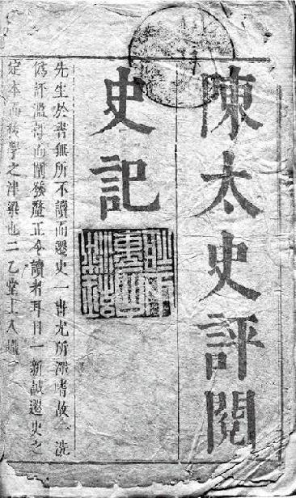
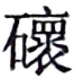
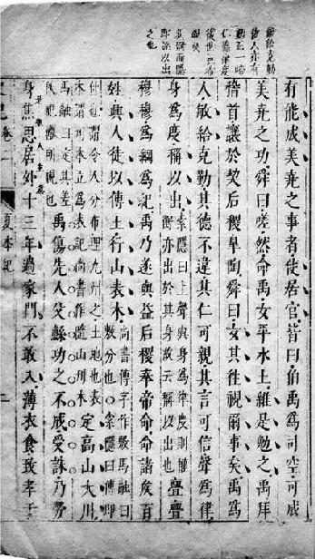
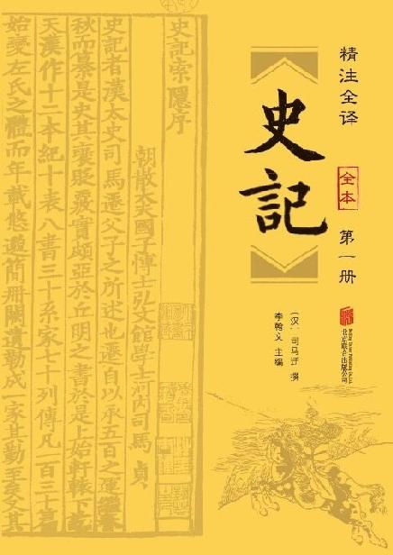
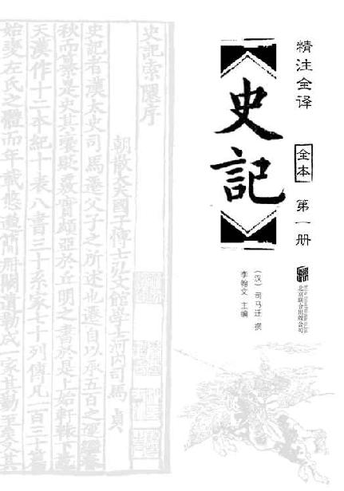
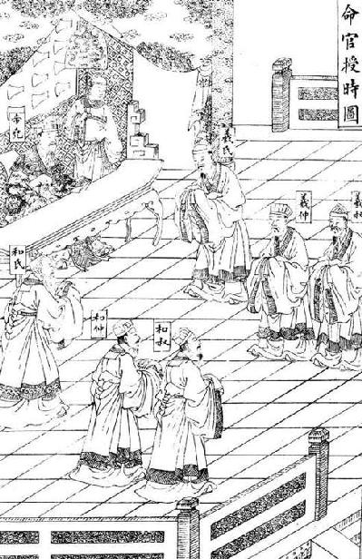
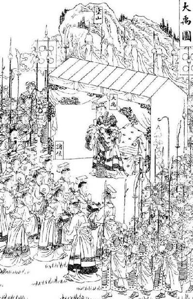
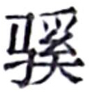
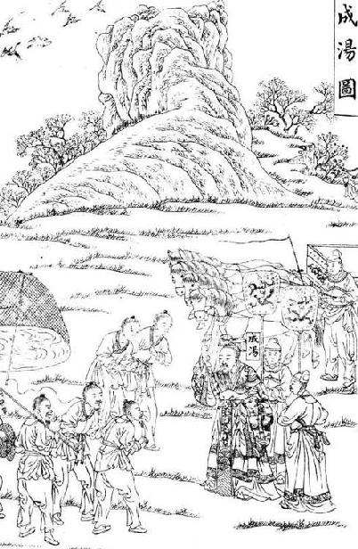
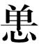

总目录
图书在版编目（CIP）数据
史记/（汉）司马迁撰；李翰文整理. --北京：北京联合出版公司，2016.8
ISBN 978-7-5502-8049-6
Ⅰ. ①史… Ⅱ. ①司…②李… Ⅲ. ①中国历史－古代史－纪传体 Ⅳ. ①K204.2
中国版本图书馆CIP数据核字（2016）第147963号
书 名 史记
作 者 （汉）司马迁
主 编 李翰文
责任编辑 李 伟 冯益萍
出版发行 北京联合出版公司
地 址 北京市西城区德外大街83号楼9层 邮编：100088
策划经销 智品天下图书（北京）有限公司 北京市朝阳区建外SOHO西区15号楼1层1515号，邮编：100022
印 刷 环球东方（北京）印务有限公司
开 本 880×1230毫米 1/32
印 张 98
字 数 1600千字
版 次 2016年8月第1版 2017年4月第3次印刷
标准书号 ISBN 978-7-5502-8049-6
定 价 198.00元
（本书凡印装错误可向承印厂调换，电话：010—60279267）

《陈太史评阅史记》 明崇祯元年（1628）刻本 书名页书影
《陈太史评阅史记》 明崇祯元年（1628）刻本 序书影

《陈太史评阅史记》 明崇祯元年（1628）刻本 卷端书影

《陈太史评阅史记》 明崇祯元年（1628）刻本 正文（带批评）书影
前言
作为有着五千年悠久文明历史的国度，中国有世界上最为完备的、不间断的历史记载，中华史籍浩如烟海，内容博大精深。这些史籍是我们民族宝贵的精神财富，也是全人类的共同遗产。
中国历代史书中，以被赋予“正史”地位的“二十四史”最为重要，而“二十四史”之首就是西汉司马迁所著的《史记》。
《史记》是一部贯穿古今的通史，从传说中的黄帝开始，一直写到汉武帝元狩元年（前122年），叙述了三千年左右的历史。全书略于先秦，详于秦汉，有本纪十二篇，表十篇，书八篇，世家三十篇，列传七十篇，共一百三十篇。
本纪，实际上就是帝王的传记。同时，本纪也是全书的总纲，用编年体的方法记事。在本纪的写作中，司马迁采取了详今略远的办法，时代愈远愈略，愈近愈详。本纪从传说中的黄帝开始写起，是因为黄帝是中华民族的始祖。司马迁还将项羽列入本纪，一是秦汉间几年“政由羽出”，一是推崇其人格。
表，用表格的形式记述重大事件，纲举目张，以简御繁，一目了然，便于观览、检索。
书，记载历代朝章国典，以明古今制度沿革的专章。班固《汉书》改称志，以后成为通例。书的修撰，为研究各种专门史提供了丰富的资料。
世家，记载诸侯王国之事。因为诸侯开国承家，子孙世袭，所以他们的传记叫作世家。司马迁把孔子和陈涉也列入世家，是一种例外。孔子虽非王侯，但却是传承三代文化的宗主，更何况汉武帝时儒学独尊，孔子是儒学的创始人，将之列入世家也反映了思想领域的现实情况。至于陈涉，他是第一个起义亡秦的领导者，而且是三代以来以平民起兵而反残暴统治的第一人，而亡秦的侯王原来又多是他的部下。司马迁将之列入世家，把他的功业和商汤推翻夏桀，武王伐纣，孔子作《春秋》相比，将他写成震撼秦帝国统治、叱咤风云的伟大历史英雄，反映了作者进步的历史观。
列传是记载帝王、诸侯以外的各种历史人物的，有单传，有合传，有类传。单传是一人一传，如《商君列传》《李斯列传》等。合传是记二人以上，如《管晏列传》《老子韩非列传》等。类传是以类相从，把同一类人物的活动，归到一个传内，如《儒林列传》《循吏列传》《刺客列传》等。司马迁把当时我国四周少数民族的历史情况，也用类传的形式记载下来，如《匈奴列传》《西南夷列传》《大宛列传》等，这就为研究我国古代少数民族的历史，提供了重要的史料来源。
我们这次出版的这部《史记》，概括起来，有以下几个特点：
一、选择完整底本，为读者呈现出一部完整的《史记》。我们的全本不仅指《史记》文字上的全本，对于表的部分，也一同收录。
二、为了帮助读者更好地理解《史记》，我们将正文中的生僻字词加以注音、注释，并在原文下增加了白话文的翻译，文白对照便于读者阅读。
三、我们选取了中国古代的优秀版画作为本书的插图。为了本书的配图，我们翻阅了大量古代刊刻资料，所选版画出处繁多，包括《帝鉴图说》《钦定书经图说》《飞影阁画集》《马骀画宝》等古籍，几乎涵盖了所有古代版画的优秀作品。图文并茂，具象化阅读经典。
为读者拨开历史的云雾，自我们的先民处学得处事之道、治世之理，以便为今天的生活所借鉴，这是我们编撰这本书的目的所在。我们由衷地希望，当读者朋友们在阅读本书时，可以感受到我们的祖先所创造出领先世界的古代文化的辉煌；但更重要的是，善于从祖先的智慧中学习，为自己所用。这才是两千年以前的司马迁写《史记》和两千年以后的我们重新编辑《史记》的价值所在。


卷一 目录
卷一 五帝本纪第一
卷二 夏本纪第二
卷三 殷本纪第三
卷四 周本纪第四
卷五 秦本纪第五
卷六 秦始皇本纪第六
卷七 项羽本纪第七
卷八 高祖本纪第八
卷九 吕太后本纪第九
卷十 孝文本纪第十
卷十一 孝景本纪第十一
卷十二 孝武本纪第十二
卷十三 三代世表第一
卷十四 十二诸侯年表第二
返回总目录
卷一 五帝本纪第一
杨慎：“《五帝纪》亦非太史公极笔。”归震川：“史公究是秦汉时人作，始皇项羽本纪其事雄伟，笔力与之称，五帝三王本纪便时见其陋，然古书存者盖亦少矣。”
本篇记述了黄帝、颛顼、帝喾、尧、舜的传说，主要取材于《世本》《尚书》《大戴礼记》。五帝是否真实存在，学术界众说纷纭，然而本篇并非荒诞不经的神话故事，从一定程度上反映了原始社会末期华夏先民的生活情况，对研究中国政治思想的起源和发展也有很大参考价值。
黄帝者，少典之子【子：后代。】 ，姓公孙，名曰轩辕。生而神灵，弱而能言，幼而徇齐【徇齐：思维敏捷。】 ，长而敦敏，成而聪明。
轩辕之时，神农氏世衰。诸侯相侵伐，暴虐百姓，而神农氏弗能征。于是轩辕乃习用干戈【干戈：干是盾牌，戈是一种长柄横刃兵器。】 ，以征不享，诸侯咸【咸：都。】 来宾从。而蚩尤最为暴，莫能伐。炎帝欲侵陵诸侯，诸侯咸归轩辕。轩辕乃修德振兵，治五气【五气：五行之气。古时候以五行和四时相配，春为木，夏为火，季夏为土，秋为金，冬为水。】 ，蓺yì【蓺：种植。】 五种，抚万民，度四方，教熊、罴pí、貔pí、貅xiū、貙chū、虎【熊、罴、貔、貅、貙、虎：都是勐兽名。《索隐》认为这些勐兽经过训练可以作战。《正义》认为这些勐兽名是用来给军队命名的，借以威吓敌人。六种勐兽可能是六个氏族的图腾。】 ，以与炎帝战于坂bǎn泉之野。三战，然后得其志。蚩chī尤作乱，不用帝命。于是黄帝乃征师诸侯，与蚩尤战于涿zhuō鹿之野，遂禽【禽：通“擒”，抓捕。】 杀蚩尤。而诸侯咸尊轩辕为天子，代神农氏，是为黄帝。天下有不顺者，黄帝从而征之，平者去之。披山信道，未尝宁居。
黄帝是少典氏的后代，姓公孙，名轩辕。他刚出生就表现出神奇灵异的一面，很小的时候就会说话了，年幼时就思维敏捷，稍大一些则纯朴勤勉，成年以后能够明辨是非。
轩辕的时候，正处在神农氏衰落的时代。诸侯之间相互攻伐，残害百姓，而神农氏没有能力征讨。于是轩辕就训练士兵使用武器，来征讨不来朝贡的人，诸侯就都俯首称臣了。可是蚩尤非常残暴，谁也无法征服他。炎帝想要侵犯诸侯，诸侯就都归顺了轩辕。于是轩辕推广德行，整顿军队，调和五行，种植五谷，安抚百姓，测量土地，训练像熊罴、貔貅、貙虎一样凶猛的士兵，率领他们在坂泉的郊野和炎帝交战。经过三次交战，黄帝的军队获得胜利。这时蚩尤作乱，不听黄帝的命令。于是黄帝就徵调诸侯的军队，在涿鹿的郊野和蚩尤交战，最后擒获并杀死蚩尤。这时诸侯都尊奉轩辕为天子，取代神农氏，这就是黄帝。天下有不顺从的，黄帝就去征讨，直到平定才离开。从此黄帝开山通路，从来没有安稳休息的时候。
东至于海，登丸山，及岱宗。西至于空桐，登鸡头。南至于江，登熊、湘。北逐荤粥【荤粥：古代北方民族，秦汉以后称“匈奴”。】 ，合符釜山，而邑于涿鹿之阿。迁徙往来无常处，以师兵为营卫。官名皆以云命，为云师。置左右大监，监于万国。万国和，而鬼神、山川、封禅【封禅：祭祀天地。】 与为多焉。获宝鼎，迎日推䇲【推䇲：推演历数。䇲，同“策”。】 。举风后、力牧、常先、大鸿以治民。顺天地之纪，幽明之占，死生之说，存亡之难。时【时：按季节。一说通“莳”，栽种。】 播百谷草木，淳化鸟兽虫蛾，旁罗日月星辰，水波土石金玉，劳勤心力耳目，节用水火材物。有土德之瑞，故号黄帝。
黄帝二十五子，其得姓者十四人。
黄帝居轩辕之丘，而娶于西陵之女，是为嫘léi祖。嫘祖为黄帝正妃，生二子，其后皆有天下：其一曰玄嚣xiāo，是为青阳，青阳降居江水；其二曰昌意，降居若水。昌意娶蜀山氏女，曰昌仆，生高阳，高阳有圣德焉。黄帝崩，葬桥山。其孙昌意之子高阳立，是为帝颛zhuān顼xū也。
陈仁锡：“《五帝纪》有谓非太史公极笔者，以少跌宕处耳，正惟无跌宕，乃太史公极用意之文，其叙次征诛、揖让、朝觐、会同，圣人经世大典，严整慎重，一切齐谐怪语之书，不能轻入，所以为史中之经，而高古质邃尤为可喜。”
东面到大海，登上丸山，一直到泰山。西面到空桐山，登上鸡头山。南面到长江，登上熊山、湘山。在北面驱逐荤粥，来到釜山与诸侯合验符契，并在涿鹿山坳处创建都邑。黄帝四处迁徙，没有固定的住处，派军队为自己宿卫。官职都是用云来命名，称为云师。设置左右大监，监理各国。从此天下各国安定，因此祭祀鬼神、山川、封禅的事情，在黄帝时最多。黄帝得到宝鼎，观测太阳，推算历法。他任用风后、力牧、常先、大鸿来治理百姓。黄帝顺应天地四时的规律，推测阴阳气候的变化，论说生死的道理，分析存亡的原因。他按时节栽种谷物和草木，驯化鸟兽和昆虫，包罗日月星辰，泽及土石金玉，劳烦身心耳目，节约各种器物。轩辕有土德的祥瑞，因此号为黄帝。
黄帝有二十五个儿子，其中获得姓氏的有十四个人。
黄帝住在轩辕山，娶西陵氏的女子为妻，就是嫘祖。嫘祖是黄帝的正妃，生了两个儿子，他们的后代都曾经统治天下：第一个叫玄嚣，也就是青阳，他在江水立国；第二个叫昌意，他在若水立国。昌意娶蜀山氏的女子为妻，名叫昌仆，生下高阳。高阳是个具有至高道德的人。黄帝去世后，被埋葬在桥山。他的孙子、昌意的儿子高阳继承帝位，这就是帝颛顼。
帝颛顼高阳者，黄帝之孙而昌意之子也。静渊【静渊：深沉稳重。】 以有谋，疏通【疏通：通达。】 而知事；养材以任地，载时以象天，依鬼神以制义，治气以教化，絜诚以祭祀。北至于幽陵，南至于交址zhǐ，西至于流沙，东至于蟠木。动静之物，大小之神，日月所照，莫不砥dǐ属。
帝颛顼生子曰穷蝉。颛顼崩，而玄嚣之孙高辛立，是为帝喾kù。
帝喾高辛者，黄帝之曾孙也。高辛父曰蟜jiǎo极，蟜极父曰玄嚣，玄嚣父曰黄帝。自玄嚣与蟜极皆不得在位，至高辛即帝位。高辛于颛顼为族子。
高辛生而神灵，自言其名。普施利物，不于其身。聪以知远，明以察微。顺天之义，知民之急。仁而威，惠而信，修身而天下服。取地之财而节用之，抚教万民而利诲之，历日月而迎送之，明鬼神而敬事之。其色郁郁【郁郁：肃穆的样子。】 ，其德嶷yí嶷【嶷嶷：高大的样子。】 。其动也时，其服也士。帝喾溉【溉：灌溉。一说通“概”，本义指量粮食时用来刮平升斗的木板，引申义为公平。】 执中而遍天下，日月所照，风雨所至，莫不从服。
帝喾娶陈锋氏女，生放勋；娶娵jū訾zì氏女，生挚。帝喾崩，而挚代立。帝挚立，不善，而弟放勋立，是为帝尧。
帝颛顼高阳，他是黄帝的孙子，昌意的儿子。他深沉而有谋略，通达而明事理；他让人耕作时充分利用土地，做事时顺应自然规律，依从鬼神来制定礼仪，调和五行来教化百姓，虔诚恭敬地进行祭祀。他向北到达幽陵，向南到达交址，向西到达流沙，向东到达蟠木。事物不论动静，神灵不论大小，只要是日月能够照到的地方，没有不归顺他的。
帝颛顼生的儿子叫穷蝉。颛顼去世以后，玄嚣的孙子高辛继承帝位，这就是帝喾。
帝喾高辛，是黄帝的曾孙。高辛的父亲叫蟜极，蟜极的父亲叫玄嚣，玄嚣的父亲就是黄帝。从玄嚣到蟜极都没能继承帝位，到高辛时才登上帝位。高辛是颛顼的族侄。
高辛生下来就表现出神奇灵异的一面，能够说出自己的名字。他广施恩惠，不为自己着想。凭借聪慧来探知远处之事，凭借明智来洞察细微之情。他顺应上天的道义，了解百姓的疾苦。仁德而不失威严，慈惠而遵守诚信，修养身心而使天下人都归服。他获取土地的财富而节约使用，安抚教化百姓而用利益引导他们，推算日月的运行规律并迎来送往，明白鬼神的祭祀礼仪并虔诚供奉。他仪表堂堂，道德高尚。他的举动符合时宜，他的服饰就像士人。帝喾秉持公正的举措遍及天下，日月所能够照到的地方，风雨所能够降临的地方，没有不服从他的。
帝喾娶陈锋氏的女子为妻，生下放勋；娶娵訾氏的女子为妻，生下挚。帝喾去世以后，挚继承帝位。帝挚在位期间，不行善政，他的弟弟放勋登上帝位，这就是帝尧。
郭嵩焘：“案史公赞称‘百家言黄帝，其文不雅驯’，《五帝纪》但叙其德而不详其事，以事之着见于百家者，皆非雅驯者也。伏羲之蛇首人身，神农之人身牛首，皆其类也。杨升庵谓‘《五帝纪》非史公极笔’，固也。然史公意在雅驯而已，太古荒遐，传闻缪悠，史公于此为有断制。”
帝尧者，放勋。其仁如天，其知【知：同“智”。】 如神。就之如日，望之如云。富而不骄，贵而不舒。黄收【收：冕。】 纯衣【纯衣：缁衣，黑色朝服。】 ，彤tóng车乘【乘：四马拉一车。】 白马。能明驯德，以亲九族。九族既睦，便章【便章：治理。】 百姓。百姓昭明，合和万国。
乃命羲、和，敬顺昊hào天，数法日月星辰，敬授民时。分命羲仲，居郁夷，曰旸yáng谷。敬道日出，便程【便程：分别次第，使做事有步骤。便，通“辨”，别。】 东作。日中【日中：指春分。】 ，星鸟【星鸟：朱雀，即二十八宿中的南方七宿。】 ，以殷中春。其民析，鸟兽字微【字微：也作“孳尾”，交配繁衍。】 。申命羲叔，居南交。便程南为，敬致【致：指太阳回归。】 。日永【日永：指夏至。】 ，星火【星火：指心宿，二十八宿中东方七宿之一。】 ，以正中夏。其民因，鸟兽希革【希革：指夏季炎热，鸟兽皮上毛羽稀少。希，同“稀”。革，兽皮。】 。申命和仲，居西土，曰昧谷。敬道日入，便程西成。夜中【夜中：指秋分。】 ，星虚【星虚：虚宿，二十八宿中北方七宿之一。】 ，以正中秋。其民夷易，鸟兽毛毨xiǎn【毛毨：鸟兽新长出的整齐的毛。】 。申命和叔，居北方，曰幽都。便在伏物。日短【日短：指冬至。】 ，星昴【星昴：昴宿，二十八宿中西方七宿之一。】 ，以正中冬。其民燠yù【燠：指温暖的室内。】 ，鸟兽氄rǒng毛【氄毛：鸟兽身上细软茂密的毛。】 。岁三百六十六日，以闰月正四时。信饬【信饬：申敕，告诫。】 百官，众功皆兴。
帝尧名叫放勋。他的仁德像天空一样浩大，他的智慧像神灵一样高深。人们像追逐太阳一样跟随着他，像遥望云彩一样仰慕着他。帝尧富有却不骄纵，尊贵却不傲慢。他头戴黄色冕冠，身穿黑色朝服，乘坐红色车驾，用四匹白马拉着。他能发扬高尚的品德，让九族亲密和睦。九族已经和睦，再去考察百官。百官的善恶已经彰明，再去协调各国的关系。
帝尧于是命令羲氏、和氏，恭敬地尊奉上天的旨意，根据日月星辰的变化制定历法，教导百姓按照时令从事生产。他命令羲仲，居住在郁夷，又叫旸谷。他恭敬地迎接太阳升起，有步骤地测定日出的准确时刻。白天和夜晚等长那天是春分，朱雀出现在正南方时，确定为仲春。这个时候，百姓分散到田野中耕种，鸟兽交尾生育。帝尧又命令羲叔，居住在南交，有步骤地观察太阳向南运行的规律，恭敬地等待太阳的回归。白天最长的那天是夏至，心宿出现在正南方时，确定为仲夏。这个时候，百姓都搬到高处，鸟兽的毛还不够丰满。帝尧又命令和仲，居住在西方，名叫昧谷。他恭敬地送别太阳，有步骤地观测日落的情况。夜晚和白天等长的那天是秋分，虚宿出现在正南方时，确定为仲秋。这个时候，百姓迁往平原，鸟兽刚长出整齐的毛。帝尧命令和叔，居住在北方，名叫幽都，有步骤地安排储藏的事情。白天最短的那天是冬至，昴宿出现在正南方时，确定为仲冬。这个时候，百姓进入温暖的室内，鸟兽的毛变得浓密。一年中有三百六十六天，用设置闰月的方法调整四季。帝尧告诫百官，各种事务都顺利进行。
尧曰：“谁可顺此事？”放齐曰：“嗣子丹朱开明。”尧曰：“吁xū！顽凶，不用。”尧又曰：“谁可者？”讙huān兜曰：“共工旁聚布功，可用。”尧曰：“共工善言，其用僻，似恭漫天，不可。”尧又曰：“嗟！四岳，汤汤【汤汤：水流盛大的样子。】 洪水滔天，浩浩怀山襄陵，下民其忧，有能使治者？”皆曰鲧gǔn可。尧曰：“鲧负命毁族，不可。”岳曰：“异哉！试不可用而已。”尧于是听岳用鲧。九岁，功用不成。
尧曰：“嗟！四岳：朕在位七十载，汝能庸命【庸命：指顺应天命。庸，同“用”。】 ，践朕位？”岳应曰：“鄙德忝【忝：不配。】 帝位。”尧曰：“悉举贵戚及疏远隐匿者。”众皆言于尧曰：“有矜【矜：通“鳏”，无妻的成年男子。】 在民间，曰虞舜。”尧曰：“然，朕闻之。其何如？”岳曰：“盲者子。父顽，母嚚yín【嚚：愚昧。】 ，弟傲，能和以孝，烝zhēng烝【烝烝：德行美好的样子。】 治，不至奸。”尧曰：“吾其试哉！”于是尧妻之二女，观其德于二女。舜饬下二女于妫guī汭ruì【汭：河流拐弯处。】 ，如妇礼。尧善之，乃使舜慎和五典【五典：指父义、母慈、兄友、弟恭、子孝五种伦理教化。】 ，五典能从。乃遍入百官，百官时序。宾于四门，四门穆穆，诸侯远方宾客皆敬。尧使舜入山林川泽，暴风雷雨，舜行不迷。尧以为圣，召舜曰：“女【女：通“汝”，你。】 谋事至而言可绩，三年矣。女登帝位。”舜让于德不怿。正月上日，舜受终于文祖。文祖者，尧大祖也。
尧说：“有谁能够治理好国家的大事？”放齐说：“您的儿子丹朱通达事理。”尧说：“唉！丹朱凶顽，不能用他。”尧又说：“还有谁能够继承我的帝位呢？”讙兜说：“共工能够广泛地聚集民众，很有功效，可以让他来继承帝位。”尧说：“共工说话很好听，但是做起事情却违背正道，表面上恭敬，实际上罪恶滔天，不能用他。”尧又说：“啊！四岳，波涛滚滚的洪水漫天而来，浩浩荡荡地围绕群山，冲上丘陵，百姓都非常担心，有谁能整治洪水呢？”众人都说鲧可以胜任。尧说：“鲧违反命令，伤害族人，不能用他。”四岳说：“不会吧！可以先让他试试，如果不行再罢免他。”于是尧听从了四岳的建议，任用鲧治水。鲧治水九年，没有成功。
尧说：“啊！四岳，我在位已经七十年了，你们哪一位能够顺应天命，接替我的职位呢？”四岳回答说：“我们的德行低微，不配登上帝位。”尧说：“你们尽管举荐贵族宗亲或旁支隐居的人。”众人都对尧说：“在民间有一个还没娶妻的人，他叫虞舜。”尧说：“是的，这个人我听说过。他是个怎样的人呢？”四岳说：“他是盲人的儿子。他的父亲凶顽，母亲愚昧，弟弟狂傲，他却能用孝行使家庭和睦，用美德治理家业，让家人远离邪恶。”尧说：“我试试吧！”于是尧把自己的两个女儿嫁给了舜，通过舜对待妻子的态度来观察他的德行。舜在妫水弯曲处迎娶尧的两个女儿，让她们遵守为人妇的礼节。尧对舜的做法非常满意，就让舜谨慎地完善各种伦理教化，人们都能遵守教化。于是舜用这些教化来整顿百官，百官也能遵守法纪。舜在四门接待宾客，四门一派庄严肃穆的景象，四方诸侯和远方宾客都非常恭敬。尧派舜进入山林川泽，当暴风雷雨来临的时候，舜仍然前进而不会迷失方向。尧认为舜很圣明，召见舜说：“你考虑问题周密，说过的话都能办到，已经三年了。现在请你登上帝位。”舜认为自己的德行还不能胜任，并且感到不安。正月初一日，舜在文祖庙接受禅让。文祖，就是尧的太祖。
于是帝尧老，命舜摄行天子之政，以观天命。舜乃在璇玑jī玉衡【璇玑玉衡：指北斗七星。】 ，以齐七政【齐七政：整顿七种政务。七政，指下文中的祭祀、班瑞、东巡、南巡、西巡、北巡、归至祖庙七项政事。】 。遂类【类：通“禷”，一种祭天礼。】 于上帝，禋yīn【禋：一种祭天礼，烧柴升烟，向天祈福。】 于六宗【六宗：指天地和四季。】 ，望于山川，辩【辩：通“遍”，普遍地祭祀。】 于群神。揖【揖：通“辑”，聚敛。】 五瑞，择吉月日，见四岳诸牧，班【班：同“颁”，分赐，颁发。】 瑞。岁二月，东巡狩，至于岱宗，祡【祡：同“柴”，指烧柴祭天。】 ，望秩于山川。遂见东方君长，合时月正日，同律度量衡，修五礼【五礼：指五等爵位的朝聘礼仪。】 、五玉【五玉：即前文中的“五瑞”。】 、三帛、二生【二生：活的羊羔和大雁。】 、一死【一死：死的野雉。】 为挚【挚：通“贽”，礼物。】 。如五器，卒乃复。五月，南巡狩；八月，西巡狩；十一月，北巡狩：皆如初。归，至于祖祢mí庙，用特牛礼。五岁一巡狩，群后四朝。遍告以言，明试以功，车服以庸。肇zhào十有二州，决川。象以典刑，流宥yòu五刑，鞭作官刑，扑作教刑，金作赎刑。眚shěng灾过赦，怙终贼刑。钦哉，钦哉，惟刑之静哉！
这时帝尧年事已高，命令舜代替他行使天子的职权，来观察他是否顺应天命。于是舜根据北斗七星的运行规律，来整顿七项政事。舜就祭祀天帝，礼敬六宗，望祭名山大川，遍祭天下诸神。舜收聚五种瑞玉，选择吉利的日子，会见四岳和诸侯，并向他们颁赐瑞玉。这年二月，舜到东方去巡视，到达泰山，在那里烧柴祭天，望祭名山大川。于是他会见东方各国的君长，调和校正历法，共同制定音律、长度、容积、重量的标准，颁行五等爵位的朝聘礼仪、五种瑞玉的形制、三种彩色丝帛、二种活牲、一种死禽作为礼物。那五种玉器，在礼毕后全部还给诸侯。五月，舜到南方去巡视；八月，他又到西方去巡视；十一月，到北方去巡视，都遵照最初的礼仪。回来以后，他就到宗庙，用一头牛做祭品。以后他每隔五年到各地巡视一次，各地君长每隔四年前来朝见一次。舜向天下各地宣明政令，根据政绩公开进行考核，把车马服饰赏赐给他们。舜设立了十二州，疏导了河流。他在器物上画着五种刑罚的图像，用流放代替五刑，以鞭打为做官不治的刑罚，以杖笞为不遵教化的刑罚，以罚金为赎罪的刑罚。犯了错误可以赦免，姑息养奸就要给予严惩。小心啊，小心啊，在使用刑罚时，可要十分慎重啊！
讙兜进言共工，尧曰：“不可。”而试之工师，共工果淫辟。四岳举鲧治鸿水，尧以为不可，岳强请试之，试之而无功，故百姓不便。三苗在江淮、荆州数为乱。于是舜归而言于帝，请流共工于幽陵，以变北狄；放讙兜于崇山，以变南蛮；迁三苗于三危，以变西戎；殛【殛：流放远方。】 鲧于羽山，以变东夷：四罪而天下咸服。
尧立七十年得舜，二十年而老，令舜摄行天子之政，荐之于天。尧辟位【辟位：退位。辟，同“避”。】 凡二十八年而崩。百姓悲哀，如丧父母。三年，四方莫举乐，以思尧。尧知子丹朱之不肖【不肖：不贤，不成才。】 ，不足授天下，于是乃权授舜。授舜，则天下得其利而丹朱病；授丹朱，则天下病而丹朱得其利。尧曰“终不以天下之病而利一人”，而卒授舜以天下。尧崩，三年之丧毕，舜让辟丹朱于南河之南。诸侯朝觐jìn者不之丹朱而之舜，狱讼者不之丹朱而之舜，讴歌者不讴歌丹朱而讴歌舜。舜曰“天也”，夫而后之中国践天子位焉，是为帝舜。
讙兜推荐共工，尧说：“不能用他。”可是试着让他做工师，结果共工果然放纵作恶。四岳推荐鲧治理洪水，尧也认为他不可用，四岳坚持请求试用鲧，但是试用以后没有收到成效，所以百姓还是生活艰难。三苗部族在江淮、荆州一带经常作乱。这时舜回来向帝尧报告，请求将共工流放到幽陵，使其与北狄融合；将讙兜驱赶到崇山，使其与南蛮融合；将三苗迁徙到三危，使其与西戎融合；将鲧放逐到羽山，使其与东夷融合：四凶服罪使天下人都臣服于舜。
尧在位七十年才得到舜，二十年后年老退位，让舜代替自己行使天子的职权，向上天举荐他。尧让位二十八年后去世了。百姓都非常难过，就像失去了父母一样。尧死后的三年内，各地都不曾演奏音乐，以此表达哀思。尧知道儿子丹朱不贤能，无法承担治理天下的重任，于是先把帝位传给了舜。尧将帝位传给舜，就会使天下人获利，而让丹朱一人痛苦；将帝位传给丹朱，就会使天下人受苦，而只让丹朱一人获利。尧说“终究不能让天下人受苦而使一人获利”，而终于将天下传给了舜。帝尧去世，在其三年丧期结束后，舜将帝位让给丹朱后躲避到南河以南。结果诸侯都不去朝见丹朱而来朝见舜，诉讼的人也不去找丹朱而来找舜，歌颂的人不歌颂丹朱而歌颂舜。舜说“这是天命”，然后到中原正式登上天子之位，这就是帝舜。
虞舜者，名曰重华。重华父曰瞽gǔ叟，瞽叟父曰桥牛，桥牛父曰句望，句望父曰敬康，敬康父曰穷蝉，穷蝉父曰帝颛顼，颛顼父曰昌意：以至舜七世矣。自从穷蝉以至帝舜，皆微为庶人。
舜父瞽叟盲，而舜母死，瞽叟更娶妻而生象，象傲。瞽叟爱后妻子，常欲杀舜，舜避逃；及有小过，则受罪。顺事父及后母与弟，日以笃谨，匪有解【匪：没有，不。解：同“懈”，怠慢。】 。
舜，冀州之人也。舜耕历山，渔雷泽，陶河滨，作什器于寿丘，就时【就时：经商。】 于负夏。舜父瞽叟顽，母嚚，弟象傲，皆欲杀舜。舜顺适不失子道，兄弟孝慈。欲杀，不可得；即求，尝【尝：通“常”。】 在侧。
舜年二十以孝闻。三十而帝尧问可用者，四岳咸荐虞舜，曰可。于是尧乃以二女妻舜以观其内，使九男与处以观其外。舜居妫汭，内行弥谨。尧二女不敢以贵骄事舜亲戚，甚有妇道。尧九男皆益笃。舜耕历山，历山之人皆让畔；渔雷泽，雷泽上人皆让居；陶河滨，河滨器皆不苦窳yǔ【苦窳：粗劣。】 。一年而所居成聚，二年成邑，三年成都。尧乃赐舜絺chī衣，与琴，为筑仓廪，予牛羊。瞽叟尚复欲杀之，使舜上涂廪，瞽叟从下纵火焚廪。舜乃以两笠自扞hàn而下，去，得不死。后瞽叟又使舜穿井，舜穿井为匿空旁出。舜既入深，瞽叟与象共下土实井，舜从匿空出，去。瞽叟、象喜，以舜为已死。象曰：“本谋者象。”象与其父母分，于是曰：“舜妻尧二女，与琴，象取之。牛羊仓廪予父母。”象乃止舜宫居，鼓其琴。舜往见之，象鄂【鄂：通“愕”，吃惊。】 不怿yì，曰：“我思舜正郁陶【郁陶：哀伤的样子。】 ！”舜曰：“然，尔其庶矣！”舜复事瞽叟爱弟弥谨。于是尧乃试舜五典百官，皆治。

帝尧命官授时图，选自清代《钦定书经图说》。
虞舜名叫重华。重华的父亲是瞽叟，瞽叟的父亲是桥牛，而桥牛的父亲叫句望，句望的父亲是敬康，敬康的父亲是穷蝉，穷蝉的父亲是颛顼，颛顼的父亲是昌意：到舜已经有七代了。从穷蝉到帝舜，都是卑微的平民。
舜的父亲瞽叟是个盲人，而舜的母亲去世了，瞽叟续娶妻子生下象，象为人狂傲。瞽叟宠爱后妻的儿子，经常想要杀害舜，但是舜都逃脱了；舜一旦犯了小的过失，就会遭到父亲的惩罚。他却仍然恭顺地对待父亲以及后母和弟弟，他每天对家人都很真诚，没有松懈怠慢的时候。
舜是冀州人。他在历山耕种，在雷泽捕鱼，在黄河边烧制陶器，在寿丘制作各种日用器物，在负夏经商。舜的父亲瞽叟凶顽，母亲愚昧，弟弟象狂傲，他们都想将舜杀死。舜却恭顺地对待他们而不失为人子之道，孝顺父母，友爱兄弟。父母兄弟虽然想杀他，却始终不能得逞；他们有求于舜，舜又会经常陪伴左右。
舜二十岁的时候凭借孝德而天下闻名。三十岁的时候，帝尧询问可以重用的人，四岳都推荐虞舜，说他可用。于是帝尧将两个女儿嫁给舜来观察他治理家庭的情况，派九个儿子和舜相处来观察他待人接物的情况。舜居住在妫水弯曲处，他在家中表现得非常恭谨。尧的两个女儿也不敢凭借高贵的出身而以傲慢的态度对待舜的亲戚，谨守为人妇之道。尧的九个儿子也更加纯朴厚道了。舜在历山种田的时候，历山的百姓都相互谦让田界；舜在雷泽捕鱼的时候，雷泽的百姓都相互谦让位子；舜在黄河边烧制陶器的时候，黄河边出产的陶器没有一件是粗制滥造的。舜所居住的地方一年就会形成村落，两年就会变为城邑，三年就会发展成都市。于是尧赏赐给舜细葛布做成的衣服，还赠给他琴，为他建造粮仓，送给他牛羊。舜的父亲瞽叟还想谋害舜，就让舜到粮仓顶部涂泥，然后瞽叟就从下面放火烧粮仓。舜就用两个斗笠保护自己从粮仓上面跳下来，逃走了，得以保住性命。瞽叟又让舜去挖井，舜在挖井的时候挖了一个通向外面的隐蔽信道。当舜挖到深处时，瞽叟和象一起用土把井口填实，舜就从隐蔽的信道逃出来，逃走了。瞽叟、象很高兴，他们以为舜已经死了。象说：“这个主意本来是我想到的。”象和父母分舜的财产，于是说：“舜的妻子，也就是尧的两个女儿，和琴，都归我了。牛羊和粮仓留给父母。”于是象跑到舜的居室住了下来，还弹着舜的琴。舜回到自己的住处看到象，象大惊失色，说：“我思念你正感到伤心难过呢！”舜说：“是的，你对我差不多就是这样了！”舜仍然侍奉瞽叟、友爱兄弟，而且更加勤谨了。于是尧试着让舜负责推行五种教化和管理百官，舜都做得很好。
昔高阳氏有才子八人，世得其利，谓之“八恺”。高辛氏有才子八人，世谓之“八元”。此十六族者，世济其美，不陨其名。至于尧，尧未能举。舜举八恺，使主后土，以揆kuí百事，莫不时序。举八元，使布五教于四方，父义，母慈，兄友，弟恭，子孝，内平外成。
昔帝鸿氏有不才子，掩义隐贼，好行凶慝tè，天下谓之“浑沌”。少皞hào氏有不才子，毁信恶忠，崇饰恶言，天下谓之“穷奇”。颛顼氏有不才子，不可教训，不知话言，天下谓之“梼táo杌wù”。此三族世忧之。至于尧，尧未能去。缙云氏有不才子，贪于饮食，冒于货贿，天下谓之“饕tāo餮tiè”。天下恶之，比之三凶。舜宾于四门，乃流四凶族，迁于四裔，以御螭chī魅，于是四门辟，言毋【毋：同“无”。】 凶人也。
从前高阳氏有八个德才兼备的儿子，世人都得到他们的恩惠，称他们为八恺。高辛氏也有八个德才兼备的儿子，世人称他们为“八元”。这十六个家族的人，世代保持着祖先的美好品德，从来没有做过毁损祖先声誉的事情。到了尧的时候，尧没有能够任用他们。舜举荐八恺，让他们主管农业，负责各项政务，没有一件事不合时令。舜又举荐八元，让他们到四方推行五种教化，于是父亲恩义，母亲慈爱，哥哥友善，弟弟恭敬，儿子孝顺，家庭和睦，邻里真诚。
从前帝鸿氏有一个不成器的儿子，不施仁义，阴险狠毒，喜欢行凶作恶，天下人都称他为“浑沌”。少皞氏也有一个不成器的儿子，诋毁诚实的人，厌恶忠直的人，粉饰邪恶的言论，天下人都称他为“穷奇”。颛顼氏也有一个不成器的儿子，他不接受教诲，不听取好话，天下人都称他为“梼杌”。这三个家族的人，世代令人感到忧虑。到了尧的时候，尧也没能除掉他们。缙云氏有一个不成器的儿子，贪恋饮食，贪求财物，天下人都称他为“饕餮”。天下人都非常憎恶他，把他和上述三个凶恶的人相提并论。舜在四门接待宾客的时候，就将这四个凶恶的家族流放了，把他们迁徙到最偏远的四个地方，让他们去抵御妖魔鬼怪。于是四门通畅，人们都说没有凶恶的人了。
舜入于大麓，烈风雷雨不迷，尧乃知舜之足授天下。尧老，使舜摄行天子政，巡狩。舜得举用事二十年，而尧使摄政。摄政八年而尧崩。三年丧毕，让丹朱，天下归舜。而禹、皋陶、契、后稷、伯夷、夔kuí、龙、倕chuí、益、彭祖自尧时而皆举用，未有分职。于是舜乃至于文祖，谋于四岳，辟四门，明通四方耳目，命十二牧论帝德，行厚德，远佞人，则蛮夷率服。舜谓四岳曰：“有能奋庸美尧之事者，使居官相事？”皆曰：“伯禹为司空，可美帝功。”舜曰：“嗟！然。禹，汝平水土，维是勉哉！”禹拜稽首，让于稷、契与皋陶。舜曰：“然，往矣。”舜曰：“弃，黎民始饥，汝后稷播时百谷。”舜曰：“契，百姓不亲，五品不驯，汝为司徒，而敬敷五教，在宽【宽：宽厚。一说宽即缓，意思是要慢慢地进行。】 。”舜曰：“皋陶，蛮夷猾夏，寇贼奸轨【轨：通“宄”，在外作恶。】 ，汝作士，五刑有服，五服三就【就：指行刑之处。】 ；五流有度，五度三居【居：指流放之处。】 ：维明能信。”舜曰：“谁能驯予工？”皆曰垂【垂：即上文中的“倕”。】 可。于是以垂为共工【共工：官名，非上文中流于幽陵者。】 。舜曰：“谁能驯予上下草木鸟兽？”皆曰益可。于是以益为朕虞。益拜稽首，让于诸臣朱虎、熊罴。舜曰：“往矣，汝谐。”遂以朱虎、熊罴为佐。舜曰：“嗟！四岳，有能典朕三礼？”皆曰伯夷可。舜曰：“嗟！伯夷，以汝为秩宗，夙夜维敬，直哉维静絜！”伯夷让夔、龙。舜曰：“然。以夔为典乐，教稚子，直而温，宽而栗【栗：让人敬畏。】 ，刚而毋虐，简而毋傲；诗言意，歌长言，声依永，律和声，八音能谐，毋相夺伦，神人以和。”夔曰：“于！予击石拊石，百兽率舞。”舜曰：“龙，朕畏忌谗说殄tiǎn伪【殄伪：灭绝道德的行为。伪，通“为”。】 ，振惊朕众，命汝为纳言，夙夜出入朕命，惟信。”舜曰：“嗟！女二十有二人，敬哉！惟时相天事。”三岁一考功，三考绌陟zhì【绌陟：贬降或升迁。绌，通“黜”。】 ，远近众功咸兴。分北【分北：分离，分解。“北”，同“背”。】 三苗。
梁启超：“带有神话性的（人物），纵然伟大，不应作传。譬如黄帝很伟大，但不见得真有其人。太史公作《五帝本纪》，亦作得恍惚迷离。不过说他（生而神明，弱而能言，幼而徇齐，长而敦敏，成而聪明）这些话，很像词章家的点缀堆砌，一点不踏实，其余的传说，资料尽管丰富，但绝对靠不住。纵然不抹杀，亦应怀疑。”
舜来到高山密林中，在烈风雷雨里也没有迷失方向，尧这时知道舜是能够托付天下的人。尧年老的时候，让舜代替他行使天子的职权，巡视天下。舜被举用当政二十年后，尧让舜代行天子职权。舜代行天子职权八年后，尧去世了。三年丧期结束后，舜把帝位让给尧的儿子丹朱，天下人却都归附舜。而禹、皋陶、契、后稷、伯夷、夔、龙、倕、益、彭祖，在尧的时候就被任用，只是没有得到相应的封邑和职务。于是舜来到文祖庙，和四岳商议，打开四门，让四方言路畅通，任命十二州的长官评论天子的德行，广施恩德，远离小人，偏远地区的部族就能够臣服。舜对四岳说：“有谁能够奋发努力将帝尧的事业发扬光大，让我授予官职处理政事吗？”众人都说：“让伯禹担任司空，就可以将帝尧的事业发扬光大。”舜说：“啊！是的。禹，你去治理水土，一定要努力去做啊！”禹跪拜叩头，让位给稷、契和皋陶。舜说：“好了，去吧。”舜又说：“弃，民众开始忍受饥饿，由你负责农业，教百姓种植各种谷物。”舜说：“契，百姓不能和睦相处，五种伦理教化不能顺利推行，你来担任司徒，去恭敬地推行五种教化，为政要宽厚。”舜说：“皋陶，偏远地区的部族骚扰中原，残暴的贼寇经常作乱，你来担任士，据犯人的罪行使用五种刑罚，按照罪行的轻重在三个地方行刑。流放也要根据罪行的轻重分为五种，流放地点分为三个等级：公正严明才能令人信服。”舜说：“谁能帮助我管理好百工事务？”众人都说垂能胜任。于是舜任命垂为共工。舜说：“谁能管理好各地的草木鸟兽？”众人都说益能胜任。于是舜任命益为虞官。益跪拜叩头，让位给大臣朱虎、熊罴。舜说：“去吧，你能做好。”于是舜让朱虎、熊罴做益的助手。舜说：“啊！四岳，有谁能为我主持三大祭礼？”众人都说伯夷能胜任。舜说：“啊！伯夷，我任命你为秩宗，从早到晚虔诚恭谨，要正直而清明啊！”伯夷让位给夔、龙。舜说：“好。让夔主管音乐，教育少年，要正直又温和，宽宏又谨慎，刚强但不暴虐，简约但不傲慢；诗用来表达思想，歌用来延长诗中语言的情感，音调根据歌唱而决定，韵律应和音调。八种乐器的声音协调一致，不相互失去次序，神和人都可以安宁和乐。”夔说：“啊！我有节奏地敲打石磬，各类鸟兽都跟着起舞。”舜说：“龙，我非常忌讳谗言与暴行，惊扰我的臣民，我任命你为纳言，从早到晚宣读我的旨意，一定要诚实守信。”舜说：“啊！你们二十二个人，一定要恭谨啊！时刻想着接受上天的命令并帮助上天治理臣民。”从此舜每隔三年就考核一次政绩，通过三次考核来决定罢免或升迁，因此远近的各项事务都发展起来。舜还分化瓦解了三苗部族。
此二十二人咸成厥功：皋陶为大理，平，民各伏得其实；伯夷主礼，上下咸让；垂主工师，百工致功；益主虞，山泽辟；弃主稷，百谷时茂；契主司徒，百姓亲和；龙主宾客，远人至；十二牧行而九州莫敢辟违；唯禹之功为大，披九山，通九泽，决九河，定九州，各以其职来贡，不失厥宜。方五千里，至于荒服。南抚交址、北发【北发：门户朝北开，指南方极远之地。】 ，西戎、析枝、渠廋、氐、羌，北山戎、发、息慎，东长、鸟夷，四海之内咸戴帝舜之功。于是禹乃兴《九招》之乐，致异物，凤皇来翔。天下明德皆自虞帝始。
舜年二十以孝闻，年三十尧举之，年五十摄行天子事，年五十八尧崩，年六十一代尧践帝位。践帝位三十九年，南巡狩，崩于苍梧之野。葬于江南九疑，是为零陵。舜之践帝位，载天子旗，往朝父瞽叟，夔夔【夔夔：和顺恭敬的样子。】 唯谨，如子道。封弟象为诸侯。舜子商均亦不肖，舜乃豫【豫：通“预”，事先。】 荐禹于天。十七年而崩。三年丧毕，禹亦乃让舜子，如舜让尧子。诸侯归之，然后禹践天子位。尧子丹朱，舜子商均，皆有疆土，以奉先祀。服其服，礼乐如之。以客见天子，天子弗臣，示不敢专也。
自黄帝至舜、禹皆同姓而异其国号，以章明德。故黄帝为有熊，帝颛顼为高阳，帝喾为高辛，帝尧为陶唐，帝舜为有虞。帝禹为夏后而别氏，姓姒sì氏【姓姒氏：姓是共同血缘关系的标记，氏则是姓的分支，在宗法制下，同一姓按照血缘亲疏，会分为许多不同的氏。战国时期，宗法制瓦解，秦汉以后，姓氏合一。所以司马迁混淆了姓和氏的概念，《史记》中才多次出现“姓某氏”的说法。】 。契为商，姓子氏。弃为周，姓姬氏。
这二十二个人都有出色的政绩：皋陶担任司法官，断案公平，百姓都非常信服他实事求是；伯夷掌管礼仪，尊卑贵贱都谦恭礼让；垂管理工匠，百工都能做好工作；益担任虞官，山林湖泽都得到开发利用；弃管理农业，各种谷物都生长茂盛；契担任司徒，百姓亲密和睦；龙负责接待宾客，远方的部族前来归附；十二个长官外出巡视，九州的百姓没有敢躲避和违抗的；只有禹的功劳最大，他开辟了九座大山，疏通了九个湖泊，治理了九条江河，划定了九州疆界，各州都按照规定前来进贡，没有违反规定的。疆域有五千里，一直伸延到荒服。他在南方安抚了交址、门户朝北开的地区，在西方安抚了戎、析枝、渠廋、氐、羌，在北方安抚了山戎、发、息慎，在东方安抚了长夷、鸟夷，四海之内都歌颂帝舜的功德。于是禹创作《九招》乐曲，致使灵异之物降临，凤凰飞翔到此。天下的圣明之德都是从虞帝时代开始的。
舜在二十岁的时候凭借孝行而闻名天下，三十岁的时候被尧任用，五十岁的时候代行天子职事，五十八岁的时候尧去世，六十一岁的时候接替尧登上帝位。舜登上帝位三十九年，到南方巡视，在苍梧的郊野去世。他被人们安葬在长江以南的九嶷山，也就是零陵。舜登上帝位以后，他的车子上竖立着天子的旗帜，乘车去朝见他的父亲瞽叟，态度非常谦恭顺从，遵守为人子之道。舜封他的弟弟象为诸侯。舜的儿子商均也是没有才能，舜就在自己去世前向天帝推荐了禹。十七年以后，舜去世了。三年丧期结束时，禹把帝位让给了舜的儿子，就像舜将帝位让给尧的儿子一样。诸侯都归顺禹，然后禹才登上天子之位。尧的儿子丹朱，舜的儿子商均，都有自己的封地，用来供奉他们的祖先。他们穿着祖先的服饰，使用祖先的礼乐。他们用宾客之礼朝见天子，天子不把他们视为臣下，以此表明自己不敢独占天下。
从黄帝到舜、禹，他们都是同姓，而使用不同的国号，以此显示各自的德行。因此黄帝称有熊，帝颛顼称高阳，帝喾称高辛，帝尧称陶唐，帝舜称有虞。帝禹称夏后却改变了姓氏，姓姒氏。契的后裔创建了商，姓子氏。弃的后裔创建了周，姓姬氏。
太史公【太史公：司马迁的自称。司马迁曾任太史令，“太史公曰”以下的文字是他的论赞，为一篇的结语，其内容或为发表议论，或为说明立意，或为补充史实。】 曰：学者多称五帝，尚【尚：久远。】 矣。然《尚书》独载尧以来；而百家言黄帝，其文不雅驯，荐绅【荐绅：缙绅，指官员。】 先生难言之。孔子所传宰予问《五帝德》及《帝系姓》，儒者或不传。余尝西至空桐，北过涿鹿，东渐于海，南浮江淮矣，至长老皆各往往称黄帝、尧、舜之处，风教固殊焉，总之不离古文者近是。予观《春秋》《国语》，其发明《五帝德》《帝系姓》章矣，顾弟【弟：同“第”，但，只。】 弗深考，其所表见皆不虚。《书》缺有间矣，其轶乃时时见于他说。非好学深思，心知其意，固难为浅见寡闻道也。余并论次，择其言尤雅者，故着为本纪书首。
太史公说：学者中有很多人在称颂五帝，可是太久远了。然而《尚书》中只记载了尧之后的事情；而各家讲述黄帝事迹，文字也不够典雅纯正，官员和儒生也很难说清楚。孔子所传授的宰予问《五帝德》和《帝系姓》，有些儒生也不传习。我曾经向西到达空桐山，向北经过涿鹿，向东前往海边，向南渡过长江、淮水，所到之处的老人经常赞颂黄帝、尧、舜，各地的风俗教化又有很大区别，总之和古文的记载不相悖的说法还是比较可信的。我阅读《春秋》《国语》，其中有些章节阐明了《五帝德》《帝系姓》，只是我没有进行深入的研究，其中所表述的观点都不是虚妄的。《尚书》有残缺已经很长时间了，其中散佚的部分经常能在别的著作中看到。不是好学深思，心领神会的人，自然难以对见识浅陋的谈论这些问题。我综合各家的著述，选择文辞最为典雅的写成这篇文字，所以置于本纪的首篇。
卷二 夏本纪第二
阎若璩：“《齐乘》以大清为古济水，以小清为刘豫所道，非也。以《水经注》《元和志》《寰宇记》考之，济最南，漯在中，河最北。今小清所经，自历城以东，章邱、邹平、高苑、博兴诸县，皆古济所行。而大清所行，自历城以上，至东阿，固皆济水故道。而自历城东北，如济阳、齐东、青城诸县，则皆古漯所行。蒲台以北，则古河所经。盖唐宋时，河行漯川，其后大清兼行河、漯二川；其小清所行，则断为济水故道也。”
本篇记述了夏朝的历史，多取材于《尚书》。早在先秦时期，人们就把夏、商、周三王与五帝相提并论，将其奉为上古圣王。尽管并没有太多的考古资料可以证明夏朝的存在，其相关传说却在中国历史上具有重要的意义，对后世帝王统绪、王朝更替、治国方略等理论均有深远影响。
夏禹，名曰文命。禹之父曰鲧，鲧之父曰帝颛顼，颛顼之父曰昌意，昌意之父曰黄帝。禹者，黄帝之玄孙而帝颛顼之孙也。禹之曾大父昌意及父鲧皆不得在帝位，为人臣。
当帝尧之时，鸿水滔天，浩浩怀山襄陵，下民其忧。尧求能治水者，群臣四岳皆曰鲧可。尧曰：“鲧为人负命毁族，不可。”四岳曰：“等【等：比较。】 之未有贤于鲧者，愿帝试之。”于是尧听四岳，用鲧治水。九年而水不息，功用不成。于是帝尧乃求人，更得舜。舜登用，摄行天子之政，巡狩。行视鲧之治水无状，乃殛【殛：流放远方。】 鲧于羽山以死。天下皆以舜之诛为是。于是舜举鲧子禹，而使续鲧之业。
尧崩，帝舜问四岳曰：“有能成美尧之事者使居官？”皆曰：“伯禹为司空，可成美尧之功。”舜曰：“嗟！然。”命禹：“女平水土，维是勉之。”禹拜稽首，让于契、后稷、皋gāo陶yáo。舜曰：“女其往视尔事矣。”
夏禹，名叫文命。他的父亲是鲧，鲧的父亲是帝颛顼，颛顼的父亲是昌意，昌意的父亲就是黄帝。禹是黄帝的玄孙，又是颛顼的孙子。在禹的曾祖父昌意和父亲鲧都没能登上帝位，只是做了臣子。
在尧帝的时候，洪水波涛满天，浩浩荡荡地包围了高山，淹没了丘陵，百姓深受洪水的困扰。尧访求可以治理洪水的人，群臣和四岳都说鲧能够胜任。尧说：“鲧这个人，违背天命、败坏家族，不能用他。”四岳说：“相比之下鲧是最贤能的了，希望您试一试。”于是尧采纳了四岳的建议，任用鲧治理洪水。过了九年洪水也没有退去，鲧没有取得任何成效。于是帝尧才另外寻找人才，又得到了舜。舜被任用，代行天子职事，巡视天下。舜在巡行中发现鲧在治水方面一事无成，于是把他流放到羽山而死在那里。天下人都认为舜惩罚鲧的做法是正确的。这时舜举荐鲧的儿子禹，并且让他继承鲧的事业。
尧去世以后，帝舜问四岳说：“有谁能够更好地完成尧的事业并担任官职呢？”众人都说：“让伯禹担任司空，就可以更好地完成尧的事业。”帝舜说：“啊！是这样。”舜任命禹说：“你去賓士水土，一定要努力去做。”禹跪拜叩头，并让位给契、后稷、皋陶等人。舜说：“你还是去做你的工作吧。”
禹为人敏给【敏给：敏捷。】 克勤；其德不违，其仁可亲，其言可信；声为律，身为度，称以出【称以出：指人们以禹之声为音律的标准，以禹之身为尺度的标准。】 ；亹wěi亹【亹亹：勤勉的样子。】 穆穆【穆穆：庄严的样子。】 ，为纲为纪。
禹乃遂与益、后稷奉帝命，命诸侯百姓兴人徒以傅【傅：《尚书》作“敷”，是划分的意思，指分治九州土地。】 土，行山表木【表木：伐木为路标。】 ，定高山大川。禹伤先人父鲧功之不成受诛，乃劳身焦思，居外十三年，过家门不敢入。薄衣食，致孝于鬼神；卑宫室，致费于沟淢xù。陆行乘车，水行乘船，泥行乘橇，山行乘檋jū【檋：底部有钉齿的鞋，一说为类似滑竿的交通工具。】 。左准绳，右规矩，载四时，以开九州，通九道，陂九泽，度九山。令益予众庶稻，可种卑湿。命后稷予众庶难得之食。食少，调有余相给，以均诸侯。禹乃行相地宜所有以贡，及山川之便利。
张尔岐：“《夏本纪》云，禹伤父功之不成受诛，乃劳身焦思，居外十三年，过家门不入云云。写出圣人仁孝、沉痛、精诚，直至地平天成止了，干蛊一事勿论，功能二字不足言，即悲天悯人，犹是圣人安常处顺之事，非所以论禹也。”
禹这个人，敏捷而勤恳；他品德端正，仁爱平和，说话诚信；他的声音符合音律，他的行为符合法，他所表现出的美德被人们视为规范准则；他勤勉庄严，为人们制定纲纪。
禹于是和伯益、后稷一同奉行帝舜的命令，派诸侯和百官征发民夫来分别整治天下的水土，根据山的走向砍伐树木制作路标，来测定高山大川。禹为先父鲧治水无功遭受惩罚而感到悲伤，于是辛苦劳作，努力思考，在外十三年，即使路过家门也不敢进去。禹的吃穿非常简朴，但是他向祖先神灵所进献的祭品却很丰厚；禹的住宅十分简陋，但是他对修渠挖沟所耗费的财力却不吝惜。他在平地行走的时候乘坐车驾，在水路行进的时候乘坐船只，在泥地行走的时候使用木橇，在山间攀爬的时候就穿上底部有齿的鞋。禹随身带着测平直的准平与绳墨，以及画图式的圆规与直尺，装载测定时令的仪器，用来开辟九州的土地，打通九州的道路，修筑九州的堤坝，测量九州的山岳。禹命令益给予民众稻种，教导民众在低洼潮湿的地方种植。他又命令后稷给予民众应急充饥的食物。在缺少食物的地方，禹就从富裕的地方调来食物补充不足的地方，使各地的食物储备得以均衡。禹还根据各地的不同情况定下进献贡物的标准，以及高山大川的交通状况。
禹行自冀州始。冀州：既载壶口，治梁及岐。既修太原，至于岳阳。覃怀致功，至于衡、漳。其土白壤【壤：柔土。】 。赋上上错【错：指冀州某些地区可缴纳上中等赋税。】 ，田中中，常、卫既从，大陆既为。鸟夷皮服，夹右碣石，入于海【海：据《尚书·禹贡》，应为“河”。】 。
济、河维沇州【沇州：即兖州。】 ：九河既道【道：同“导”，疏通。】 ，雷夏既泽，雍、沮会同，桑土既蚕，于是民得下丘居土。其土黑坟【黑坟：沃土。】 ，草繇木条【草繇木条：草木繁茂。繇，茂盛。条，高大。】 。田中下，赋贞【贞：应为“下下”之讹。】 ，作十有三年乃同。其贡漆丝，其篚fěi【篚：圆形竹筐。】 织文，浮于济、漯luò，通于河。
海、岱维青州：堣yú夷既略，潍、淄其道。其土白坟，海滨广潟xì【潟：盐碱地。】 ，厥田斥卤。田上下，赋中上。厥贡盐絺，海物维错，岱畎【畎：山谷。】 丝、枲xǐ【枲：麻。】 、铅【铅：指锡。】 、松、怪石，莱夷为牧，其篚酓yǎn【酓：山桑树。】 丝，浮于汶，通于济。
禹的巡行从冀州开始。冀州：壶口的工程已经完成，又治理了梁山和岐山。太原修整以后，一直到太岳山以南。覃怀的工程也完成了，一直到衡水、漳水一带。这里的土壤是白色柔土。赋税为上上等，某些地区也可缴纳上中等，田地为中中等，常水、卫水沿着河道入海，大陆泽附近的土地可以用于耕作。鸟夷进贡皮革衣服，从西边靠近碣石山的地方进入黄河。
济水、黄河之间是兖州：黄河下游的九条支流都已经被疏导，雷夏蓄水成为湖泽，雍水、沮水会合流入雷夏泽，适合种桑的土地开始养蚕，于是民众下山搬到平地生活。这里的土壤是黑色沃土，生长着茂盛的草木。田地为中下等，赋税为下下等，经过十三年的耕作才能赶上其他地区。这里的贡物是漆和丝，有美丽花纹的丝织品装在圆筐中，进贡时乘船经过济水、漯水，一直通往黄河。
大海、泰山之间是青州：堣夷已经得到治理，潍水、淄水得以疏通。这里的土壤是白色沃土，海滨一带有大面积盐碱地，这里的田地多含盐卤。田地为上下等，赋税为中上等。这里的贡物是食盐和细葛布，也进贡海产品，泰山的山谷里出产丝、麻、锡、松木、奇石，莱夷可以放牧，山桑蚕丝装在圆筐中，进贡时在汶水乘船，一直通往济水。
海、岱及淮维徐州：淮、沂其治，蒙、羽其蓺。大野既都【都：通“潴”，水停聚的地方。】 ，东原厎dǐ平。其土赤埴坟【埴坟：粘土。】 ，草木渐包【包：通“苞”，草木丛生。】 。其田上中，赋中中。贡维土五色，羽畎quǎn夏狄【狄：通“翟”，长尾野鸡。】 ，峄yí阳孤桐，泗滨浮磬，淮夷蠙珠臮【臮：同“暨”，及，与。】 鱼，其篚玄纤缟gǎo，浮于淮、泗，通于河。
淮、海维扬州：彭蠡既都，阳鸟【阳鸟：候鸟。】 所居。三江既入，震泽致定。竹箭【竹箭：泛指各种竹子。】 既布。其草惟夭，其木惟乔，其土涂泥。田下下，赋下上上杂。贡金三品【金三品：指金、银、铜三种贵金属。】 ，瑶、琨、竹箭、齿、革、羽、旄，岛夷卉服【卉服：蓑衣。】 ，其篚织贝，其包橘、柚锡贡，均江海，通淮、泗。
荆及衡阳维荆州：江、汉朝宗于海。九江甚中，沱、涔已道，云土梦【云土梦：云梦，古湖泽，一说即洞庭湖。】 为治。其土涂泥。田下中，赋上下。贡羽、旄、齿、革、金三品，杶chūn、干gàn、栝guā、柏，砺、砥、砮【砮：石箭镞。】 、丹，维箘jùn【箘：竹笋。】 、簬lù、楛hù。三国致贡其名，包匦guǐ【匦：匣子。】 菁茅，其篚玄纁xūn玑组【玑组：丝绳穿的珠串。】 ，九江入赐大龟，浮于江、沱、涔、汉，逾于雒，至于南河。
大海、泰山和淮水之间是徐州：淮水、沂水已经得到治理，蒙山、羽山已经可以耕种。大野蓄水成为湖泽，东原也得以整治。这里的土壤是红色粘土，逐渐草木繁盛。田地为上中等，赋税为中中等。这里的贡物是五色土，羽山的山谷里出产大雉鸡，峄山以南出产孤桐木，泗水之滨出产浮磬，淮夷进贡珍珠和鱼，黑绸和白绢装在圆筐中，在淮水、泗水乘船，一直通往黄河。
淮水、大海之间是扬州：彭蠡已经蓄水成为湖泽，成为候鸟的栖息之地。三江已经流入大海，震泽也得以整治。这里生长着茂密的竹林。青草繁茂，树木高大，这里的土壤是潮湿的泥土。田地为下下等，赋税为下上等，有时为中下等。这里的贡物是三种贵金属，以及瑶石、琨石、各种竹子、象牙、兽皮、鸟羽、旄牛尾，岛夷进贡蓑衣，丝织品和海贝装在圆筐中，把橘子、柚子包裹好用来进贡，经由长江入海，通往淮水、泗水。荆山和衡山以南是荆州：长江、汉水流入大海。长江下游的众多支流有了固定的河道，沱水、涔水已经疏通，云梦泽也得以治理。这里的土壤是潮湿的泥土。田地为下中等，赋税为上下等。这里的贡物是鸟羽、旄牛尾、象牙、兽皮、三种贵金属，和椿木、柘木、桧木、柏木，以及砺石、砥石、砮石、朱砂，还有竹笋、簬竹、楛木。各国都进贡当地的特产，把菁茅装在匣子里包裹起来，黑红丝绸和丝绳珠串装在圆筐中，还有长江下游支流地区进贡的大龟，在长江、沱水、涔水、汉水乘船，经过雒水，到达南河。
荆、河惟【惟：通“维”。】 豫州：伊、雒、瀍chán、涧既入于河，荥播既都，道荷泽，被【被：通“陂”，指筑堤防。】 明都。其土壤，下土坟垆【坟垆：黑色的硬土。】 。田中上，赋杂上中。贡漆、丝、絺、纻，其篚纤絮，锡贡磬错【磬错：打磨玉磬的石头。】 ，浮于雒，达于河。
华阳、黑水惟梁州：汶、嶓bō既蓺，沱、涔既道，蔡、蒙旅平，和夷厎绩。其土青骊【青骊：青黑色的松散土壤。】 。田下上，赋下中三错。贡璆qiú、铁、银、镂【镂：硬铁。】 、砮、磬，熊、罴、狐、狸、织皮【织皮：毛织物。】 ，西倾因桓是来，浮于潜，逾于沔，入于渭，乱【乱：横渡。】 于河。
黑水、西河惟雍州：弱水既西，泾属渭汭。漆、沮既从，沣水所同。荆、岐已旅，终南、敦物至于鸟鼠。原隰xí厎绩，至于都野。三危既度【度：通“宅”，可居住。】 ，三苗大序。其土黄壤。田上上，赋中下。贡璆、琳、琅玕gān，浮于积石，至于龙门西河，会于渭汭。织皮昆仑、析支、渠搜，西戎即序。
荆山、黄河之间是豫州：伊水、雒水、瀍水、涧水都已经汇入黄河，荥播已经蓄水成为湖泽，当水丰沛的时候，疏导菏泽的水，在明都泽修筑堤坝。这里的土壤是柔土，低洼处是黑色的硬土。田地为中上等，赋税为上中等，有的时候为上上等。这里的贡物是漆、丝、细葛布、苎麻，细丝絮装在圆筐中，还进贡打磨玉磬的石头，在雒水乘船，抵达黄河。
华山以南、黑水之间是梁州：汶山、嶓山已经可以耕种了，沱水、涔水已经被疏导，蔡山、蒙山已经得以整治，和夷也安居乐业。这里的土壤是青黑色的松软泥土。田地为下上等，赋税为下中等，处在下上等到下下等之间。这里的贡物有璆玉、铁、银、硬铁、砮石、玉磬，以及熊、罴、狐、狸、毛纺织品，经由西倾山沿着桓水前来，在潜水乘船，越过沔水，进入渭水，横渡黄河。
黑水、西河之间是雍州：弱水已经向西流去，泾水汇入渭水。漆水、沮水相继汇入洛水，沣水也汇入渭水。荆山、岐山已经得以治理，以及终南山、敦物山直到鸟鼠山。高平到低洼地带的整治都已经竣工，直到都野泽。三危山已经可以居住，三苗人生活安定。这里的土壤是黄色柔土。田地为上上等，赋税为中下等。这里的贡物是璆玉、琳玉、琅玕，在积石山进入黄河乘船，抵达龙门山西河，在泾水和渭水的交汇处集合。昆仑山、析支山、渠搜山进贡毛纺织品，西戎于是安居乐业。
道九山：汧qiān【汧：通“岍”，山名。】 及岐至于荆山，逾于河；壶口、雷首至于太岳；砥柱、析城至于王屋；太行、常山至于碣石，入于海；西倾、朱圉、鸟鼠至于太华；熊耳、外方、桐柏至于负尾；道嶓冢，至于荆山；内方至于大别；汶山之阳至衡山，过九江，至于敷浅原。
道九川：弱水至于合黎，余波入于流沙；道黑水，至于三危，入于南海；道河积石，至于龙门，南至华阴，东至砥柱，又东至于盟津，东过雒汭ruì，至于大邳，北过降水，至于大陆，北播为九河，同为逆河【逆河：黄河入海处，因海潮逆流而得名。】 ，入于海；嶓冢道瀁，东流为汉，又东为苍浪之水，过三澨shì，入于大别，南入于江，东汇泽为彭蠡，东为北江，入于海；汶山道江，东别为沱，又东至于醴，过九江，至于东陵，东迤北会于汇【汇：通“淮”，淮水。】 ，东为中江，入于海；道沇yǎn水，东为济，入于河，泆【泆：同“溢”。】 为荥，东出陶丘北，又东至于荷，又东北会于汶，又东北入于海；道淮自桐柏，东会于泗、沂，东入于海；道渭自鸟鼠同穴，东会于沣，又东北至于泾，东过漆、沮，入于河；道雒自熊耳，东北会于涧、瀍，又东会于伊，东北入于河。
禹开通了九条山路：从汧山、岐山直到荆山，跨过黄河；从壶口山、雷首山直到太岳山；从砥柱山、析城山直到王屋山；从太行山、常山直到碣石山，进入大海；从西倾山、朱圉山、鸟鼠山直到太华山；从熊耳山、外方山、桐柏山直到负尾山；从嶓冢山直到荆山；从内方山直到大别山；从汶山以南直到衡山，经过九江，直到敷浅原。
禹疏导了九条大河：将弱水疏导至合黎，下游流入沙漠；疏导黑水，经过三危山，最后注入南海；在积石山疏导黄河，一直到龙门山，向南到华山以北，向东到砥柱山，再向东到盟津，向东经过雒水入河口，一直到大邳山，向北经过降水，一直到大陆泽，向北分为九条支流，又汇合为逆河，最后注大海；在嶓冢山疏导瀁水，向东流是汉水，再向东流是苍浪水，经过三澨水，进入大别山，向南流入长江，向东汇入彭蠡泽，向东流是北江，最后注入大海；在汶山疏导长江，向东分出支流是沱水，再向东到醴水，经过九江，一直到东陵，向东倾斜流向北方汇入淮水，向东流是中江，最后注入大海；疏导沇水，向东流是济水，流入黄河，溢出聚为荥播泽，向东到陶丘以北，再向东抵达菏泽，又向东北汇入汶水，最后向东北注入大海；从桐柏山疏导淮水，向东和泗水、沂水汇合，最后向东注入大海；从鸟鼠山疏导渭水，向东和沣水汇合，再向东北流到泾水，向东流经漆水、沮水，流入黄河；从熊耳山疏导雒水，向东北和涧水、瀍水汇合，又向东与伊水汇合，向东北流入黄河。
于是九州攸同，四奥【四奥：四方之内。奥，同“墺”，可定居之地。】 既居，九山刊旅，九川涤原【涤原：疏通水源。原，同“源”。】 ，九泽既陂bēi，四海会同。六府甚修，众土交正，致慎财赋，咸则三壤成赋。中国赐土姓：“祗台【台：我，天子自称。】 德先，不距【距：违。】 朕行。”
令天子之国以外五百里甸服：百里赋纳总【总：连杆带穗的禾。】 ，二百里纳铚zhì【铚：禾穗。】 ，三百里纳秸服【秸服：去掉杆和芒的谷物。】 ，四百里粟，五百里米。甸服外五百里侯服：百里采【采：为天子服役。】 ，二百里任国【任国：管理国家事务。】 ，三百里诸侯【诸侯：听候天子之命。侯，通“候”。】 。侯服外五百里绥服：三百里揆文教，二百里奋武卫。绥服外五百里要服：三百里夷【夷：指奉行天子常法。】 ，二百里蔡【蔡：指只奉行天子刑法。】 。要服外五百里荒服：三百里蛮【蛮：指以文德招抚。】 ，二百里流【流：指自由流动，即不强制朝贡。】 。
东渐于海，西被于流沙，朔、南暨，声教讫【讫：尽。】 于四海。于是帝锡禹玄圭，以告成功于天下。天下于是太賓士。
这时九州统一，四境之内都可以居住，九州的大山得到整治，九州的河道已经疏通，九州的湖泽附近也修筑了堤坝，四海之内的诸侯都来朝贡。六府的物资管理得当，各处的土地都能正确勘测，根据各地情况谨慎征收赋税，都按照土壤的不同等级来征收。中央赐给诸侯土地、姓氏：“恭敬中央以德业为先，不要违背我的一贯作风。”
禹规定在天子国都以外五百里的地方称为甸服：一百里以内要缴纳整株庄稼，二百里以内要缴纳带穗的庄稼，三百里以内要缴纳去掉杆和芒的谷物，四百里以内要缴纳粟米，五百里以内要缴纳稻米。甸服以外五百里的地方称为侯服：一百里以内要为天子服役，二百里以内要管理国家事务，三百里以内要听候天子之命。侯服以外五百里的地方称为绥服：三百里以内要推行文教，二百里以内要奋力保卫王室。绥服以外五百里的地方称为要服：三百里以内要奉行天子常法，二百里以内只奉行天子刑法。要服以外五百里的地方称为荒服：三百里以内要以文德招抚，二百里以内的民众可以自由流动。
国土向东延伸到大海，向西覆盖到沙漠，从北方到南方，天子的声威教化可以传遍四海。于是舜帝赏赐禹玄圭，用来向全天下人宣布治水的成功。天下从此太平安定了。
皋陶作士以理民。帝舜朝，禹、伯夷、皋陶相与语帝前。皋陶述其谋曰：“信其道德，谋明辅和。”禹曰：“然，如何？”皋陶曰：“于！慎其身修，思长，敦序九族，众明高翼，近可远在已。”禹拜美言，曰：“然。”皋陶曰：“于！在知人，在安民。”禹曰：“吁！皆若是，惟帝其难之。知人则智，能官人；能安民则惠，黎民怀之。能知能惠，何忧乎驩兜，何迁乎有苗，何畏乎巧言善色佞人？”皋陶曰：“然，于！亦行有九德，亦言其有德。”乃言曰：“始事事，宽而栗【栗：威严。】 ，柔而立【立：坚定。】 ，愿而共【共：同“恭”。】 ，治而敬，扰【扰：顺服。】 而毅，直而温，简而廉，刚而实，强而义，章其有常吉哉！日宣三德，蚤【蚤：通“早”。】 夜翊yì明有家【家：卿大夫的封地。】 。日严振敬六德，亮采有国【国：诸侯的封地。】 。翕xī受普施，九德咸事，俊乂在官，百吏肃谨。毋教邪淫奇谋，非其人居其官，是谓乱天事。天讨有罪，五刑五用哉！吾言厎可行乎？”禹曰：“女言致可绩行。”皋陶曰：“余未有知，思赞道哉！”
帝舜谓禹曰：“女亦昌言。”禹拜曰：“于，予何言？予思日孳孳【孳孳：同“孜孜”，勤勉不懈的样子。】 。”皋陶难禹曰：“何谓孳孳？”禹曰：“鸿水滔天，浩浩怀山襄陵，下民皆服【服：承受，忍受。】 于水。予陆行乘车，水行乘舟，泥行乘橇，山行乘檋，行山刊木。与益予众庶稻鲜食。以决九川致四海，浚畎浍huì致之川。与稷予众庶难得之食。食少，调有余补不足，徙居。众民乃定，万国为治。”皋陶曰：“然，此而美也。”
禹曰：“于！帝，慎乃在位，安尔止。辅德，天下大应。清意以昭待上帝命，天其重命用休。”帝曰：“吁！臣哉，臣哉！臣作朕股肱gōng耳目。予欲左右有民，女辅之；余欲观古人之象，日月星辰，作文绣服色，女明之；予欲闻六律、五声、八音，来始滑，以出入五言，女听。予即辟，女匡拂【拂：通“弼”，辅佐。】 予。女无面谀，退而谤予。敬四辅臣。诸众谗嬖臣，君德诚施皆清矣。”禹曰：“然。帝即不时，布同善恶则毋功。”
皋陶担任司法官来治理人民。帝舜上朝，禹、伯夷、皋陶一同上前和帝舜说话。皋陶讲述他的主张说：“要注重道德修养，长远谋划，共同辅佐天子。”禹说：“正是这样，但是该怎么做呢？”皋陶说：“啊！要谨慎地约束自身，使族人宽厚顺从，让众贤士努力辅佐，由近及远，从自身做起。”禹下拜并赞赏他的话，说：“正是这样。”皋陶又说：“啊！这取决于善用人才，取决于安定百姓。”禹说：“唉！如果都是这样，只怕连帝尧也会感到困难。善用人才就是智慧，可以任用这样的人做官；能够安定百姓就是仁惠，这样民众才会心怀感激。能够做到善用人才，又可以施恩惠于百姓，还担心什么驩兜，还流放什么三苗，还畏惧什么巧言令色的坏人呢？”皋陶说：“是的，啊！通常人有九种品德，听人说话也要看他的品德。”于是他说：“开始做事时，宽厚而威严，柔和而坚定，诚实而恭敬，善治而谨慎，顺服而刚毅，正直而温和，平易而廉洁，果断而踏实，强直而道义，能够彰显这些德行就可以把事情做好。每天能够表现出三种品德，从早到晚勤勉遵行，就可以被封为卿大夫。每天严谨恭敬地表现出六种品德，用来辅佐天子，就可以被封为诸侯。全部接受并普遍施行，就可以为具备九种品德的人安排职事，让才能出众的人得到官位，百官能够恭肃谨慎。不要宣扬骄奢淫逸和施行阴谋诡计，不称职的人在官位上，这就是扰乱天命。上天要讨伐那些有罪的人，会按照五刑分别执行啊！我说的这些话可以成功地实行吗？”禹说：“你说的话完全可以成功地实行。”皋陶说：“我不聪明，只想着治国之道啊！”
帝舜对禹说：“你也说一说好的建议。”禹下拜说：“啊，我该说什么呢？每天我只想着勤勤恳恳地做好自己的工作。”皋陶追问禹说：“怎样才是勤勤恳恳地做好工作呢？”禹说：“洪水波涛漫天，浩浩荡荡地淹没高山，冲上丘陵，天下民众正遭受着洪水的威胁。我在平地行走时乘坐车驾，在水路行进时乘坐船只，在泥地行走时使用木橇，在山间攀爬时穿上底部有齿的鞋，沿着山势伐木设立路标。我和益为百姓送去稻粮和新鲜的肉食。我将九条大河疏导而引入四方大海，把田间沟渠疏浚而引入各大江河。我和稷为百姓送去应急的食物。在食物匮乏的时候，我们就从富裕的地方调来粮食补充不足的地方，或者迁徙民众。百姓于是安定下来，各国也太平无事。”皋陶说：“正是这样，这是美好的功绩。”
禹说：“啊！帝舜，身居帝位一定要谨慎，把你的心态摆正。用仁德辅政，天下人就都会拥护你。等待有识之士明白地奉行天帝的命令，上天就会降下祥瑞。”帝舜说：“啊！大臣啊，大臣啊！大臣应该做我的手足耳目。我想帮助天下民众，你们就要辅助我；我想要观察古人衣服上的纹饰，把日月星辰等图案，绣到衣服上，你们就要明辨等级；我要倾听六律、五声、八音，观察治乱兴衰，来采纳各方的意见，你们就要前去听取。如果我有做错的地方，你们要匡正辅佐我。你们不要当着面阿谀，退朝后又诽谤我。我敬重各辅臣。那些喜欢进谗言邀宠幸的奸臣，只要能够推行德政，他们就会被全部清除了。”禹回答说：“正是这样。如果您不这么做，使善恶并存，那么您就不会取得功业了。”
帝曰：“毋若丹朱傲，维【维：通“唯”，只。】 慢游是好，毋水行舟，朋淫于家，用绝其世。予不能顺是。”禹曰：“予娶涂山，辛壬癸甲【辛壬癸甲：代指四天。】 ，生启予不子【不子：指没有回家看儿子。】 ，以故能成水土功。辅成五服，至于五千里，州十二师，外薄四海，咸建五长，各道有功。苗顽不即功，帝其念哉！”帝曰：“道吾德，乃女功序之也。”
皋陶于是敬禹之德，令民皆则禹。不如言，刑从之。舜德大明。
于是夔行乐，祖考至，群后相让，鸟兽翔舞，《箫韶sháo》九成【九成：演奏九次而礼成。】 ，凤皇来仪，百兽率舞，百官信谐。帝用此作歌曰：“陟天之命，维时维几。”乃歌曰：“股肱喜哉，元首起哉，百工熙哉！”皋陶拜手稽首扬言曰：“念哉，率为兴事，慎乃宪，敬哉！”乃更为歌曰：“元首明哉，股肱良哉，庶事康哉！”又歌曰：“元首丛脞cuǒ【丛脞：琐碎之事。】 哉，股肱惰哉，万事堕哉！”帝拜曰：“然，往钦哉！”于是天下皆宗禹之明度数声乐，为山川神主。
帝舜说：“不要像丹朱那样狂傲，只喜欢放纵游玩，没有水也要乘船，在家纵情声色，导致没有继承帝位。我不能像他那样。”禹说：“我娶涂山氏的女子为妻，四天后就离开家，她生下启我也没有回家看儿子，所以能够成功治理洪水。我开辟疆土划分五服，拓展到五千里外，设置十二州的长官，政教向外宣导至临近四海的地方，任命五个诸侯之长，让他们按照各自的方法取得成绩。三苗凶顽而没有功绩，您一定要记住啊！”帝舜说：“我用仁德治理天下，让他们归顺是你的功劳。”
皋陶从此更加敬重禹的品德，他命令百姓都以禹为准则。如果有人不听从命令，他就对其处以刑罚。于是帝舜的德业更加昌明。

大禹，选自清代《钦定书经图说》。
高燮：“自古创业之功，莫高于大禹，而中兴之功莫盛于少康，太史公述《夏本纪》载禹治水一事独详，是也。”
这时夔开始演奏乐曲，祖先神灵全部降临，诸侯相互礼让，鸟兽翩翩起舞，《箫韶》演奏九次而礼成，凤凰也成双飞来，百兽共同舞蹈，百官协调一致。帝舜因此作歌唱道：“奉行天命，实行德政，顺应天时，谨微慎行。”接着他又唱道：“大臣高兴啊，君主努力啊，百官事业兴盛啊！”皋陶拱手行礼叩头大声说：“一定要记住啊，带头干好事业，谨慎对待法令，一定要恭敬啊！”帝舜于是接着唱道：“君主圣明啊，大臣贤良啊，所有的事情都安乐啊！”他又唱道：“君主计较小事啊，大臣为政怠惰啊，所有的事情都败坏啊！”帝舜下拜说：“是这样，都去努力做事吧！”这时天下人都以禹所公示的度量和音律为准则，尊奉他为山川神主。
帝舜荐禹于天，为嗣。十七年而帝舜崩。三年丧毕，禹辞辟【辟：同“避”。】 舜之子商均于阳城。天下诸侯皆去商均而朝禹。禹于是遂即天子位，南面朝天下，国号曰夏后，姓姒氏。
帝禹立而举皋陶荐之，且授政焉，而皋陶卒。封皋陶之后于英、六，或在许。而后举益，任之政。
十年，帝禹东巡狩，至于会稽而崩，以天下授益。三年之丧毕，益让帝禹之子启，而辟居箕山之阳。禹子启贤，天下属意焉。及禹崩，虽授益，益之佐禹日浅，天下未洽。故诸侯皆去益而朝启，曰“吾君帝禹之子也”。于是启遂即天子之位，是为夏后帝启。
夏后帝启，禹之子，其母涂山氏之女也。
有扈氏不服，启伐之，大战于甘。将战，作《甘誓》，乃召六卿【六卿：天子六军的主帅。】 申之。启曰：“嗟！六事之人，予誓告女：有扈hù氏威侮五行【五行：这里指天命。】 ，怠弃三正【三正：三政，指正德、利用、厚生。】 ，天用剿绝其命。今予维共行天之罚。左【左：战车载三人，左持弓箭，右持矛戈，中间的人驾车。】 不攻于左，右不攻于右，女不共命。御非其马之政，女不共命。用命，赏于祖；不用命，僇lù【僇：通“戮”，杀。】 于社，予则帑僇【帑僇：刑罚连及子女。也作“孥戮”。】 女。”遂灭有扈氏。天下咸朝。
帝舜向上天推荐禹，立他为继承人。十七年后帝舜去世。三年丧期结束，禹躲避到阳城而将天子之位让给舜的儿子商均。天下诸侯都离开商均而去朝见禹。禹于是登上天子之位，面向南方治理天下，国号为夏后，姓姒氏。
帝禹即位后向上天举荐皋陶，并且把政事交给他，可是皋陶死了。禹把英、六两地封给皋陶的后代，也有人被封在许。之后禹任用益，让他处理政事。
在位第十年的时候，帝禹到东方巡视，在会稽去世，把天下让给了益。三年丧期结束，益把帝位让给了帝禹的儿子启，自己躲避到箕山以南。禹的儿子启很有才能，天下人都希望他可以做天子。等到禹去世的时候，虽然把天下让给了益，但是益辅佐禹的时间还很短，天下人还不信服。所以天下诸侯都离开益而去朝见启，说“我君是帝禹的儿子”。于是启登上天子之位，这就是夏后帝启。
夏后帝启，是禹的儿子，他的母亲是涂山氏的女子。
有扈氏不服从启的命令，启率兵讨伐，在甘激战。开战前，启作《甘誓》，于是召集六军主帅训诫。启说：“啊！六军的将士们，我向你们誓师：有扈氏蔑视天命，荒废政事，上天要断绝他们的命数。现在我恭敬地奉行上天的责罚。车左不能完成车左的任务，车右不能完成车右的任务，你们就是不遵守命令。御手不能驾驭战车，也是不遵守命令。遵守命令的，就在祖庙里给予奖赏；不遵守命令的，就在社坛前将其杀死，还要诛灭你们的子女。”最终启灭掉有扈氏。天下诸侯都来朝见启。
夏后帝启崩，子帝太康立。帝太康失国，昆弟五人，须于洛汭，作《五子之歌》。
太康崩，弟中康立，是为帝中康。帝中康时，羲、和湎淫，废时乱日。胤yìn往征之，作《胤征》。
中康崩，子帝相立。帝相崩，子帝少康立【少康立：据《索隐》《正义》考证，有穷氏的后羿驱逐太康而当政，到帝相时篡位，后来寒浞杀后羿当政，至少康时才复国。司马迁并未采用这些史料。】 。帝少康崩，子帝予立。帝予崩，子帝槐立。帝槐崩，子帝芒立。帝芒崩，子帝泄立。帝泄崩，子帝不降立。帝不降崩，弟帝扃jiōng立。帝扃崩，子帝廑jǐn立。帝廑崩，立帝不降之子孔甲，是为帝孔甲。
帝孔甲立，好方鬼神【方：通“仿”，仿效。】 ，事淫乱。夏后氏德衰，诸侯畔之。
天降龙二，有雌雄，孔甲不能食，未得豢huàn龙氏。陶唐【陶唐：帝尧的后裔。】 既衰，其后有刘累，学扰龙于豢龙氏，以事孔甲。孔甲赐之姓曰御龙氏，受豕韦之后。龙一雌死，以食夏后。夏后使求，惧而迁去。
孔甲崩，子帝皋立。帝皋崩，子帝发立。帝发崩，子帝履癸立，是为桀。
帝桀之时，自孔甲以来而诸侯多畔夏，桀不务德而武伤百姓，百姓弗堪。乃召汤而囚之夏台，已而释之。汤修德，诸侯皆归汤，汤遂率兵以伐夏桀。桀走鸣条，遂放【放：流放。】 而死。桀谓人曰：“吾悔不遂杀汤于夏台，使至此。”汤乃践天子位，代夏朝天下。汤封夏之后，至周封于杞qǐ也。
夏后帝启去世，他的儿子帝太康继位。帝太康失掉国家，他的五个兄弟逃到洛水转弯处等待太康归来，作《五子之歌》。
太康去世，他的弟弟中康继位，这就是帝中康。帝中康在位的时候，掌管天地四时的羲氏、和氏沉湎酒色，荒废职事，扰乱时日。胤奉命前往征讨他们，作《胤征》。
中康去世，他的儿子帝相继位。帝相去世，他的儿子帝少康继位。帝少康去世，他的儿子帝予继位。帝予去世，他的儿子帝槐继位。帝槐去世，他的儿子帝芒继位。帝芒去世，他的儿子帝泄继位。帝泄去世，他的儿子帝不降继位。帝不降去世，他的弟弟帝扃继位。帝扃去世，他的儿子帝廑继位。帝廑去世，立帝不降的儿子孔甲，这就是帝孔甲。
帝孔甲即位以后，喜欢仿效鬼神，放纵淫乱。夏后氏的命数日渐衰败，诸侯纷纷叛离。这时天上降下两条龙，一雌一雄，孔甲不知道如何饲养，找不到善于养龙的豢龙氏。当时陶唐氏已经衰落，其后代有一个叫刘累的人，曾经向豢龙氏学过养龙的本领，以此事奉孔甲。孔甲赐他姓御龙氏，封他为豕韦国的君主。后来那条雌龙死了，刘累把龙肉给孔甲吃。夏帝想要看那两条龙的时候，刘累因恐惧而逃走了。
孔甲去世，他的儿子帝皋继位。帝皋去世，他的儿子帝发继位。帝发去世，他的儿子帝履癸继位，这就是桀。
帝桀在位的时候，由于自孔甲以来诸侯多有背叛夏朝的，桀不崇尚德政而用武力去镇压诸侯、伤害百族，百族都无法忍受。于是桀征召汤，并把他囚禁在夏台，不久又把他放了。汤能够修持德政，天下诸侯都归附汤，于是汤率兵讨伐夏桀，桀逃到鸣条，最终被流放而死。桀对人说：“我真后悔没在夏台杀死汤，才落得如此下场。”于是汤登上天子之位，取代夏朝拥有天下。汤赐予夏朝后代封地，到周朝时将其封在杞国。
太史公曰：禹为姒姓，其后分封，用国为姓，故有夏后氏、有扈氏、有男氏、斟寻氏、彤城氏、褒氏、费氏、杞氏、缯zèng氏、辛氏、冥氏、斟戈氏。孔子正夏时，学者多传《夏小正》云。自虞、夏时，贡赋备矣。或言禹会诸侯江南，计功而崩，因葬焉，命曰会稽。会稽者，会计【会计：指天子对诸侯论功行赏。】 也。
太史公说：禹为姒姓，他的后代被分封，就以国号为姓，因此有夏后氏、有扈氏、有男氏、斟寻氏、彤城氏、褒氏、费氏、杞氏、缯氏、辛氏、冥氏、斟戈氏。孔子校正夏朝历法，很多学者传习《夏小正》的说法。从虞、夏时开始，贡赋制度已经完备了。有人认为禹曾经在江南召集诸侯，在考核诸侯功绩的时候去世了，因此就葬在那里，人们就把当地命名为会稽。会稽，就是会计。
卷三 殷本纪第三
茅坤：“伊尹与成汤同起伐（商），《夏本纪》所载汤至太戊且七世矣，而尹之子陟乃为相，岂得年寿悬绝若此！可见史迁所述帝系世本，未有不足凭者。”
本篇记述了商朝的历史，多取材于《尚书》《诗经》。商朝前期曾多次迁都，直到盘庚迁殷才安定下来。周人习惯称商朝为“殷”，汉朝承袭了这一称呼。相传成汤灭夏是历史上第一次改朝换代，与后来的武王伐纣并称“革命”，都具有划时代的意义，备受儒家推崇。
殷契，母曰简狄，有娀sōng氏之女，为帝喾次妃。三人行浴，见玄鸟堕其卵，简狄取吞之，因孕生契。契长而佐禹治水有功。帝舜乃命契曰：“百姓不亲，五品【五品：指父义、母慈、兄友、弟恭、子孝五种伦理教化。】 不训，汝为司徒而敬敷五教，五教在宽。”封于商，赐姓子氏。契兴于唐、虞、大禹之际，功业着于百姓，百姓以平。
契卒，子昭明立。昭明卒，子相土立。相土卒，子昌若立。昌若卒，子曹圉yǔ立。曹圉卒，子冥立。冥卒，子振立。振卒，子微立。微卒，子报丁立。报丁卒，子报乙立。报乙卒，子报丙立。报丙卒，子主壬立。主壬卒，子主癸立。主癸卒，子天乙立，是为成汤。
殷契的母亲名叫简狄，她是有娀氏的女子，是帝喾的次妃。包括她在内的三个女子外出洗澡，看见一只玄鸟生蛋落下来，简狄就捡起来吃了，因而怀孕生下契。契长大以后辅佐禹治水有功。帝舜于是任命契说：“百姓不相亲睦，教化不能和顺，你担任司徒，要恭谨地推行五种伦理教化，要以宽厚为根本。”舜把商地封给他，赐姓子氏。契兴起于唐尧、虞舜、大禹的时代，在百姓心中功勋卓著，百姓因此生活安定。
契死后，他的儿子昭明继位。昭明死后，他的儿子相土继位。相土死后，他的儿子昌若继位。昌若死后，他的儿子曹圉继位。曹圉死后，他的儿子冥继位。冥死后，他的儿子振继位。振死后，他的儿子微继位。微死后，他的儿子报丁继位。报丁死后，他的儿子报乙继位。报乙死后，他的儿子报丙继位。报丙死后，他的儿子主壬继位。主壬死后，他的儿子主癸继位。主癸死后，他的儿子太乙继位，这就是成汤。
成汤，自契至汤八迁。汤始居亳bó，从先王居，作《帝诰》。
汤征诸侯。葛伯不祀，汤始伐之。汤曰：“予有言：人视水见形，视民知治不【不：同“否”。】 。”
伊尹曰：“明哉！言能听，道乃进。君国子民，为善者皆在王官。勉哉，勉哉！”汤曰：“汝不能敬命，予大罚殛之，无有攸【攸：同“所”。】 赦。”作《汤征》。
伊尹名阿衡。阿衡欲奸gān【奸：通“干”，求见。】 汤而无由，乃为有莘氏媵臣，负鼎俎，以滋味说汤，致于王道。或曰，伊尹处士【处士：隐居不仕的贤人。】 ，汤使人聘迎之，五反然后肯往从汤，言素王【素王：有帝王之德而无帝王之位的人。】 及九主【九主：指三皇、五帝、夏禹。】 之事。汤举任以国政。伊尹去汤适夏。既丑有夏，复归于亳。入自北门，遇女鸠、女房，作《女鸠》《女房》。
汤出，见野张网四面，祝曰：“自天下四方皆入吾网。”汤曰：“嘻，尽之矣！”乃去其三面，祝曰：“欲左，左。欲右，右。不用命，乃入吾网。”诸侯闻之，曰：“汤德至矣，及禽兽。”
成汤，从契到汤一共迁都八次。到汤在位时才定都于亳，这是先王居住过的地方，汤作《帝诰》。
汤征伐诸侯。葛伯不按时祭祀，汤开始征讨他。汤说：“我说过这样的话：人在水中能看到自己的形象，观察百姓就能知道自己的治理是否得当。”
伊尹说：“圣明啊！能听取别人的意见，道德才会进步。治理国家，管理人民，做好事的人就都在帝王身边做官。努力吧，努力吧！”汤说：“如果你们不听从我的命令，我就要严厉地惩罚你们，不会宽赦。”汤作《汤征》。
伊尹的官名是阿衡。阿衡想要求见汤却找不到门路，于是成为有莘氏女子陪嫁的奴隶，背着厨具，凭借谈论烹调的道理来说服汤，最终成就王道。有人说，伊尹是一位隐士，汤派人聘请迎接他，往返五次他才肯前往跟随汤，讲述素王和九主的事情。汤任用他来管理国政。伊尹离开汤去夏都。他看到夏朝的丑恶，于是又回到亳。他从北门进入城中，遇到汤的大臣女鸠、女房，于是作《女鸠》《女房》。
汤外出，看见野外有猎人在四个方向设网打猎，并且祷告说：“愿天下四方来的猎物都进入我的网中。”汤说：“唉，那样就把鸟兽都捕尽了！”于是撤去三个方向的网，并且祷告说：“想要去左边的，向左走。想要去右边的，向右走。不听从命令的，才会进入我的网中。”诸侯听说以后，都说：“汤的德行已经达到最高境界了，连鸟兽也能享受他的恩惠。”
当是时，夏桀为虐政淫荒，而诸侯昆吾氏为乱。汤乃兴师率诸侯，伊尹从汤，汤自把钺yuè以伐昆吾，遂伐桀。汤曰：“格女众庶，来，女悉听朕言。匪【匪：同“非”。】 台小子【台小子：帝王的自谦之辞。】 敢行举乱，有夏多罪，予维闻女众言，夏氏有罪。予畏上帝，不敢不正【正：通“征”。】 。今夏多罪，天命殛之。今女有众，女曰：‘我君不恤我众，舍我啬事【啬事：农事。啬，通“穑”，收割谷物。】 而割hài政【割政：暴政。割，通“害”。】 。’女其曰：‘有罪，其奈何？’夏王率止众力，率夺夏国。有众率怠不和，曰：‘是日何时丧？予与女皆亡！’夏德若兹，今朕必往。尔尚【尚：通“倘”，如果。】 及予一人【予一人：帝王的自称。】 致天之罚，予其大理女。女毋不信，朕不食言。女不从誓言，予则帑nú僇【帑僇：刑罚连及子女。也作“孥戮”。】 女，无有攸赦。”以告令师，作《汤誓》。于是汤曰“吾甚武”，号曰武王。
在这个时候，夏桀施行暴政而荒淫无道，同时诸侯昆吾氏趁机作乱。于是汤发兵率领诸侯前去讨伐，伊尹跟随汤，汤亲自手持斧钺来攻打昆吾氏，接着又去攻打夏桀。汤说：“你们这些人，来，都听我说。不是我胆敢起来叛乱，夏朝的罪恶深重，我听你们也说，夏朝有罪。我畏惧天帝，不敢不去征伐。现在夏桀的罪恶深重，这是上天要诛杀他。现在你们这些人，都说：‘我们的君王不体恤我们众人，废弃农事而推行暴政。’你们说：‘夏朝有罪，又能怎么样呢？’夏王竭尽民力为他一人服务，掠夺整个夏国的财富。有些民众都懈怠而不愿服从，说：‘这个太阳什么时候才会灭亡？我们宁愿和你同归于尽！’夏朝的命数已经衰败到这个地步了，现在我必须前往征伐。你们跟随我执行上天的惩罚，我就会重赏你们。你们不要不相信，我不会说话不守信用。如果你们不服从誓言，我就诛杀你们和你们子女，绝不宽赦。”汤用这些话号令全军，作《汤誓》。于是汤说“我十分勇武”，号称武王。
桀败于有娀之虚【虚：同“墟”，旧址。】 ，桀奔于鸣条，夏师败绩。汤遂伐三 ，俘厥宝玉，义伯、仲伯作《典宝》【《典宝》：《尚书》佚篇。《五帝本纪》《夏本纪》《殷本纪》《周本纪》大量引用《尚书》文字，而《典宝》《夏社》《明居》等篇目不见于今本《尚书》，《汤诰》篇目虽见于伪古文《尚书》，文字却大不相同。可见《史记》在保存古代文献方面的重要贡献。】 。汤既胜夏，欲迁其社，不可，作《夏社》。伊尹报。于是诸侯毕服，汤乃践天子位，平定海内。
汤归至于泰卷陶，仲虺huǐ作诰。既绌【绌：通“黜”，废止，废弃。】 夏命，还亳，作《汤诰》：“维三月，王自至于东郊。告诸侯群后：‘毋不有功于民，勤力乃事。予乃大罚殛女，毋予怨。’曰：‘古禹、皋陶久劳于外，其有功乎民，民乃有安。东为江，北为济，西为河，南为淮，四渎已修，万民乃有居。后稷降播，农殖百谷。三公咸有功于民，故后有立。昔蚩尤与其大夫作乱百姓，帝乃弗予，有状。先王言不可不勉。’曰：‘不道，毋之在国，女毋我怨。’”以令诸侯。伊尹作《咸有一德》，咎单作《明居》。
汤乃改正朔【正朔：指历法。】 ，易服色，上【上：同“尚”，崇尚。】 白，朝会以昼。
郝敬：“孔甲好鬼而淫乱，无足称者。”
桀在有娀氏的故地被打败，逃到鸣条，夏军战败。汤于是攻打三 国，获得了那里的宝玉，义伯、仲伯因此作《典宝》。汤战胜夏桀以后，就想要迁移社神，没能成功，于是作《夏社》。伊尹向汤报告。这时诸侯都归顺了汤，汤于是登上天子之位，平定四海之内。
汤在返回的途中来到泰卷陶，大臣仲虺作了一篇诰。汤已经推翻了夏朝，回到亳，作《汤诰》：“在三月，王亲自来到东郊。他告诫天下诸侯说：‘不要在对民众毫无功绩，努力做好你们的事情。否则我就要严厉地惩罚你们，你们不要怨恨我。’他又说：‘古时候的禹、皋陶长年在外面操劳，他们对民众有功绩，民众才得以安定。他们在东方治理长江，在北方治理济水，在西方治理黄河，在南方治理淮水，这四条大河治理好以后，天下百姓才有了居住的地方。后稷教导人民耕种，人们才知道种植各种庄稼。他们三位都对民众有功绩，所以他们的后代才能创建国家。从前蚩尤和他的大臣为害百姓，天帝不保佑他，这些都是真实的事情。先代圣王的话不可以不用来勉励自己。’他又说：‘为政无道，就不让他治理国家，你们也不要怨恨我。’”他以此命令诸侯。伊尹作《咸有一德》，咎单作《明居》。
汤于是变更历法，改易服饰的颜色，崇尚白色，群臣在白天朝见天子。
汤崩，太子太丁未立而卒，于是乃立太丁之弟外丙，是为帝外丙。帝外丙即位三年，崩，立外丙之弟中壬rén，是为帝中壬。帝中壬即位四年，崩，伊尹乃立太丁之子太甲。太甲，成汤敌【敌：通“嫡”。】 长孙也，是为帝太甲。帝太甲元年，伊尹作《伊训》，作《肆命》，作《徂后》。
帝太甲既立三年，不明，暴虐，不遵汤法，乱德，于是伊尹放之于桐宫。三年，伊尹摄行政当国，以朝诸侯。
帝太甲居桐宫三年，悔过自责，反【反：同“返”，归向。】 善，于是伊尹乃迎帝太甲而授之政【伊尹乃迎帝太甲而授之政：这种说法出自《尚书》《孟子》等儒家典籍，而《竹书纪年》则记载“仲壬崩，伊尹放太甲于桐，乃自立也”，七年后，太甲逃出流放地，杀死伊尹，夺回帝位，把伊尹的封地平分为他的两个儿子伊陟、伊奋。】 。帝太甲修德，诸侯咸归殷【殷：盘庚迁都于殷以前，国号不应称殷。“殷”为周人对商朝的称呼，司马迁作《殷本纪》将各时期的商朝统称为“殷”。】 ，百姓以宁。伊尹嘉之，乃作《太甲训》三篇，褒帝太甲，称太宗。
汤去世以后，太子太丁还没有继位就死去了，于是就立太丁的弟弟外丙为帝，这就是帝外丙。帝外丙在位三年，去世以后，立外丙的弟弟中壬为帝，这就是帝中壬。帝中壬在位四年，去世以后，伊尹于是立太丁的儿子太甲为帝。太甲是成汤的嫡长孙，他就是帝太甲。帝太甲元年，伊尹作《伊训》，作《肆命》，作《徂后》。
帝太甲在位三年，政治不清明，为人很残暴，不遵守汤制定的法度，道德败坏，于是伊尹将他流放到桐宫。在太甲流放的三年中，伊尹代行天子职权处理国政，接受诸侯的朝见。
帝太甲在桐宫居住三年，忏悔过错，并责备自己，开始归于善道，于是伊尹把帝太甲迎接回来，并将国政交还给他。帝太甲修整德行，诸侯都来归顺殷商，百姓因此安宁。伊尹赞赏他的做法，于是作《太甲训》三篇，用来褒扬帝太甲，尊他为太宗。
太宗崩，子沃丁立。帝沃丁之时，伊尹卒。既葬伊尹于亳，咎单遂训伊尹事，作《沃丁》。
沃丁崩，弟太庚立，是为帝太庚。帝太庚崩，子帝小甲立。帝小甲崩，弟雍己立，是为帝雍己。殷道衰，诸侯或不至。
帝雍己崩，弟太戊立，是为帝太戊。帝太戊立伊陟zhì为相。亳有祥桑榖共生于朝，一暮大拱。帝太戊惧，问伊陟。伊陟曰：“臣闻妖不胜德，帝之政其有阙【阙：同“缺”，缺点、过失。】 与？帝其修德。”太戊从之，而祥桑枯死而去。伊陟赞言于巫咸。巫咸治王家有成，作《咸艾》，作《太戊》。帝太戊赞伊陟于庙，言弗臣，伊陟让，作《原命》。殷复兴，诸侯归之，故称中宗。

成汤，选自清代《钦定书经图说》。
中宗崩，子帝中丁立。帝中丁迁于隞áo。河亶dàn甲居相。祖乙迁于邢。帝中丁崩，弟外壬立，是为帝外壬。仲丁【仲丁：即前文中的“中丁”。仲，甲骨文、金文作“中”。】 《书》阙不具。帝外壬崩，弟河亶甲立，是为帝河亶甲。河亶甲时，殷复衰。
河亶甲崩，子帝祖乙立。帝祖乙立，殷复兴。巫贤任职。
太宗去世以后，他的儿子沃丁继位。帝沃丁在位的时候，伊尹去世。伊尹被安葬在亳以后，咎单于是想用伊尹的事迹训诫后人，作《沃丁》。
沃丁去世以后，他的弟弟太庚继位，他就是帝太庚。帝太庚去世以后，他的儿子帝小甲继位。帝小甲去世以后，他的弟弟雍己继位，他就是帝雍己。这时殷商国势衰败，有的诸侯不来朝见了。
帝雍己去世以后，他的弟弟太戊继位，这就是帝太戊。帝太戊任命伊陟为相。亳都的朝堂有桑树和榖树生长在一起的怪异现象，一个晚上就长成双手合抱的围度。帝太戊很害怕，就询问伊陟。伊陟说：“我听说怪异的事物无法战胜美好的德行，难道是您的政令还有什么缺点吗？您应该努力修整德行。”太戊听从了他的建议，因而那棵怪桑树就枯死消失了。伊陟对巫咸赞美并讲述了这件事。巫咸治理王室也非常有成绩，于是作《咸艾》，作《太戊》。帝太戊在宗庙称赞伊陟，言辞中不把他视为臣子，伊陟辞让，作《原命》。殷商重新振兴起来，诸侯都来归顺，因此太戊被尊称为中宗。
中宗去世以后，他的儿子帝中丁继位。帝中丁将都城迁到隞。河亶甲又迁都到相。祖丁迁都到邢。帝中丁去世以后，他的弟弟外壬继位，这就是帝外壬。仲丁的记载在《尚书》中残缺不全。帝外壬去世以后，他的弟弟河亶甲继位，这就是帝河亶甲。河亶甲在位期间，殷商再次衰败。
河亶甲去世以后，他的儿子帝祖乙继位。帝祖乙在位时，殷商又兴盛起来，巫贤当权。
祖乙崩，子帝祖辛立。帝祖辛崩，弟沃甲立，是为帝沃甲。帝沃甲崩，立沃甲兄祖辛之子祖丁，是为帝祖丁。帝祖丁崩，立弟沃甲之子南庚，是为帝南庚。帝南庚崩，立帝祖丁之子阳甲，是为帝阳甲。帝阳甲之时，殷衰。
自中丁以来，废适【适：通“嫡”。】 而更立诸弟子，弟子或争相代立，比九世乱，于是诸侯莫朝。
帝阳甲崩，弟盘庚立，是为帝盘庚。帝盘庚之时，殷已都河北，盘庚渡河南，复居成汤之故居，乃五迁，无定处。殷民咨【咨：嗟叹。】 胥【胥：全部，与“皆”意思相同。】 皆怨，不欲徙。盘庚乃告谕诸侯大臣曰：“昔高后成汤与尔之先祖俱定天下，法则可修。舍而弗勉，何以成德！”乃遂涉河南，治亳【亳：《尚书》作亳殷，即今河南安阳殷墟，现在位于黄河以北，而成汤定都之亳（今河南省商丘市）在黄河以南。从武乙时“殷复去亳，徙河北”的记载来看，司马迁将盘庚之亳误认为成汤之亳了。】 ，行汤之政，然后百姓由宁，殷道复兴。诸侯来朝，以其遵成汤之德也。
祖乙去世以后，他的儿子帝祖辛继位。帝祖辛去世以后，他的弟弟沃甲继位，这就是帝沃甲。帝沃甲去世以后，立沃甲的哥哥祖辛的儿子祖丁为帝，这就是帝祖丁。帝祖丁去世以后，立沃甲的儿子南庚为帝，这就是帝南庚。帝南庚去世以后，立帝祖丁的儿子阳甲为帝，这就是帝阳甲。帝阳甲在位期间，殷商又衰落了。
自中丁以来，经常废黜嫡子而改立兄弟及其儿子，有的时候兄弟及其儿子相互争夺帝位，连续九世都非常混乱，于是诸侯都不来朝见。
帝阳甲去世以后，他的弟弟盘庚继位，这就是帝盘庚。帝盘庚在位的时候，殷商已经定都黄河以北，盘庚渡过黄河到南岸，重新在成汤的故居定都，至此一共迁都五次，没有固定的地方。殷商民众都叹息怨恨，不想再迁徙。盘庚于是告谕诸侯和大臣说：“从前伟大的先帝成汤和你们的先祖一起安定天下，他的法则应该遵守。舍弃他的法则而不去努力，怎么能够成就功德呢！”于是他渡过黄河来到南岸，修治亳，实行成汤时的政令，此后百姓得以安宁，殷商的国势重新振兴。诸侯都来朝见，因为盘庚遵守成汤时的德政。
帝盘庚崩，弟小辛立，是为帝小辛。帝小辛立，殷复衰。百姓思盘庚，乃作《盘庚》三篇。帝小辛崩，弟小乙立，是为帝小乙。
帝小乙崩，子帝武丁立。帝武丁即位，思复兴殷，而未得其佐。三年不言，政事决定于冢宰，以观国风。武丁夜梦得圣人，名曰说yuè。以梦所见视群臣百吏，皆非也。于是乃使百工营求之野，得说于傅险中。是时说为胥靡【胥靡：服劳役的奴隶或刑徒。】 ，筑于傅险。见于武丁，武丁曰是也。得而与之语，果圣人，举以为相，殷国大治。故遂以傅险姓之，号曰傅说。
帝武丁祭成汤，明日，有飞雉登鼎耳而呴【呴：同“雊”，野鸡鸣叫。】 ，武丁惧。祖己曰：“王勿忧，先修政事。”祖己乃训王曰：“唯天监下典厥义，降年有永有不永，非天夭民，中绝其命。民有不若德，不听罪，天既附命正厥德，乃曰其奈何。呜呼！王嗣敬民，罔非天继，常祀毋礼于弃道。”武丁修政行德，天下咸欢，殷道复兴。
帝盘庚去世以后，他的弟弟小辛继位，这就是帝小辛。帝小辛在位时，殷商又衰落了。百姓都思念盘庚，于是作《盘庚》三篇。帝小辛去世以后，他的弟弟小乙继位，这就是帝小乙。
帝小乙去世以后，他的儿子帝武丁继位。帝武丁在位时，想要重新振兴殷商，却没有找到合适的助手。他三年没有发布政令，政事都由冢宰决断，他借此机会观察国内的情况。武丁在一天夜里梦见一位圣人，名叫说。他根据梦中看到的样子观察群臣百官，都不是那个人。于是他派百官到民间去寻找，终于在傅险找到了说。当时说是个服劳役的奴隶，在傅险筑城。说被带去见武丁，武丁说就是这个人。武丁和说谈论，发现他果然是个圣人，就任用他为相，殷商于是太平安定。于是就以傅险为他的姓氏，称为傅说。
杨慎：“武丁在民间，已知说之贤矣。一旦欲举而加之臣民之上，人未必帖然以听也，故征之于梦焉。盖商俗质而信鬼，因民之所信而导之，是圣人所以成务之几也。”
帝武丁祭祀成汤，第二天，有雉鸡飞来站在鼎耳上鸣叫，武丁非常害怕。祖己说：“大王不要担忧，还是先修整好政务。”祖己于是就对王训诫说：“上天考察天下民众主要看他们的行为是否符合道义，上天赐予的寿命有的长有的不长，并不是上天想要让某些人短命，而是他们自己中途断绝了自己的命数。有的人不遵守道德，不服从判罚，上天已经赐予命数来纠正他们的德行，这个时候才说怎么办。唉！大王继承王位，恭敬对待民众，他们无不是上天的子孙，要经常祭祀，不要失礼而废弃天道。”武丁修整政事，施行仁德，天下人都很欢欣，殷商的国势再次兴盛起来。
帝武丁崩，子帝祖庚立。祖己嘉武丁之以祥雉为德，立其庙为高宗，遂作《高宗肜róng日》及《训》。
帝祖庚崩，弟祖甲立，是为帝甲。帝甲淫乱，殷复衰。
帝甲崩，子帝廪辛立。帝廪辛崩，弟庚丁立，是为帝庚丁。帝庚丁崩，子帝武乙立。殷复去亳，徙河北。
帝武乙无道，为偶人，谓之天神。与之博，令人为行。天神不胜，乃僇辱之。为革囊，盛血，卬【卬：同“仰”。】 而射之，命曰“射天”。武乙猎于河渭之间，暴雷，武乙震死。子帝太丁立。帝太丁崩，子帝乙立。帝乙立，殷益衰。
帝乙长子曰微子启，启母贱，不得嗣。少子辛，辛母正后，辛为嗣。帝乙崩，子辛立，是为帝辛，天下谓之纣。
帝武丁去世以后，他的儿子帝祖庚继位。祖己赞赏武丁因雉鸡飞来的怪异现象而推行德政，为他创建宗庙，称其为高宗，于是作《高宗肜日》和《高宗之训》。
帝祖庚去世以后，他的弟弟祖甲继位，这就是帝甲。帝甲荒淫悖乱，殷商再次衰落。
帝甲去世以后，他的儿子帝廪辛继位。帝廪辛去世以后，他的弟弟庚丁继位，这就是帝庚丁。帝庚丁去世以后，他的儿子帝武乙继位。殷商又离开亳，迁徙到黄河以北。
帝武乙统治无道，制作木偶人，称其为天神。他和这个木偶人赌博，让别人代替他玩。天神不能赢，就侮辱它。他又制作皮囊，在里面盛满血，仰头朝它射箭，称为“射天”。武乙在黄河与渭水之间狩猎，天上突然打雷，将武乙震死了。他的儿子帝太丁继位。帝太丁去世以后，他的儿子帝乙继位。帝乙在位时，殷商的国势更加衰落了。
帝乙的长子叫微子启，启的母亲地位低贱，因此他没有资格继承王位。帝乙的小儿子叫辛，辛的母亲是正后，因此辛得以继承王位。帝乙去世以后，他的儿子辛继位，这就是帝辛，天下人称他为纣。
帝纣资辨【辨：同“辩”，有口才。】 捷疾，闻见甚敏；材力过人，手格勐兽；知足以距【距：同“拒”，拒绝。】 谏，言足以饰非；矜人臣以能，高天下以声，以为皆出己之下。好酒淫乐，嬖bì于妇人。爱妲己，妲己之言是从。于是使师涓作新淫声，北里之舞，靡靡之乐。厚赋税以实鹿台之钱，而盈钜桥之粟。益收狗马奇物，充仞【仞：满。】 宫室。益广沙丘苑台，多取野兽蜚鸟【蜚鸟：即飞鸟，“蜚”同“飞”。】 置其中。慢于鬼神。大冣乐戏于沙丘，以酒为池，悬肉为林，使男女倮【倮：同“裸”。】 相逐其间，为长夜之饮。
百姓怨望而诸侯有畔者，于是纣乃重刑辟，有炮格之法。以西伯昌、九侯、鄂侯为三公。九侯有好女，入之纣。九侯女不憙【憙：同“喜”。】 淫，纣怒，杀之，而醢hǎi【醢：将人剁成肉酱的酷刑。】 九侯。鄂侯争之强，辨之疾，并脯鄂侯。西伯昌闻之，窃叹。崇侯虎知之，以告纣，纣囚西伯羑yǒu里。西伯之臣闳hóng夭之徒，求美女、奇物、善马以献纣，纣乃赦西伯。西伯出而献洛西之地，以请除炮格之刑。纣乃许之，赐弓矢斧钺，使得征伐，为西伯。而用费中为政。费中善谀，好利，殷人弗亲。纣又用恶来。恶来善毁谗，诸侯以此益疏。
帝纣能言善辩，思维敏捷，耳聪目明；他的身高力大，超过常人，可以徒手和勐兽搏斗；他的智慧足以拒绝臣下的劝谏，口才足以粉饰自己的错误；他用才能向大臣夸耀，用声威压制天下，认为所有人都不如自己。他喜欢喝酒，骄奢淫逸，宠爱女人。他尤其宠爱妲己，妲己说的话他都听从。于是他让乐师涓创作放荡的乐曲，北里的舞蹈，淫靡的音乐。他增加赋税来充实聚集在鹿台的钱财，又在钜桥的粮仓装满了粮食。他广泛地搜寻狗马和奇珍异宝，使其充盈宫室。他还扩建沙丘的苑囿和亭台，捕捉很多野兽飞禽投放在里面。他对鬼神的祭祀很怠慢。他在沙丘聚集很多歌舞艺人，蓄酒为池塘，悬肉为树林，让男女裸体相互追逐，通宵达旦地饮酒取乐。
百姓怨恨的同时，诸侯也有反叛的，于是纣加重刑法，创制炮烙的酷刑。纣任命西伯昌、九侯、鄂侯为三公。九侯有个女儿很漂亮，就把她献给了纣。九侯的女儿不喜欢淫乱，纣非常愤怒，就将其杀死，还把九侯剁成肉酱。鄂侯坚决劝谏，激烈争辩，纣把鄂侯杀死制成了肉干。西伯昌听说以后，私下里叹息。崇侯虎知道了这件事，向纣报告，纣就把西伯囚禁在羑里。西伯的大臣闳夭等人，搜求美女、珍宝、良马来献给纣，纣因此赦免了西伯。西伯出狱后进献洛水以西的一块土地，请求纣王废除炮烙的刑罚。纣答应了，还赏赐给他弓箭和斧钺，让他拥有征伐的大权，任命他为西方诸侯的首领。纣任用费中主持政务。费中善于谄媚，贪图财利，殷商的民众都不亲睦。纣又任用恶来。恶来喜欢诋毁别人，诸侯因此更加疏远纣。
西伯归，乃阴修德行善，诸侯多叛纣而往归西伯。西伯滋大，纣由是稍失权重。王子比干谏，弗听。商容贤者，百姓爱之，纣废之。及西伯伐饥国，灭之，纣之臣祖伊闻之而咎周，恐，奔告纣曰：“天既讫我殷命，假人【假人：《尚书》作“格人”，即至德之人。】 元龟，无敢知吉，非先王不相我后人，维王淫虐用自绝，故天弃我，不有安食，不虞知天性，不迪率典。今我民罔不欲丧，曰：‘天曷不降威，大命胡不至？’今王其奈何？”纣曰：“我生不有命在天乎！”祖伊反，曰：“纣不可谏矣。”西伯既卒，周武王之东伐，至盟津，诸侯叛殷会周者八百。诸侯皆曰：“纣可伐矣。”武王曰：“尔未知天命。”乃复归。
纣愈淫乱不止。微子数谏不听，乃与大师、少师谋，遂去。比干曰：“为人臣者，不得不以死争【争：同“诤”，谏诤。】 。”乃强谏纣。纣怒曰：“吾闻圣人心有七窍。”剖比干，观其心。箕子惧，乃详【详：通“佯”，假装。】 狂为奴，纣又囚之。殷之大师、少师乃持其祭乐器奔周。周武王于是遂率诸侯伐纣。纣亦发兵距之牧野。甲子日，纣兵败。纣走，入登鹿台，衣其宝玉衣，赴火而死。周武王遂斩纣头，县xuán【县：同“悬”。】 之白旗。杀妲己。释箕子之囚，封【封：培土。】 比干之墓，表商容之闾。封纣子武庚禄父，以续殷祀，令修行盘庚之政。殷民大说。于是周武王为天子。其后世贬帝号，号为王。而封殷后为诸侯，属【属：归属。】 周。
周武王崩，武庚与管叔、蔡叔作乱，成王命周公诛之，而立微子于宋，以续殷后焉。
西伯回国以后，暗中修德政，行善事，有很多诸侯叛离纣王归附西伯。西伯的势力渐渐壮大，纣的权利渐渐丧失。王子比干劝谏，纣不听从。商容是一个贤德的人，百姓都喜爱他，纣却把他罢免了。等到西伯讨伐饥国时，将其灭掉，纣的大臣祖伊听说以后就怨恨周国，又很害怕，跑去告诉纣说：“上天已经断绝了我殷商的国运，至德之人用大龟占卜，都不再显示吉兆，这不是先王不帮助我们后人，只是因为大王荒淫暴虐，自绝于天，因此上天抛弃了我们，让我们无法安稳地生活，不预先知道天命，就不能按照常法行事。现在我们的人民没有不希望我们灭亡的，他们都说：‘上天为什么还不降下威严，天命为什么还不到来？’现在大王准备怎么办呢？”纣说：“我生下来不就是有天命护佑吗！”祖伊回去，说：“纣已经不能接受劝谏了。”西伯去世以后，周武王向东方征讨，来到盟津，诸侯背叛殷商与周军结盟的有八百个。诸侯都说：“可以讨伐纣了。”武王说：“你们不知道天命。”于是他回去了。
纣的淫乱越来越严重了。微子多次劝谏，纣都不听，于是微子和太师、少师商量以后，终于离开纣。比干说：“做人臣子的，不能不用性命来劝谏。”于是他极力劝谏。纣生气地说：“我听说圣人的心有七窍。”他下令剖开比干的胸膛，看他的心。箕子非常恐惧，假装发疯做了奴隶，纣又把他囚禁起来。殷商的太师、少师就带着祭器和乐器逃到周国去了。周武王于是率领诸侯带兵前去讨伐纣。纣也发兵在牧野抵抗周军。甲子日，纣的士兵大败。纣逃走，登上鹿台，穿上缀有宝玉的衣服，跳进火中自焚而死。周武王于是斩下纣的头，挂在白旗上。他下令杀死妲己。他释放了箕子，在比干的坟墓培土，在商容的家门进行表彰。他又分封纣的儿子武庚禄父，让他来继续奉祀殷商的先人，命令他遵行盘庚时的政令。殷商民众非常高兴。于是周武王成为天子。因为殷商后人贬降帝号，称为王。周武王封殷商的后人为诸侯，隶属于周。
周武王去世以后，武庚和管叔、蔡叔作乱，成王命令周公将其平定，立微子为宋君，来延续殷商的后代。
太史公曰：余以《颂》次契之事，自成汤以来，采于《书》《诗》。契为子姓，其后分封，以国为姓，有殷氏、来氏、宋氏、空桐氏、稚氏、北殷氏、目夷氏。孔子曰，殷路车为善，而色尚白。
太史公说：我根据《商颂》来编次契的事迹，自成汤以下的史料，都出自《尚书》《诗经》。契为子姓，他的后代受分封，以国名为姓，有殷氏、来氏、宋氏、空桐氏、稚氏、北殷氏、目夷氏。孔子说，殷人的车子很好，并且崇尚白色。
卷四 周本纪第四
本篇记述了周朝的历史。周人先祖的事迹，多取材于《尚书》《诗经》，始祖后稷为农官，可知周人重视农业，对后世历代的农本思想影响很大。周武王定都镐京，史称西周，以分封、宗法、礼乐等制度维系天子的共主地位。周平王迁都洛邑，史称东周。春秋以后，王室衰微，礼崩乐坏，诸侯混战不已。到战国时期，周王室分裂为两个小国，先后被秦国所灭。
周后稷，名弃。其母有邰氏女，曰姜原。姜原为帝喾元妃。姜原出野，见巨人迹，心忻xīn然说【说：同“悦”，喜悦，高兴。】 ，欲践之，践之而身动如孕者。居期而生子，以为不祥，弃之隘巷，马牛过者皆辟不践；徙置之林中，适会山林多人，迁之；而弃渠中冰上，飞鸟以其翼覆荐之。姜原以为神，遂收养长之。初欲弃之，因名曰弃。
弃为儿时，屹如巨人之志。其游戏，好种树麻、菽shū，麻、菽美。及为成人，遂好耕农，相地之宜，宜谷者稼穑焉，民皆法则之。帝尧闻之，举弃为农师，天下得其利，有功。帝舜曰：“弃，黎民始饥，尔后稷播时百谷。”封弃于邰，号曰后稷，别姓姬氏。后稷之兴，在陶唐、虞、夏之际，皆有令德。
周朝的始祖后稷，名叫弃。他的母亲是有邰氏的女子，名叫姜原。姜原是帝喾的正妃。姜原外出到郊野，看见一个巨人的脚印，心里很高兴，就想去踩它，踩上去就感觉体内有胎动，就像怀孕一样。过了一年，她生下一个孩子，认为不吉利，就把孩子扔到小巷中，路过的马牛却绕过去不踩他；她把孩子扔在山林中，正赶上山林中人很多，又转到别处；她将孩子扔在水渠的冰面上，有飞鸟用翅膀盖在他身上，垫在他身下。姜原认为这个孩子很神奇，就把他抱回来抚养长大。由于最开始想遗弃这个孩子，因此给他取名叫弃。
弃还是个孩子的时候，就像伟大人物一样有高远的志向。他做游戏的时候，喜欢种植麻、豆，他种的麻、豆都长得很茂盛。等他长大以后，就喜好耕作，观察土地的情况，选择合适的土地种植庄稼，百姓都仿效他。帝尧听说以后，就任用弃为农师，天下人都因此获利，他立下了功劳。帝舜说：“弃，百姓最初忍受饥饿，你担任后稷来播种各种谷物。”于是他被封在邰，号称后稷，另外以姬为姓。后稷的兴起，在唐尧、虞舜、夏禹的时代，这一家族都有美好的德行。
后稷卒，子不窋zhú立。不窋末年，夏后氏政衰，去稷不务，不窋以失其官而奔戎狄之间。不窋卒，子鞠立。鞠卒，子公刘立。公刘虽在戎狄之间，复修后稷之业，务耕种，行地宜，自漆、沮度渭，取材用，行者有资，居者有畜积，民赖其庆。百姓怀之，多徙而保归焉。周道之兴自此始，故诗人歌乐思其德。公刘卒，子庆节立，国于豳bīn。
庆节卒，子皇仆立。皇仆卒，子差弗立。差弗卒，子毁隃yú立。毁隃卒，子公非立。公非卒，子高圉立。高圉卒，子亚圉立。亚圉卒，子公叔祖类立。公叔祖类卒，子古公亶父立。古公亶父复修后稷、公刘之业，积德行义，国人皆戴之。熏育【熏育：也作“荤粥”，古代北方民族，秦汉以后称“匈奴”。】 戎狄攻之，欲得财物，予之。已复攻，欲得地与民。民皆怒，欲战。古公曰：“有民立君，将以利之。今戎狄所为攻战，以吾地与民。民之在我，与其在彼，何异？民欲以我故战，杀人父子而君之，予不忍为。”乃与私属遂去豳，度漆、沮，逾梁山，止于岐下。豳人举国扶老携弱，尽复归古公于岐下。及他旁国闻古公仁，亦多归之。于是古公乃贬戎狄之俗，而营筑城郭室屋，而邑别居之。作五官【五官：指司徒、司空、司马、司士、司寇。】 有司。民皆歌乐之，颂其德。
后稷去世以后，他的儿子不窋继位。不窋晚年，夏后氏的国政衰败，舍弃后稷之官而不再重视农业，不窋因为失去官职而逃往戎狄地区。不窋去世以后，他的儿子鞠继位。鞠去世以后，他的儿子公刘继位。公刘虽然在戎狄地区生活，但是他重新经营后稷的基业，致力于耕种，根据土地的实际情况决定种植的农作物，从漆水、沮水渡过渭水，砍伐木材而使用，让出行的人有资财，在家的人有积蓄，人民依靠他而生活快乐。百姓感激他，很多人迁徙来归顺他。周朝治国之道的兴盛就是从这个时候开始的，所以诗人创作诗歌和乐曲来追思他的美德。公刘去世以后，他的儿子庆节继位，在豳建国。
庆节去世以后，他的儿子皇仆继位，皇仆去世以后，他的儿子差弗继位。差弗去世以后，他的儿子毁隃继位。毁隃去世以后，他的儿子公非继位。公非去世以后，他的儿子高圉继位。高圉去世以后，他的儿子亚圉继位。亚圉去世以后，他的儿子公叔祖类继位。公叔祖类去世以后，他的儿子古公亶父继位。古公亶父重新经营后稷、公刘的基业，积累德行，广施仁义，国人都拥戴他。熏育等戎狄部族前来攻打，想得到财物，古公就把财物给了他们。熏育不久又来攻打，想得到土地和人民。人民都非常愤怒，想要迎战。古公说：“民众拥立君长，是要让他们获利。现在戎狄前来攻打的原因，是要得到土地和人民。人民被我统治，和被他们统治，有什么区别呢？人民是因为我的缘故才去打仗，靠牺牲别人的父亲和孩子来换取君长之位，我不忍心。”于是古公和他的部众离开豳，渡过漆水、沮水，翻过梁山，在岐山脚下定居。豳人一起扶老携幼，全部来到岐山脚下，重新归附古公。附近国家的人民听说古公的仁慈，也有很多前来归顺的。于是古公摒弃了戎狄的习俗，建造城郭和住房，并且设置邑落分别居住。设立五官的衙署。人民都为他创作诗歌和乐曲，赞颂他的美德。
古公有长子曰太伯，次曰虞仲。太姜生少子季历，季历娶太任，皆贤妇人，生昌，有圣瑞。古公曰：“我世当有兴者，其在昌乎？”长子太伯、虞仲知古公欲立季历以传昌，乃二人亡如荆蛮，文身断发，以让季历。
朱熹：“司马迁云，文王之治岐，耕者九一，仕者世禄，皆是降阴德，以分纣之天下，不知文王之心诚于为民者若此！”陈仁锡：“为善是圣人性内事，若显为善，则开积善累德之谗，故‘阴行善’三字，太史公写出至圣一段明夷艰贞苦心处，不是后来阴谋。”
古公卒，季历立，是为公季。公季修古公遗道，笃于行义，诸侯顺之。
公季卒，子昌立，是为西伯。西伯曰文王，遵后稷、公刘之业，则古公、公季之法，笃仁，敬老，慈少。礼下贤者，日中不暇食以待士，士以此多归之。伯夷、叔齐在孤竹，闻西伯善养老，盍往归之。太颠、闳夭、散宜生、鬻yù子、辛甲大夫之徒皆往归之。
古公的大儿子叫太伯，二儿子叫虞仲。太姜生的小儿子叫季历，季历娶太任，太姜和太任都是贤惠的妻子，太任生下昌，有圣明的征兆。古公说：“我的后代一定会有成大事的人，也许就是昌吧？”大儿子太伯、二儿子虞仲知道古公想要立季历来传位给昌，于是两人就逃亡到荆蛮地区，身体刺上花纹，剪断头发，就是为了让位给季历。
古公去世以后，季历继位，这就是公季。公季修持古公留下的治国之道，坚定地推行仁义，诸侯都归顺他。
公季去世以后，他的儿子昌继位，这就是西伯。西伯被称为文王，继承后稷、公刘的事业，遵循古公、公季的法则，笃行仁义，尊敬老人，慈爱幼小。他对贤能的人以礼相待，每天接待士人，到中午还来不及吃饭，很吐司人因此来归顺他。伯夷、叔齐在孤竹国，听说西伯尊敬赡养老人，就一同前往归顺。太颠、闳夭、散宜生、鬻子、辛甲大夫等人也都归顺了他。
崇侯虎谮zèn西伯于殷纣曰：“西伯积善累德，诸侯皆乡xiàng【乡：同“向”，向往，归顺。】 之，将不利于帝。”帝纣乃囚西伯于羑里。闳夭之徒患之，乃求有莘氏美女，骊戎之文马，有熊九驷【驷：驾四匹马的车子。】 ，他奇怪物，因殷嬖臣费仲而献之纣。纣大说，曰：“此一物足以释西伯，况其多乎！”乃赦西伯，赐之弓矢斧钺，使西伯得征伐。曰：“谮西伯者，崇侯虎也。”西伯乃献洛西之地，以请纣去炮烙之刑。纣许之。
西伯阴行善，诸侯皆来决平。于是虞、芮之人有狱不能决，乃如周。入界，耕者皆让畔，民俗皆让长。虞、芮ruì之人未见西伯，皆惭，相谓曰：“吾所争，周人所耻，何往为？只取辱耳。”遂还，俱让而去。诸侯闻之，曰“西伯盖受命之君”。
明年，伐犬戎。明年，伐密须。明年，败耆国。殷之祖伊闻之，惧，以告帝纣。纣曰：“不有天命乎？是何能为！”明年，伐邘。明年，伐崇侯虎。而作丰邑，自岐下而徙都丰。明年，西伯崩，太子发立，是为武王。
西伯盖即位五十年。其囚羑里，盖益《易》之八卦为六十四卦。诗人道西伯，盖受命之年称王而断虞、芮之讼。后十年而崩，谥为文王【谥为文王：《逸周书·谥法解》提到周公制谥，而近代以来，王国维等学者据金文考释认定，周文王、周武王是其生前的称号，并非死后的谥号，谥号制度是在西周中后期产生，春秋时期通行的。】 。改法度，制正朔矣。追尊古公为太王，公季为王季。盖王瑞自太王兴。
崇侯虎在殷纣的面前陷害西伯说：“西伯行善积德，诸侯都归顺他，将会对您不利。”帝纣于是把西伯囚禁在羑里。闳夭等人都非常担心，就去寻求有莘氏的美女，骊戎的彩色骏马，有熊的九辆马车，以及其他奇珍异宝，通过殷商的宠臣费仲而献给纣。纣很高兴，说：“这些东西中的任何一件都足以让我释放西伯，何况还有这么多呢！”于是他赦免了西伯，并赏赐给他弓箭和斧钺，让他拥有征伐的大权。纣说：“陷害西伯的人，是崇侯虎。”西伯于是献出洛水以西的土地，并请求纣废除炮烙的刑罚。纣应允了。
西伯暗中做好事，诸侯之间的矛盾都请他来裁决。当时虞国、芮国有人发生纠纷无法解决，他们就来到周国。当他们进入周国境内的时候，看到耕种的人彼此谦让田界，民间都把谦让长者当成风俗。虞国、芮国的人还没见到西伯，就已经觉得惭愧，相互说：“我们所争执的，正是周人所鄙视的，我们还去干什么呢？只是自取羞辱罢了。”于是他们返回，彼此谦让而去。诸侯听说以后，都说“西伯大概是接受天命的君主”。
第二年，西伯讨伐犬戎。又一年，西伯讨伐密须。再一年，西伯打败耆国。殷商的祖伊听说以后，非常恐惧，他把这些事情都告诉了帝纣。纣说：“不是有天命帮助我吗？他又能怎样呢！”第二年，西伯讨伐邘国。下一年，西伯讨伐崇侯虎。同时他建造了丰邑，从岐山脚下迁都到丰邑。又过了一年，西伯去世，太子发即位，这就是武王。
西伯在位大概五十年。当他被囚禁在羑里的时候，把《易》的八卦增为六十四卦。诗人称赞西伯，大概是在西伯接受天命称王的那一年裁决了虞、芮两国的纷争。十年以后，西伯去世，谥号是文王。他修改了法令，制定了历法。他追尊古公为太王，公季为王季。大概称王的祥瑞是从太王开始的。
武王即位，太公望为师，周公旦为辅，召shào公、毕公之徒左右王，师修文王绪业。
九年，武王上祭于毕。东观兵，至于盟津。为文王木主，载以车，中军。武王自称太子发，言奉文王以伐，不敢自专。乃告司马、司徒、司空、诸节：“齐栗，信哉！予无知，以先祖有德臣，小子受先功，毕立赏罚，以定其功。”遂兴师。师尚父号曰：“总尔众庶，与尔舟楫，后至者斩！”武王渡河，中流，白鱼跃入王舟中，武王俯取以祭。既渡，有火自上复于下，至于王屋，流为乌，其色赤，其声魄云。是时，诸侯不期而会盟津者八百诸侯。诸侯皆曰：“纣可伐矣。”武王曰：“女未知天命，未可也。”乃还师归。
居二年，闻纣昏乱暴虐滋甚，杀王子比干，囚箕子。太师疵、少师强抱其乐器而奔周。于是武王遍告诸侯曰：“殷有重罪，不可以不毕伐。”乃遵文王，遂率戎车三百乘，虎贲三千人，甲士四万五千人，以东伐纣。十一年十二月戊午，师毕渡盟津，诸侯咸会。曰：“孳孳无怠！”武王乃作《太誓》【《太誓》：司马迁所摘录的是西汉时通行的今文《尚书》中的文字，后来失传，不同于今天所看到的伪古文《尚书》中的《泰誓》三篇。】 ，告于众庶：“今殷王纣乃用其妇人之言，自绝于天，毁坏其三正，离逖【逖：同“逖”，远。】 其王父母弟，乃断弃其先祖之乐，乃为淫声，用变乱正声，怡说妇人。故今予发维共【共：通“恭”。】 行天罚，勉哉夫子，不可再，不可三！”
武王即位，太公望担任太师，周公旦是武王的助手，召公、毕公等人辅佐武王，继承文王的遗业。
九年，武王在毕地祭祀文王。然后他前往东方检阅部队，一直到达盟津。为文王制作了牌位，用车子装载，供奉在部队中。武王自称为太子发，表示是遵从文王的命令进行征伐，不敢独断专行。于是他告诫司马、司徒、司空、诸节：“大家要严肃恭敬，要诚实！我不聪明，因为先祖留下了有品德的大臣，我继承祖先的功业，才制定了奖赏和惩罚的措施，来巩固祖先的功业。”终于发兵讨伐。太师尚父号令说：“集合你们众人，交给你们船只，迟到的人斩首！”武王渡过黄河，船行到河中的时候，有一条白色的鱼跳进武王的船中，武王俯身十起鱼用来祭祀。过河以后，有一团火从天而降，正落在武王的屋顶上，最后变成一只乌鸦，它的颜色是红的，降落时发出轰隆隆的响声。这时候，有八百诸侯不约而同地来到盟津会盟。诸侯都说：“可以讨伐纣了。”武王说：“你们不知道天命，现在还不行。”于是班师返回。
过了两年，武王听说纣王昏庸暴虐比从前更厉害了，他杀死了王子比干，囚禁了箕子。太师疵、少师强各自抱着乐器前来投奔周。这时武王才宣告诸侯说：“殷王已经犯下了大罪，不可再不去讨伐了。”于是大家遵从文王的遗志，并率领三百辆战车，虎贲三千人，穿着甲胄的战士四万五千人，向东进攻，讨伐纣。十一年十二月的戊午日，讨伐纣的军队全部渡过盟津，诸侯都到齐了。武王说：“一定要勤勤恳恳，不能懈怠呀！”武王于是作《太誓》，并向所有人宣告：“现在殷王纣竟然听信妻妾的话，他这是自己断绝天命，违背了日、月、北斗的运行，疏远了自己的同胞兄弟，他废弃了先祖的音乐，并胡乱采用淫乱的音乐从而窜改了典雅的音乐，这样做就是为了让他的妻妾们高兴。所以今天我要恭敬地替上天执行惩罚。努力吧，战士们，这样的事情不会出现第二次，更不会有第三次！”
二月甲子昧爽，武王朝至于商郊牧野，乃誓。武王左杖黄钺，右秉白旄，以麾。曰：“远矣西土之人！”武王曰：“嗟！我有国冢君，司徒、司马、司空，亚旅、师氏，千夫长、百夫长，及庸、蜀、羌、髳máo、微、纑、彭、濮人，称尔戈，比尔干，立尔矛，予其誓。”王曰：“古人有言‘牝pìn鸡无晨。牝鸡之晨，惟家之索【索：尽，这里有破败的意思。】 ’。今殷王纣维妇人言是用，自弃其先祖肆祀不答，昏【昏：通“泯”，蔑。】 弃其家国，遗其王父母弟不用，乃维四方之多罪逋逃是崇是长，是信是使，俾暴虐于百姓，以奸轨【轨：通“宄”，内乱。】 于商国。今予发维共行天之罚。今日之事，不过六步七步，乃止齐焉，夫子勉哉！不过于四伐五伐六伐七伐，乃止齐焉，勉哉夫子！尚桓桓，如虎如罴，如豺如离【离：同“螭”，传说中一种似龙的动物。】 ，于商郊，不御克奔，以役西土，勉哉夫子！尔所不勉，其于尔身有戮。”誓已，诸侯兵会者车四千乘，陈师牧野。
二月甲子日凌晨，武王很早就来到商的郊外牧野，然后誓师。武王左手拿着黄色的钺，右手举着用白色的旄牛尾做成装饰的旗，并以此来指挥。武王说：“一路辛苦了，西方来的将士们！”武王接着说：“啊！我的友邦的君主们，司徒、司马、司空、亚旅、师氏、千夫长、百夫长，还有庸人、蜀人、羌人、髳人、微人、纑人、彭人、濮人，请高举你们的戈，排齐你们的盾，竖起你们的矛，让我们一起宣誓。”武王说：“古人常说‘母鸡是不报晓的。假如母鸡报晓，就一定会倾家荡产’。现在殷王纣只要是他的爱妾所说的他就听，自己放弃了祖先的祭祀不再过问，抛弃国家大政，不任用自己的同祖兄弟，反而召集四方各国犯罪逃亡的人，推崇他们，看重他们，信任他们，任用他们，放纵他们在百姓中横行霸道，结果令商朝的政事被奸佞、狡诈的人控制。今天，我要恭敬地执行上天的惩罚。今天我们去讨伐纣，每前进六七步，一定要停顿下来整顿队伍，努力吧，战士们！每次刺击一定不要超过四下、五下、六下、七下，就必须停顿整齐队伍，努力吧，将士们！希望大家要勇勐威武，就像虎、罴、豺、螭那样，我们和商朝的军队在商的郊野作战，不要攻打前来投降的人，让他们听从我们这些从西方来的人的命令，努力吧，将士们！如果你们有谁不努力，我就会将他处死。”誓师完毕，前来会合的诸侯军队，战车有四千辆，共同在牧野列阵。
帝纣闻武王来，亦发兵七十万人距【距：同“拒”，抵抗。】 武王。武王使师尚父与百夫致师，以大卒驰帝纣师。纣师虽众，皆无战之心，心欲武王亟入。纣师皆倒兵以战，以开武王。武王驰之，纣兵皆崩畔【畔：通“叛”，背叛。】 纣。纣走，反入登于鹿台之上，蒙衣其珠玉，自燔于火而死。武王持大白旗以麾诸侯，诸侯毕拜武王，武王乃揖诸侯，诸侯毕从。武王至商国，商国百姓咸待于郊。于是武王使群臣告语商百姓曰：“上天降休！”商人皆再拜稽首，武王亦答拜。遂入，至纣死所。武王自射之，三发而后下车，以轻剑击之，以黄钺斩纣头，县大白之旗。已而至纣之嬖妾二女，二女皆经自杀。武王又射三发，击以剑，斩以玄钺，县【县：同“悬”，悬挂。】 其头小白之旗。武王已乃出复军。
其明日，除道，修社及商纣宫。及期，百夫荷罕旗以先驱。武王弟叔振铎奉陈常车，周公旦把大钺，毕公把小钺，以夹武王。散宜生、太颠、闳夭皆执剑以卫武王。既入，立于社南大卒之左，左右毕从。毛叔郑奉明水，卫康叔封布兹，召公奭赞采，师尚父牵牲。尹佚䇲cè祝曰：“殷之末孙季纣，殄废先王明德，侮蔑神祇不祀，昏暴商邑百姓，其章显闻于天皇上帝。”于是武王再拜稽首，曰：“膺更大命，革殷，受天明命。”武王又再拜稽首，乃出。
帝纣听说武王前来讨伐自己，他也发兵七十万用来抵抗武王。武王派师尚父带领百名士兵前去挑战，而他自己带领大部分士兵攻击纣的军队。纣的军队虽然人数很多，但是士兵都不愿意作战，大家都盼着武王的军队赶快攻打进来。纣的士兵都掉转武器反而攻打纣，为武王的军队开路。武王坐着战车冲进城，纣的军队马上就溃散了，背叛了纣。纣逃跑，退回城中登上鹿台，他穿上自己的宝玉衣服，投火自焚而死。武王举着大白旗指挥诸侯，诸侯都拜见武王，武王也向诸侯们回礼，诸侯都听从武王的号令。武王进入商的都城，商朝的百姓都等在郊外迎接。于是武王命令群臣告诉商朝的百姓说：“上天赐福给你们！”商朝的百姓都对着武王再拜稽首，武王也恭敬地还礼。然后，武王进入城中，到了纣王自焚的地方。武王亲自用箭射他，射了三箭以后下车，然后又用很轻的剑刺纣王的尸体，最后用黄色的钺砍下纣的头，挂到大白旗上。然后，武王又来到纣的两个宠妾那里，这时，那两个宠妾都已经上吊自杀了。武王又对着她们的尸体射了三箭，并用剑刺她们的尸体，最后用黑色的钺砍下她们的头，悬挂在小白旗上。做完这一切，武王出城，回到军中。
等到第二天，武王命人清除道路，修整社庙以及商纣的宫室。到了约好的日期，一百名士兵扛着“罕旗”走在最前面。武王的弟弟振铎护卫，并摆开了“常车”，周公旦手里握着大钺，毕公手里握着小钺，两人分别站在武王两边。散宜生、太颠、闳夭都手拿佩剑护卫着武王。武王进入城中，站到社庙南面的大卒的左边，左右的大臣都跟从他。毛叔郑手捧明水，卫康叔封铺好了草席，召公奭帮着拿好彩帛，师尚父牵着祭牲。尹佚大声朗读着竹简上的祭文：“殷朝末代子孙季纣，废弃了先王圣明的美德，侮辱蔑视神明，不去祭祀，对商朝的百姓实行暴政，他的这些做法在皇天上帝面前都已经表现得清清楚楚。”于是武王再拜稽首，并说道：“我承受上天的大命，革除殷朝的弊政，是接受了上天所降下的光明之命。”武王又一次再拜稽首，然后离开城中。
封商纣子禄父殷之余民。武王为殷初定未集，乃使其弟管叔鲜、蔡叔度相禄父治殷。已而命召公释箕子之囚。命毕公释百姓之囚，表商容之闾。命南宫括散鹿台之财，发钜桥之粟，以振【振：同“赈”，赈济、救济。】 贫弱萌【萌：通“氓”，外来的百姓，也泛指老百姓。】 隶。命南宫括、史佚展九鼎保玉。命闳夭封比干之墓。命宗祝享祠于军。乃罢兵西归。行狩，记政事，作《武成》。封诸侯，班赐【班赐：分赐。班，同“颁”，颁发。】 宗彝，作《分殷之器物》。武王追思先圣王，乃褒封神农之后于焦，黄帝之后于祝，帝尧之后于蓟，帝舜之后于陈，大禹之后于杞。于是封功臣谋士，而师尚父为首封。封尚父于营丘，曰齐。封弟周公旦于曲阜，曰鲁。封召公奭于燕。封弟叔鲜于管，弟叔度于蔡。余各以次受封。
武王把殷商遗民都封给商纣的儿子禄父。武王因为天下刚刚平定下来，还没有安定，于是他派他的弟弟管叔鲜、蔡叔度帮助禄父治理殷商遗民。然后武王又命令召公将箕子释放出狱。命令毕公将囚禁在狱中的百姓释放，旌表了商容的闾门来表彰他的德行。命令南宫括将聚集在鹿台的钱财及巨桥的粮食都分发给百姓，用来赈济穷苦的人民。武王命令南宫括、史佚搬走殷人的九鼎和宝玉。命令闳夭为比干的坟墓培土修缮。命令宗祝在军队中祭祀阵亡将士的亡灵。然后武王撤兵又回到西方。武王巡视各个诸侯的领地，记录他们的治理事情，作《武成》。武王封诸侯，将殷商宗庙的祭器分别赏赐给他们，并作《分殷之器物》。武王追思怀念从前的圣王，并对神农的后代进行嘉奖，把他们封在焦，把黄帝的后代封在祝，把帝尧的后代封在蓟，把帝舜的后代封在陈，把大禹的后代封在杞。然后，武王又分封了功臣谋士，其中，师尚父是第一个接受封赏的。武王将尚父封在营丘，称为齐。封他的弟周公旦在曲阜，称为鲁。将召公奭封在燕。分封他的弟弟叔鲜在管，封他的弟弟叔度在蔡。其他的人也都依次受封。
武王征九牧之君，登豳之阜，以望商邑。武王至于周，自夜不寐。周公旦即王所，曰：“曷为不寐？”王曰：“告女：维天不飨【飨：同“享”，鬼神享用祭品叫飨。】 殷，自发未生于今六十年，麋鹿在牧，蜚鸿满野。天不享殷，乃今有成。维天建殷，其登名民三百六十夫，不显亦不宾【宾：通“摈”，遗弃，排斥。】 灭，以至今。我未定天保，何暇寐！”王曰：“定天保，依天室，悉求夫恶，贬从殷王受。日夜劳来定我西土，我维显服，及德方明。自洛汭延于伊汭，居易毋固，其有夏之居。我南望三涂，北望岳鄙【岳鄙：指太行山一带。】 ，顾詹有河，粤詹雒、伊，毋远天室。”营周居于雒邑而后去。纵马于华山之阳，放牛于桃林之虚，偃干戈，振兵释旅，示天下不复用也。
武王已克殷，后二年，问箕子殷所以亡。箕子不忍言殷恶，以存亡国宜告。武王亦丑，故问以天道。
武王病。天下未集，群公惧，穆卜，周公乃祓fú斋，自为质，欲代武王，武王有瘳chōu。后而崩，太子诵代立，是为成王。
武王召集九州的首领，登上了豳的高地，遥望着商的都城。武王再回到周，他在晚上总是无法入睡。周公旦来到武王的住处，问道：“为什么您无法入睡呢？”武王说：“告诉你吧：上天不享受殷朝的祭品，从我还没出生一直到现在已经有六十年了，麋鹿在牧野出没，到处都是害虫。正因为上天不再享受殷朝的享祭，所以我今天才获得了成功。上天创建殷朝，任用有才能的人三百六十人，虽然没有做出明显的政绩，但是也让殷朝的国政一直存在，一直持续到今天。我还没有真正受到上天的保佑，哪里有空闲睡觉呢！”武王说：“如果想真正得到上天的庇佑，就要住在靠近天帝的居室，将作恶的人全部找出来，惩罚他们，就像对待殷王那样。我要日夜勤勉地努力，从而令我西方的国土安定，我还要做好各种事情，直到我们的德教能够在四方都得以显现。从洛水拐弯处一直到伊水的拐弯处，地势平坦没有险阻，人们在这里生活，这里是夏人活动的地方。我向南望见三涂山，向北面望到太行山一带，回首又看到黄河，又观察了雒水、伊水，那是离天帝不远的地方。”武王命人在雒邑营建周城，然后离开。武王还让人把战马都放养在华山以南，把作战时拉车的牛放养在桃林一带，将武器放下，整顿军队，解除武装，向天下人表示不再用兵。
武王已经战胜了殷商，过了两年，他向箕子询问殷商灭亡的原因。箕子不忍心说殷商的坏话，于是只和武王谈论了治国存亡的道理。武王也感到很惭愧，因此他只向箕子询问了天道。
武王生病。天下还没有安定，所有的大臣都非常恐惧，他们就进行“穆卜”。于是周公斋戒沐浴，祷告上天，愿意替武王承受痛苦，武王的病渐渐好转。后来武王去世，太子诵继承王位，这就是成王。
成王少，周初定天下，周公恐诸侯畔周，公乃摄行政当国。管叔、蔡叔群弟疑周公，与武庚作乱，畔周。周公奉成王命，伐诛武庚、管叔，放蔡叔。以微子开【微子开：此处避汉景帝刘启讳。】 代殷后，国于宋。颇收殷余民，以封武王少弟封为卫康叔。晋唐叔得嘉谷【嘉谷：指双穗禾。】 ，献之成王，成王以归【归：通“馈”，赠送。】 周公于兵所。周公受禾东土，鲁【鲁：鱼味道鲜美，引申为赞美。】 天子之命。初，管、蔡畔周，周公讨之，三年而毕定，故初作《大诰》，次作《微子之命》，次《归禾》，次《嘉禾》，次《康诰》《酒诰》《梓材》，其事在周公之篇【周公之篇：指《鲁周公世家》。】 。周公行政七年，成王长，周公反【反：同“返”，这里是交还的意思。】 政成王，北面就群臣之位。
成王年少，周朝刚刚平定天下，周公害怕诸侯背叛周朝，于是他代行天子职权主持国政。管叔、蔡叔等兄弟怀疑周公，他们勾结武庚一起叛乱，背叛了周朝。周公遵奉成王的命令，讨伐武庚、管叔，流放蔡叔。周公用微子启代替武庚为殷商的后嗣，创建宋国。周公又收聚很多殷商遗民，分封武王最小的弟弟封为卫康叔。晋唐叔得到双穗禾，并把它献给成王，成王把谷穗送到周公驻兵的地方。周公在东方接受双穗禾，赞美天子的命令。起初，管叔、蔡叔反叛周朝，周公前去征讨，经过三年终于平定了叛乱，因此先写下《大诰》，然后又作《微子之命》，之后作《归禾》《嘉禾》，之后作《康诰》《酒诰》《梓材》，相关的事情都记载在周公那一篇中。周公代行国政七年，成王终于长大成人，周公将政权交还给成王，自己又回到群臣的行列中。
成王在丰，使召公复营洛邑，如武王之意。周公复卜申视，卒营筑，居九鼎焉。曰：“此天下之中，四方入贡道里均。”作《召诰》《洛诰》。成王既迁殷遗民，周公以王命告，作《吐司》《无佚》。召公为保，周公为师，东伐淮夷，残奄，迁其君薄姑。成王自奄归，在宗周【宗周：指周都丰、镐一带。】 ，作《多方》。既绌殷命，袭淮夷，归在丰，作《周官》。兴正礼乐，度制于是改，而民和睦，颂声兴。成王既伐东夷，息慎来贺，王赐荣伯作《贿息慎之命》。
成王将崩，惧太子钊之不任，乃命召公、毕公率诸侯以相太子而立之。成王既崩，二公率诸侯，以太子钊见于先王庙，申告以文王、武王之所以为王业之不易，务在节俭，毋多欲，以笃信临之，作《顾命》。太子钊遂立，是为康王。康王即位，遍告诸侯，宣告以文武之业以申之，作《康诰》。故成康之际，天下安宁，刑错【错：同“措”，放置，搁放。】 四十余年不用。康王命作策毕公分居里，成周郊，作《毕命》。
康王卒，子昭王瑕立。昭王之时，王道微缺。昭王南巡狩【巡狩：本义是天子巡视诸侯国。所谓的春秋笔法主张“为尊者讳”，因此帝王被迫离开国都、死于外地，也讳称“巡狩”。周昭王南征楚蛮，全军覆没而死，所以史官称其“南巡狩不返”。】 不返，卒于江上。其卒不赴告，讳之也。立昭王子满，是为穆王。穆王即位，春秋已五十矣。王道衰微，穆王闵文武之道缺，乃命伯臩，申诫太仆国之政，作《臩命》。复宁。
柳宗元：“康公之母诚贤耶？则宜以淫荒失度命其子，焉用惧之以数！且以德大而后堪，则纳三女之奔者，德果何如？若曰勿受之则可矣，教子而媚王以女，非正也。”
成王住在丰邑，命令召公重新经营洛邑，这是为了遵从武王的遗愿。周公又占卜勘察地形，最后筑城，并把九鼎放在那里。他说：“这里是天下的中心，各处到这里进贡的路程都是相等的。”他又作《召诰》《洛诰》。成王将殷商遗民迁徙过去以后，周公告诉他们成王的命令，作《吐司》《无佚》。召公担任太保，周公担任太师，他们征伐东方的淮夷，灭掉奄国，将奄国的国君迁徙到薄姑。成王从奄国返回以后，在宗周，作《多方》。周朝断绝殷商的命数，攻打淮夷以后，成王返回丰邑，作《周官》。成王制定并推广礼乐，法令和制度于是被修改，百姓相互亲睦，兴起称颂之声。成王征讨东夷以后，息慎前来祝贺，成王命荣伯作《贿息慎之命》。
成王临终前，担心太子钊无法胜任，于是命令召公、毕公率领诸侯一起辅佐太子治理国家。成王去世以后，召公、毕公率领诸侯，带着太子钊前去谒见先王的宗庙，并不断告诉他文王、武王创立基业的不易，让他务求节俭，不能有太多的欲望，要凭借笃厚诚实来治理天下，作《顾命》。太子钊于是登上王位，这就是康王。康王即位后，通告天下诸侯，不断用文王和武王的功业训诫他们，作《康诰》。因此在成王和康王统治期间，天下安定太平，有四十多年没有动用刑罚。康王发布策命毕公的文诰，命令他分治殷商遗民，安定周都的郊野，作《毕命》。
康王去世以后，他的儿子昭王瑕继位。昭王在位的时候，先王之道稍有缺漏。昭王到南方巡视没能返回，在长江边去世了。昭王去世以后没有通告诸侯，因为忌讳这件事。昭王的儿子满被立为天子，这就是穆王。穆王在位时，已经五十岁了。当时先王之道已经衰败，穆王为文王和武王的法度缺失而伤心，于是任命伯臩为太仆，告诫他治国为政的道理，作《臩命》。天下重新安宁。
穆王将征犬戎，祭公谋父谏曰：“不可。先王耀德不观兵。夫兵戢jí而时动，动则威，观则玩，玩则无震。是故周文公【周文公：周公旦，谥号“文”。】 之颂曰：‘载戢干戈，载櫜gāo弓矢，我求懿德，肆于时夏，允王保之。’先王之于民也，茂【茂：通“懋”，勉力，尽力。】 正其德而厚其性，阜fù其财求而利其器用，明利害之乡，以文修之，使之务利而辟害，怀德而畏威，故能保世以滋大。昔我先王世后稷以服事虞、夏。及夏之衰也，弃稷不务，我先王不窋用失其官，而自窜于戎狄之间。不敢怠业，时序其德，遵修其绪，修其训典，朝夕恪勤，守以敦笃，奉以忠信。奕世载德，不忝前人。至于文王、武王，昭前之光明而加之以慈和，事神保民，无不欣喜。商王帝辛大恶于民，庶民不忍，䜣载【䜣载：通“欣戴”，高兴地拥戴。】 武王，以致戎于商牧。是故先王非务武也，勤恤民隐而除其害也。夫先王之制，邦内甸服，邦外侯服，侯卫宾服，夷蛮要服，戎翟荒服。甸服者祭【祭：指献给天子父、祖的祭品。】 ，侯服者祀【祀：指献给天子曾祖、高祖的祭品。】 ，宾服者享【享：指献给天子远祖的祭品。】 ，要服者贡，荒服者王【王：指朝见天子。】 。日祭，月祀，时享，岁贡，终王。先王之顺祀【顺祀：训诫。顺，通“训”。祀，应为衍文。】 也，有不祭则修意，有不祀则修言，有不享则修文，有不贡则修名，有不王则修德，序成而有不至则修刑。于是有刑不祭，伐不祀，征不享，让不贡，告【告：告谕。】 不王。于是有刑罚之辟，有攻伐之兵，有征讨之备，有威让之命，有文告之辞。布令陈辞而有不至，则增修于德，无勤民于远。是以近无不听，远无不服。今自大毕、伯士之终也，犬戎氏以其职来王，天子曰‘予必以不享征之，且观之兵’，无乃废先王之训，而王几顿乎？吾闻犬戎树敦，率旧德而守终纯固，其有以御我矣。”王遂征之，得四白狼、四白鹿以归。自是荒服者不至。
穆王将要征伐犬戎，祭公谋父劝谏说：“不可以。先王显耀德行而不炫耀武力。军队偃旗息鼓而在必要的时候才出动，出动就要显示威力，炫耀武力就会亵渎军队，亵渎军队就不能震慑敌人。因此赞颂周文公的颂歌说：‘收起干和戈，藏好弓与箭，我想要美德，传遍全天下，王业永保全。’先王对待百姓，会尽力使他们品德端正，并且使他们性情纯厚，让他们财产增多，让他们器用便利，明示利害所在，用文德教化，令他们追求福利，并且远离灾害，心中怀有仁德而恐惧威刑，因此才能保住先王的事业来不断壮大。从前我们的先王世代担任后稷来事奉虞舜、夏禹。夏朝的命数衰败的时候，废弃后稷一职，不再重视农业，我们的先王不窋丢掉官职，而流落到戎狄地区。他对农业不敢懈怠，经常宣传后稷的美德，遵循和继承他的事业，修持他的教化和法度，从早到晚恭谨勤奋，始终用忠实诚信的态度来奉行。后来人们世代遵行这种美德，不敢辱没先人。到文王、武王时期，发扬先人美德而加以慈爱，祭祀神灵，保护百姓，天下人没有不高兴的。商王帝辛对人民犯下滔天大罪，人民无法忍受，高兴地拥戴武王，于是在商郊牧野开战。所以先王不崇尚武力，而是勤恳地体恤百姓的疾苦，并且为民除害。遵照先王的制度，邦畿以内是甸服，邦畿以外是侯服，诸侯守卫之地是宾服，蛮夷所在之地是要服，戎翟所在之地是荒服。甸服的诸侯要向天子的父、祖进献祭品，侯服的诸侯要向天子的曾祖、高祖进献祭品，宾服的诸侯要向天子的远祖进献祭品，要服的诸侯要定期进献贡物，荒服的诸侯要来朝见天子。甸服诸侯进献的祭品每天一次，侯服诸侯进献的祭品每月一次，宾服诸侯进献的祭品每季一次，要服诸侯进献的贡物每年一次，荒服诸侯朝见天子终身一次。在先王的遗训中，甸服诸侯不进献祭品就要反省思想，侯服诸侯不进献祭品就要反省言辞，宾服诸侯不进献祭品就要修定制度，要服诸侯不进献贡物就要修正名分，荒服诸侯不朝见天子就要反思德行，依次做到却仍然不能使诸侯尽职就要施以刑罚。于是王室可以惩罚甸服不进献祭品的诸侯，攻打侯服不进献祭品的诸侯，征讨宾服不进献祭品的诸侯，责备要服不进献贡物的诸侯，告谕荒服不朝见天子的诸侯。因此有关于刑罚的规定，有用于攻伐的军队，有用于征讨的武器，有施于责让的命令，有写于文告的言辞。下达文辞命令却仍然不能使诸侯尽职，就要进一步反思德行，不要使人民疲劳进行远征。所以邻近的诸侯没有不听命的，远方的国家没有不服从的。现在自从大毕、伯士去世以后，犬戎氏遵守其职责前来朝见天子，天子说‘我一定要按照不进献祭品的罪名征讨他们，还要向他们炫耀武力’，这无异于抛弃了先王的训诫，而大王就要陷入困境了吧？我听说犬戎氏宣扬敦厚的风气，都遵照前人的德行，并且能够一直坚持，他们就有足够抵御我们的力量了。”穆王最终还是发兵征讨了，抓获四只白狼、四只白鹿返回。从此荒服的国家都不来朝见天子了。
诸侯有不睦者，甫侯言于王，作修刑辟。王曰：“吁，来！有国有土，告汝祥刑。在今尔安百姓，何择非其人？何敬非其刑？何居非其宜与？两造具备，师听五辞【五辞：五刑的法律条文。】 。五辞简信，正于五刑。五刑不简，正于五罚【五罚：五种情况的罚金。】 。五罚不服，正于五过【五过：指五种可以宽赦的罪过。】 。五过之疵，官狱内狱，阅实其罪，惟钧其过。五刑之疑有赦，五罚之疑有赦，其审克之。简信有众，惟讯有稽。无简不疑，共严天威。黥辟【黥辟：又称墨刑，在犯人脸上刺字的刑罚。】 疑赦，其罚百率【率：《尚书》作“锾”，重量单位，六两为一锾。】 ，阅实其罪。劓yì辟疑赦，其罚倍洒【倍洒：加倍。】 ，阅实其罪。膑辟疑赦，其罚倍差【倍差：不到两倍。】 ，阅实其罪。宫辟疑赦，其罚五百率，阅实其罪。大辟【大辟：死刑。】 疑赦，其罚千率，阅实其罪。墨罚之属千，劓罚之属千，膑罚之属五百，宫罚之属三百，大辟之罚其属二百，五刑之属三千。”命曰《甫刑》【《甫刑》：即《尚书·吕刑》。】 。
诸侯中有不和睦的，甫侯把这种情况告诉穆王，穆王设置各种刑法。穆王说：“啊，到我这里来！有封国有土地的诸侯，我要告诉你们完善的刑法。现在你们要安定百姓，为什么选择不称职的人做官？为什么敬重不合理的刑法？为什么用在不恰当的地方？原告与被告都在，士师应该根据五刑的法律条文来审验。通过审验与事实相符，就用五刑来定罪。如果五刑不合适，就用五罚来定罪。如果五罚也不合适，就用五过来定罪。按照五过来判定罪行有缺陷，司法官会遇到畏惧高官和接受说情的情况，要详细调查案情，使罪名和过失相当。按照五刑治罪有疑问而需要赦免的，以及按照五罚治罪有疑问而需要赦免的，就要认真审查。收集证据应该顺从民众，审讯也要有证据。假如没有充分的证据就不要怀疑，一定要严肃上天的威信。应该处以黥刑有疑问而需要赦免的，罚金为一百率，查明罪状。应该处以劓刑有疑问而需要赦免的，罚金是前者的两倍，也要查明罪状。应该处以膑刑有疑问而需要赦免的，罚金不到前者的两倍，也要查明罪状。应该处以宫刑有疑问而需要赦免的，罚金是五百率，要查明罪状。应该处以死有疑问而需要赦免的，其罚金为一千率，也要查明罪状。关于墨刑的条文有一千条，关于劓刑的条文也有一千条，关于膑刑的条文有五百条，关于宫刑的条文有三百条，关于死刑的条文有二百条，五刑的条文一共有三千条。”这套刑法被称为《甫刑》。
穆王立五十五年，崩，子共王繄yī扈立。共王游于泾上，密康公从，有三女奔之。其母曰：“必致之王。夫兽三为群，人三为众，女三为粲。王田不取群，公行不下众【下众：因众人而下车。】 ，王御不参一族。夫粲，美之物也。众以美物归【归：通“馈”，赠予，送给。】 女，而何德以堪之？王犹不堪，况尔之小丑乎！小丑备物，终必亡。”康公不献，一年，共王灭密。共王崩，子懿王囏jiān立。懿王之时，王室遂衰，诗人作刺。
懿王崩，共王弟辟方立，是为孝王。孝王崩，诸侯复立懿王太子燮xiè，是为夷王。
穆王在位五十五年，去世以后，他的儿子共王繄扈继位。共王在泾水边游玩，密康公跟在身边，有三个女子前来投奔他。密康公的母亲对他说：“一定要把她们献给天子。兽有三只以上称为群，人有三个以上称为众，女子有三人以上称为粲。天子打猎不捕获三只以上的兽，诸侯出行不因见到三个以上的人下车，天子的妃嫔属于同一宗族的不超过三个人。所谓粲，就是美好的事物。众人都把美好的东西送给你，可是你有什么德行去享用这些东西呢？连天子都不配享用，何况是你这样的小人物呢！小人物如果拥有以上的东西，最终一定会灭亡。”密康公不愿意献给共王，一年以后，共王灭掉密国。共王去世以后，他的儿子懿王囏继位。懿王在位的时候，王室就衰败了，诗人写诗讽刺。
懿王去世以后，共王的弟弟辟方继位，这就是孝王。孝王去世以后，诸侯又拥立懿王的太子燮继位，这就是夷王。
夷王崩，子厉王胡立。厉王即位三十年，好利，近荣夷公。大夫芮良夫谏厉王曰：“王室其将卑乎？夫荣公好专利而不知大难。夫利，百物之所生也，天地之所载也，而有专之，其害多矣。天地百物皆将取焉，何可专也？所怒甚多，而不备大难。以是教王，王其能久乎？夫王人者，将导利而布之上下者也。使神人百物无不得极，犹日憷惕惧怨之来也。故《颂》曰：‘思文后稷，克配彼天，立我蒸【蒸：同“丞”，众，众多。】 民，莫匪【匪：同“非”，不。】 尔极【尔极：等于说“极尔”，意思是把你当作榜样。】 。’《大雅》曰：‘陈锡载周。’是不布利而惧难乎？故能载周以至于今。今王学专利，其可乎？匹夫专利，犹谓之盗，王而行之，其归鲜矣。荣公若用，周必败也。”厉王不听，卒以荣公为卿士，用事。
王行暴虐侈傲，国人谤王。召公【召公：名虎，谥号“穆”。】 谏曰：“民不堪命矣。”王怒，得卫巫，使监谤者，以告则杀之。其谤鲜矣，诸侯不朝。三十四年，王益严，国人莫敢言，道路以目。厉王喜，告召公曰：“吾能弭谤矣，乃不敢言。”召公曰：“是鄣zhāng之也。防民之口，甚于防水。水壅而溃，伤人必多，民亦如之。是故为水者决之使导，为民者宣之使言。故天子听政，使公卿至于列士献诗，瞽献曲，史献书，师箴zhēn，瞍sǒu【瞍：没有眼珠的盲人，也是乐师。】 赋，矇【矇：有眼珠的盲人，也是乐师。】 诵，百工谏，庶人传语，近臣尽规，亲戚补察，瞽史教诲，耆艾修之，而后王斟酌焉，是以事行而不悖。民之有口也，犹土之有山川也，财用于是乎出；犹其有原隰衍沃也，衣食于是乎生。口之宣言也，善败于是乎兴。行善而备败，所以产财用衣食者也。夫民虑之于心而宣之于口，成而行之，若壅其口，其与能几何？”王不听。于是国莫敢出言，三年，乃相与畔，袭厉王。厉王出奔于彘。
钱福：“昔齐妃笑跛而郄克师兴，赵妾笑躄而平原客散，幽王举火戏诸侯，以发褒姒之笑，而诸侯畔。自古妇人一笑虽微，而贻无穷之祸，人岂可以笑为轻而不致谨哉！”
夷王去世以后，他的儿子厉王胡继位。厉王在位三十年，贪图财利，亲近荣夷公。大夫芮良夫劝谏厉王说：“王室难道要衰落了吗？荣夷公爱好聚敛财利却不知道大难就要来临了。财利，是万物所产生的，是天地所承载的，却想要据为己有，害处实在太多了。天地万物都想获取，怎么能够据为己有呢？他所触怒的人太多了，又不防备大难。他用这些来教导大王，大王怎么能够长久地统治呢？统治百姓的人，应该疏导财利而将其从上到下分布出去。即使对世间万物都做到极致，仍然要每天提心吊胆，担忧引起不满。因此《颂》说：‘追念后稷有文德，功绩卓越配上天，天下万民得安定，无不以你为榜样。’《大雅》中写道：‘广施恩泽，成就周邦。’这不就是说要布施财利而畏惧灾难吗？所以才使周朝延续至今天。现在大王学的是聚敛财利，怎么可以呢？一个普通人聚敛财利，尚且被称为盗贼，身为天子却要这样做，愿意归附他的人一定很少了。荣公如果得到重用，周朝一定会衰败。”厉王不听他的建议，最后还是任命荣夷公为卿士，让他管理国家大事。
厉王施行暴政，奢侈傲慢，国人批评他。召公劝谏说：“人民不能忍受了。”厉王非常愤怒，找到一个卫国的巫师，让他监视批评他的人，报告他之后就处死。结果批评厉王的人少了，诸侯也不来朝见了。三十四年（前844年），厉王对百姓的控制更加严厉，国人不敢随便说话，走在路上相互使眼色。厉王非常高兴，他告诉召公说：“我可以平息人们的批评了，他们不敢说话。”召公说：“这只是把他们的嘴堵住了。堵住百姓的嘴，要比堵住洪水还要危险。洪水被堵住会冲破堤坝，伤害的人一定很多，而堵住百姓的嘴也是一样的道理。因此治理洪水的人应该打通淤塞对其加以疏导，治理百姓的人应该开放言路让他们发表议论。因此天子处理政事，应该让公卿乃至列士都献上诗歌，让盲乐师献上乐曲，让史官献上图书，让太师进行规诫，让无眼珠的盲乐师演唱诗歌，让有眼珠的盲乐师朗诵规诫，让百工都来劝谏，让平民相互议论，让近臣尽心规劝，让亲戚弥补过失，让盲乐师和史官一起教诲，让年老的贤人进行训诫，最后由大王仔细思考，这样政事才能够施行而不违背情理。人民有嘴，就好像土地有山川一样，财用都是从那里产生的；就像平原有沃土一样，衣食都是从那里产生的。让百姓把话都讲出来，治理国家的成败就可以看出来。做好事并防备出现坏事，这就像产生财用和衣食的道理一样。百姓心中所思虑的，就是嘴上所说的，这样才能把事情办好，如果堵住百姓的嘴，又怎么能长久呢？”厉王不听从劝谏。于是国人都不敢说话，过了三年，人们一起发动叛乱，袭击厉王。厉王出逃到彘。
厉王太子静匿召公之家，国人闻之，乃围之。召公曰：“昔吾骤谏王，王不从，以及此难也。今杀王太子，王其以我为仇而怼duì怒乎？夫事君者，险而不仇怼，怨而不怒，况事王乎！”乃以其子代王太子，太子竟得脱。
召公、周公【周公：名已失传，谥号“定”。】 二相行政，号曰“共和”。共和十四年，厉王死于彘。太子静长于召公家，二相乃共立之为王，是为宣王。宣王即位，二相辅之，修政，法文、武、成、康之遗风，诸侯复宗周。十二年，鲁武公来朝。
宣王不修籍【修籍：指帝王亲耕，以示重视农业。】 于千亩，虢guó文公谏曰不可，王弗听。三十九年，战于千亩，王师败绩于姜氏之戎。
宣王既亡南国之师，乃料民于太原。仲山甫谏曰：“民不可料也。”宣王不听，卒料民。
厉王的太子静躲藏在召公家中，国人听说以后，就包围了召公家。召公说：“以前我多次劝谏大王，但是大王不听从，才有了今天的灾难。现在我要是杀死大王的太子，大王也许以为我是因为记仇而泄愤吧？事奉君主，身处危难也不应该记仇，心有怨气也不应该发泄，何况是事奉天子呢！”于是他用自己的儿子代替厉王的太子，太子最后才得以逃脱。
召公、周公两位辅臣共同执政，号称“共和”。共和十四年（前828年），厉王死在彘。太子静在召公的家里长大，两位辅臣于是共同拥立他成为王，这就是宣王。宣王在位时，两位辅臣辅佐他，修整政治，效法文王、武王、成王、康王的遗风，诸侯重新以周朝为宗主。十二年（前816年），鲁武公前来朝见。
宣王不在千亩亲耕，虢文公劝谏说不可以，宣王不听从。三十九年（前789年），在千亩作战，王室的军队被姜氏之戎打败。
宣王丧失征伐南方的军队以后，就在太原统计户口。仲山甫劝谏说：“户口不可以由天子直接进行统计。”宣王不听从，最终还是统计了户口。
四十六年，宣王崩，子幽王宫湦shēng立。幽王二年，西周【西周：指丰、镐一带。】 三川【三川：指泾、渭、洛三条河流。】 皆震。伯阳甫曰：“周将亡矣。夫天地之气，不失其序，若过其序，民乱之也。阳伏而不能出，阴迫而不能蒸，于是有地震。今三川实震，是阳失其所而填阴【填阴：为阴气所镇伏。填，通“镇”。】 也。阳失而在阴，原【原：同“源”，水源。】 必塞；原塞，国必亡。夫水土演而民用也。土无所演，民乏财用，不亡何待！昔伊、洛竭而夏亡，河竭而商亡。今周德若二代之季矣，其川原又塞，塞必竭。夫国必依山川，山崩川竭，亡国之征也。川竭必山崩。若国亡不过十年，数之纪也。天之所弃，不过其纪。”是岁也，三川竭，岐山崩。
四十六年（前782年），宣王去世，他的儿子幽王宫湦继位。幽王二年（前780年），周都附近的三川地区发生地震。伯阳甫说：“周朝将要灭亡了。天地二气，不能失去次序；假如失去应有的次序，民众就会被扰乱。阳气潜伏而不能出来，被阴气压制而不能蒸腾，于是发生地震。现在三川地区发生地震，是因为阳气失掉位次而被阴气镇伏。阳气失去位次而被阴气镇伏，水源就一定会堵塞；水源被堵塞，国家就一定会灭亡。水土通畅才会使百姓得到财用。假如地下的水流不能通畅，人民就会缺乏财用，国家不灭亡还能等到什么时候呢？从前伊水、洛水枯竭而夏朝灭亡，黄河枯竭而商朝灭亡。现在周朝的德运就像两朝的末期一样了，河川的水源已经被堵塞，被堵塞就一定会枯竭。创建国都就一定要依从高山大河，高山崩塌，大河枯竭，这是亡国的征兆。大河枯竭一定会引起高山崩塌。如果亡国就不会超过十年，因为数是以十进制的。上天所抛弃的，不会超过这个数字。”这一年，三川枯竭，岐山崩塌。
三年，幽王嬖爱褒姒。褒姒生子伯服，幽王欲废太子。太子母申侯女，而为后。后幽王得褒姒，爱之，欲废申后，并去太子宜臼，以褒姒为后，以伯服为太子。周太史伯阳读史记【史记：泛指史书。】 曰：“周亡矣。”昔自夏后氏之衰也，有二神龙止于夏帝庭而言曰：“余，褒之二君。”夏帝卜杀之与去之与止之，莫吉。卜请其漦chí【漦：指龙的唾液。】 而藏之，乃吉。于是布币而策告之，龙亡而漦在，椟而去之。夏亡，传此器殷。殷亡，又传此器周。比三代，莫敢发之。至厉王之末，发而观之。漦流于庭，不可除。厉王使妇人裸而噪之。漦化为玄鼋yuán【玄鼋：黑色的蜥蜴。】 ，以入王后宫。后宫之童妾既龀【龀：乳牙脱落，这里指七八岁的年龄。】 而遭之，既笄jī【笄：女子成人礼，这里指十五岁的年龄。】 而孕，无夫而生子，惧而弃之。宣王之时童女谣曰：“檿yǎn弧箕服【服：箭袋。】 ，实亡周国。”于是宣王闻之，有夫妇卖是器者，宣王使执而戮之。逃于道，而见乡者后宫童妾所弃妖子出于路者，闻其夜啼，哀而收之。夫妇遂亡，奔于褒。褒人有罪，请入童妾所弃女子者于王以赎罪。弃女子出于褒，是为褒姒。当幽王三年，王之后宫见而爱之，生子伯服，竟废申后及太子，以褒姒为后，伯服为太子。太史伯阳曰：“祸成矣，无可奈何！”
三年（前779年），幽王宠爱褒姒。褒姒生下儿子伯服，幽王想废黜太子。太子的母亲是申侯的女儿，也是王后。后来幽王得到褒姒，十分喜爱她，想废黜申后，一并废掉太子宜臼，立褒姒为王后，立伯服为太子。周太史伯阳阅读史书说：“周朝就要亡国了。”从前夏后氏衰败时，有两条神龙降落在夏帝的庭院中说：“我们，是褒国的两位君主。”夏帝为杀掉它们或赶走它们或留下它们而占卜，都没有得到吉兆。卜者请求把龙的唾液收藏起来，于是得到吉兆。于是夏帝准备好丝帛，并且书写简策祷告，龙飞走以后留下了唾液，夏帝命人将其盛在木匣中收藏好。夏朝灭亡以后，这件器物传给了殷商。殷商灭亡以后，这件器物又传给了周朝。连续三个朝代，都没有人敢打开它。到厉王在位的末期，才打开观看。龙的唾液流到庭院中，不能清除。厉王让女人赤裸着在庭院中大声呼喊。龙的唾液变为黑色的蜥蜴，进入厉王的后宫。后宫中有一个七八岁的小奴婢遇到了蜥蜴，在十五岁时怀孕了，没有丈夫却生下孩子，她因害怕而抛弃了孩子。宣王在位的时候有一个童女唱歌谣说：“檿木做弧弓，箕木做箭袋，周朝不久将灭亡。”这时宣王听到了，遇到一对夫妇在卖这两样器物，宣王命人把他们抓起来杀掉。他们在逃跑的路上，看见之前被后宫小奴婢遗弃在路边的孩子，他们听到孩子在夜里哭泣，因为哀怜而将其收养。夫妇二人于是逃走，跑到褒国。褒国人犯了罪，就请将小奴婢遗弃在路边的妖异女子献给天子来赎罪。这个被遗弃的女子来自褒国，这就是褒姒。幽王在位三年的时候，他来到后宫看见褒姒而非常喜爱她，就和她生下儿子伯服，竟然要废黜申后和太子，立褒姒为王后，立伯服为太子。太史伯阳说：“灾祸已经形成了，没有什么办法了！”
杨慎：“周三十七王，八百六十七年。然自武王灭殷，至幽王，二百五十七年耳。而昭王时王道已微，懿王时王道遂衰，昭王南巡不返，厉王死于彘，此二百五十七年中，变故多矣，东迁以后不足言也。夫莫盛于周，而治日之少如此，有国者其慎之。”
褒姒不好笑，幽王欲其笑万方，故不笑。幽王为烽燧【烽燧：边防预警的信号，白天放烟为烽，夜晚举火为燧。】 大鼓，有寇至则举烽火。诸侯悉至，至而无寇，褒姒乃大笑。幽王说之，为数举烽火。其后不信，诸侯益亦不至。
幽王以虢石父为卿，用事，国人皆怨。石父为人佞巧善谀好利，王用之。又废申后，去太子也。申侯怒，与缯、西夷犬戎攻幽王。幽王举烽火征兵，兵莫至。遂杀幽王骊山下，虏褒姒，尽取周赂而去。于是诸侯乃即申侯而共立故幽王太子宜臼，是为平王，以奉周祀。
褒姒不爱笑，幽王就想尽各种办法逗她笑，可是她还是不笑。幽王在各地设有烽燧和大鼓，有敌人进犯就点起烽火。有一次幽王点燃烽火，诸侯都赶过来，却没有看到敌人，褒姒于是大笑。幽王很高兴，就为褒姒多次点燃烽火。后来诸侯都不再相信幽王，看到烽火也不来了。
幽王任命虢石父为卿士，管理国政，国人都有怨言。虢石父为人巧言令色，擅长阿谀，贪图财利，幽王却重用他。幽王又废黜了申后，赶走了太子。申侯很生气，联合缯国、西夷的犬戎攻打幽王。幽王点燃烽火征召诸侯的军队，诸侯的军队却都没有赶来。于是他们在骊山下把幽王杀死了，掳走褒姒，把周朝的财物洗劫一空才离开。于是诸侯都到申侯那里，并且共同拥立幽王以前的太子宜臼为天子，这就是平王，由他来继承周朝的祭祀。
平王立，东迁于雒邑，辟戎寇。平王之时，周室衰微，诸侯强并弱，齐、楚、秦、晋始大，政由方伯【方伯：霸主，即诸侯盟主。】 。
四十九年，鲁隐公即位。
五十一年，平王崩，太子泄父蚤【蚤：通“早”。】 死，立其子林，是为桓王。桓王，平王孙也。
桓王三年，郑庄公朝，桓王不礼。五年，郑怨，与鲁易许田。许田，天子之用事太山【太山：泰山。】 田也。八年，鲁杀隐公，立桓公。十三年，伐郑，郑射伤桓王，桓王去归。
二十三年，桓王崩，子庄王佗立。庄王四年，周公黑肩欲杀庄王而立王子克。辛伯告王，王杀周公。王子克奔燕。
十五年，庄王崩，子厘王胡齐立。厘王三年，齐桓公始霸。
平王继位以后，把都城向东迁到雒邑，躲避西戎的敌人。平王在位的时候，周王室日渐衰败，诸侯中强大的吞并弱小的，齐、楚、秦、晋等国开始壮大，政令出自称霸的诸侯。
四十九年（前722年），鲁隐公即位。
五十一年（前720年），平王去世，太子泄父很早就死了，立他的儿子林为王，这就是桓王。桓王，是平王的孙子。
桓王三年（前717年），郑庄公前来朝见，桓王没有以礼相待。五年（前715年），郑国有怨恨，与鲁国交换许田。许田，是天子用来祭祀泰山的土地。八年（前712年），鲁国杀死隐公，拥立桓公。十三年（前707年），王室讨伐郑国，郑军射伤了桓王，桓王逃回。
二十三年（前697年），桓王去世，他的儿子庄王佗继位。庄王四年（前693年），周公黑肩想要杀死庄王改立王子克。辛伯向庄王报告，庄王杀死周公黑肩。王子克逃到燕国。
十五年（前682年），庄王去世，他的儿子厘王胡齐继位。厘王三年（前679年），齐桓公开始确立霸主的地位。
五年，厘王崩，子惠王阆立。惠王二年。初，庄王嬖姬姚，生子颓tuí，颓有宠。及惠王即位，夺其大臣园以为囿，故大夫边伯等五人作乱，谋召燕、卫师，伐惠王。惠王奔温，已居郑之栎。立厘王弟颓为王，乐及遍舞，郑、虢君怒。四年，郑与虢君伐杀王颓，复入惠王。惠王十年，赐齐桓公为伯。
二十五年，惠王崩，子襄王郑立。襄王母蚤死，后母曰惠后。惠后生叔带，有宠于惠王，襄王畏之。三年，叔带与戎、翟谋伐襄王，襄王欲诛叔带，叔带奔齐。齐桓公使管仲平戎于周，使隰朋平戎于晋。王以上卿礼管仲。管仲辞曰：“臣贱有司也，有天子之二守国、高在。若节春秋来承王命，何以礼焉？陪臣【陪臣：相隔一级的臣。诸侯是天子的臣，卿大夫是诸侯的臣，而卿大夫之下又有家臣，因此卿大夫是天子的陪臣，其家臣是诸侯的陪臣。《论语·季氏》所说的“陪臣执国命”，指的是鲁国季氏的家臣阳虎执掌国政之事。】 敢辞。”王曰：“舅氏【舅氏：对异姓诸侯的尊称。周天子与异姓诸侯通婚，因此尊称其为舅。对于同姓诸侯，周天子则尊称伯父、叔父。《尚书·文侯之命》中，周平王称晋文侯（字义和）为“父义和”。】 ，余嘉乃勋，毋逆朕命。”管仲卒受下卿之礼而还。九年，齐桓公卒。十二年，叔带复归于周。
五年（前677年），厘王去世，他的儿子惠王阆继位。惠王二年（前675年）。当初，庄王的宠妾姚姓女子，生下儿子颓，颓得到宠爱。等到惠王在位，夺取大臣的园林作为自己的苑囿，所以大夫边伯等五个人发动叛乱，谋划召集燕国、卫国的军队，共同讨伐惠王。惠王逃到温邑，不久又住在郑国的栎邑。叛乱者拥立厘王的弟弟颓为王，并演奏全套的舞乐，郑、虢两国的国君大怒。四年（前673年），郑国和虢国的国君讨伐并杀死王颓，重新迎回惠王。惠王十年（前667年），赐齐桓公为霸主。
二十五年（前652年），惠王去世，他的儿子襄王郑继位。襄王的母亲很早就去世了，后母就是惠后。惠后生下叔带，得到惠王的宠爱，襄王为此担忧。三年（前649年），叔带和戎、翟共同谋划讨伐襄王，襄王想要杀掉叔带，叔带逃到了齐国。齐桓公派管仲调解戎人和周朝的矛盾，派隰朋调解戎人和晋国的矛盾。襄王用上卿的礼仪招待管仲。管仲拒绝说：“我是地位卑微的官员，现在有天子任命的两位上卿国氏、高氏在。如果用春秋两季的朝聘礼仪来领受王命，我又将用什么礼仪回应呢？陪臣冒昧地请求拒绝这一礼节。”襄王说：“身为舅家的人，我要嘉奖你的功勋，不要违背我的命令。”管仲最终只接受下卿的礼仪并返回。九年（前643年），齐桓公去世。十二年（前640年），叔带重新回到周都。
十三年，郑伐滑，王使游孙、伯服请滑，郑人囚之。郑文公怨惠王之入不与厉公爵，又怨襄王之与卫滑，故囚伯服。王怒，将以翟伐郑。富辰谏曰：“凡我周之东徙，晋、郑焉依。子颓之乱，又郑之由定，今以小怨弃之！”王不听。十五年，王降翟师以伐郑。王德翟人，将以其女为后。富辰谏曰：“平、桓、庄、惠皆受郑劳，王弃亲亲翟，不可从。”王不听。十六年，王绌翟后，翟人来诛，杀谭伯。富辰曰：“吾数谏不从，如是不出，王以我为怼乎？”乃以其属死之。
初，惠后欲立王子带，故以党开【开：迎接，引申为做内应。】 翟人，翟人遂入周。襄王出奔郑，郑居王于氾。子带立为王，取【取：同“娶”。】 襄王所绌翟后与居温。十七年，襄王告急于晋，晋文公纳王而诛叔带。襄王乃赐晋文公圭鬯【鬯：秬鬯，一种用郁金草和黑黍酿造的香酒，用于祭祀。】 弓矢，为伯，以河内地与晋。二十年，晋文公召襄王，襄王会之河阳、践土，诸侯毕朝，书讳曰“天王狩于河阳”。
二十四年，晋文公卒。
三十一年，秦穆公卒。
三十二年【三十二年：应为三十三年。】 ，襄王崩，子顷王壬臣立。顷王六年，崩，子匡王班立。匡王六年，崩，弟瑜立，是为定王。
十三年（前639年），郑国讨伐滑国，襄王派游孙、伯服为滑国求情，郑人将他们囚禁起来。郑文公埋怨惠王复国却没有赐给郑厉公酒爵，又埋怨襄王把滑国交给卫国，因此把伯服囚禁起来。襄王大怒，准备召集翟人讨伐郑国。富辰劝谏说：“但凡我们周朝向东迁都，都是依靠晋国、郑国的力量。王子颓发动叛乱，也是依靠郑国的力量才平定的，现在怎么能因为小怨恨而抛弃郑国呢！”襄王不听。十五年（前637年），襄王命令翟人的军队讨伐郑国。襄王很感谢翟人，将要立该国女子为王后。富辰又劝谏说：“平王、桓王、庄王、惠王都得到过郑国的帮助，大王抛弃亲近的人而去亲近翟人，不可以这样做。”襄王不听。十六年（前636年），襄王废黜翟后，翟人前来问罪，杀死谭伯。富辰说：“我多次劝谏大王都不听，如果我不出战，大王一定认为我在怨恨他吧？”于是他率领自己的部众战死。
当初，惠后想要立王子带，因此派党羽为翟人做内应，翟人于是攻进周都。襄王逃到郑国，郑国把襄王安顿在氾邑。王子带被立为王，娶襄王所废黜的翟后为妻，共同住在温邑。十七年（前635年），襄王向晋国求救，晋文公接纳襄王并杀死叔带。襄王于是赏赐晋文公玉圭、秬鬯、弓箭，任命他为霸主，把河内的土地赏赐给晋国。二十年（前632年），晋文公召来襄王，襄王在河阳、践土与他见面，诸侯都来朝见，史书讳称“天子到河阳巡视”。
二十四年（前628年），晋文公去世。
三十一年（前621年），秦穆公去世。
三十三年（前619年），襄王去世，他的儿子顷王壬臣继位。顷王在位六年，就去世了，他的儿子匡王班继位。匡王在位六年，也去世了，他的弟弟瑜继位，这就是定王。
定王元年，楚庄王伐陆浑之戎，次洛，使人问九鼎。王使王孙满应设以辞，楚兵乃去。十年，楚庄王围郑，郑伯降，已而复之。十六年，楚庄王卒。
二十一年，定王崩，子简王夷立。简王十三年，晋杀其君厉公，迎子周于周，立为悼公。
十四年，简王崩，子灵王泄心立。灵王二十四年，齐崔杼zhù弑其君庄公。
二十七年，灵王崩，子景王贵立。景王十八年，后太子圣而【圣而：据《左传》，应为“寿”。】 蚤卒。二十年【二十年：应为二十五年。】 ，景王爱子朝，欲立之，会崩，子丐之党与争立，国人立长子勐为王，子朝攻杀勐。勐为悼dào王。晋人攻子朝而立丐，是为敬王。
定王元年（前606年），楚庄王讨伐陆浑之戎，驻扎在洛邑，派人询问九鼎的大小和轻重。定王派王孙满以言辞对答，楚国军队才撤退。十年（前597年），楚庄王包围了郑都，郑伯投降，不久又复国。十六年（前591年），楚庄王去世。
二十一年（前586年），定王去世，他的儿子简王夷继位。简王十三年（前573年），晋国杀死其国君厉公，从周都迎接子周，立他为悼公。
十四年（前572年），简王去世，他的儿子灵王泄心继位。灵王二十四年（前548年），齐国的崔杼杀死其国君庄公。
二十七年（前545年），灵王去世，他的儿子景王贵继位。景王十八年（前527年），王后、太子寿很早就去世了。二十五年（前520年），景王喜爱儿子朝，想要立他为太子，却在这时去世了，他的儿子丐及其党羽和王子朝争夺王位，国人拥立长子勐为王，王子朝于是攻杀勐。勐就是悼王。晋人攻打王子朝改立丐为王，他就是敬王。
敬王元年，晋人入敬王，子朝自立，敬王不得入，居泽。四年，晋率诸侯入敬王于周，子朝为臣，诸侯城周。十六年，子朝之徒复作乱，敬王奔于晋。十七年，晋定公遂入敬王于周。
三十九年，齐田常【田常：本名恒，《史记》避汉文帝刘恒讳改其名为常。】 杀其君简公。
四十一年，楚灭陈。孔子卒。
四十二年【四十二年：应为四十三年。】 ，敬王崩，子元王仁立。元王八年，崩，子定王【定王：又称贞王或贞定王。】 介立。
定王十六年，三晋【三晋：指晋国赵、魏、韩三卿。】 灭智伯，分有其地。
二十八年，定王崩，长子去疾立，是为哀王。哀王立三月，弟叔袭杀哀王而自立，是为思王。思王立五月，少弟嵬wéi攻杀思王而自立，是为考王。此三王皆定王之子。
考王十五年，崩，子威烈王午立。
敬王元年（前519年），晋人送敬王回周都，王子朝已经自立为王，敬王无法回去，就住在泽邑。四年（前516年），晋国率领诸侯送敬王回周都，王子朝成为臣子，诸侯修筑周都的城墙。十六年（前504年），王子朝的党羽再次发动叛乱，敬王逃到晋国。十七年（前503年），晋定公最终将敬王送回周都。
三十九年（前481年），齐国的田常杀死其国君简公。
四十一年（前479年），楚国灭掉陈国。孔子去世。
四十三年（前477年），敬王去世，他的儿子元王仁继位。元王在位八年，去世以后，他的儿子定王介继位。
定王十六年（前453年），赵、魏、韩三家灭掉智伯，瓜分他的土地。
二十八年（前441年），定王去世，他的大儿子去疾继位，这就是哀王。哀王在位三个月，他的弟弟叔袭杀死哀王而自立，这就是思王。思王在位五个月，他的少弟嵬攻打并杀死思王而自立，这就是考王。这三王都是定王的儿子。
考王十五年（前426年），去世，他的儿子威烈王午继位。
考王封其弟于河南，是为桓公，以续周公之官职。桓公卒，子威公代立。威公卒，子惠公代立，乃封其少子于巩以奉王，号东周惠公。
威烈王二十三年，九鼎震。命韩、魏、赵为诸侯。
二十四年，崩，子安王骄立。是岁盗杀楚声王。
安王立二十六年，崩，子烈王喜立。烈王二年，周太史儋见秦献公曰：“始周与秦国合而别，别五百载复合，合十七岁而霸王者出焉。”十年【十年：应为七年。】 ，烈王崩，弟扁立，是为显王。显王五年，贺秦献公，献公称伯。九年，致文武胙zuò于秦孝公。二十五年，秦会诸侯于周。二十六年，周致伯于秦孝公。三十三年，贺秦惠王。三十五年，致文武胙于秦惠王。四十四年，秦惠王称王。其后诸侯皆为王。
四十八年，显王崩，子慎靓王定立。慎靓王立六年，崩，子赧王延立。王赧时东西周分治。王赧徙都西周。
考王封他的一个弟弟在河南，这就是西周桓公，让他继承周公的官职。桓公去世，他的儿子威公继位。威公去世，他的儿子惠公继位，于是封小儿子在巩邑事奉天子，号称东周惠公。
威烈王二十三年（前403年），九鼎所在的都城发生地震。威烈王策命韩、魏、赵为诸侯。
二十四年（前402年），威烈王去世，他的儿子安王骄继位。这一年有盗贼杀死楚声王。
安王在位二十六年，去世，他的儿子烈王喜继位。烈王二年（前374年），周太史儋见秦献公说：“最初周朝和秦国合一而后来分开，分开五百年以后又会合在一起，合在一起十七年后会有霸主出现。”七年（前369年），烈王去世，他的弟弟扁继位，这就是显王。显王五年（前364年），祝贺秦献公，献公称霸。九年（前360年），显王把文王和武王的祭肉送给秦孝公。二十五年（前344年），秦国在周都会见诸侯。二十六年（前343年），周朝赐给秦孝公霸主的称号。三十三年（前336年），祝贺秦惠王。三十五年（前334年），显王把文王和武王的祭肉送给秦惠王。四十四年（前325年），秦惠王称王。从此以后诸侯都称王。
四十八年（前321年），显王去世，他的儿子慎靓王定继位。慎靓王在位六年，去世，他的儿子赧王延继位。赧王在位的时候东西二周各自为政。赧王将都城迁到西周。
西周武公之共太子死，有五庶子，毋适立。司马翦谓楚王曰：“不如以地资公子咎，为请太子。”左成曰：“不可。周不听，是公之知困而交疏于周也。不如请周君孰欲立，以微告翦，翦请令楚之以地。”果立公子咎为太子。
八年，秦攻宜阳，楚救之。而楚以周为秦故，将伐之。苏代为周说楚王曰：“何以周为秦之祸也？言周之为秦甚于楚者，欲令周入秦也，故谓‘周秦’也。周知其不可解，必入于秦，此为秦取周之精者也。为王计者，周于秦因善之，不于秦亦言善之，以疏之于秦。周绝于秦，必入于郢【郢：楚都，代指楚国。】 矣。”
秦借道两周之间，将以伐韩，周恐借之畏于韩，不借畏于秦。史厌谓周君曰：“何不令人谓韩公叔曰：‘秦之敢绝周而伐韩者，信东周也。公何不与周地，发质使之楚？’秦必疑楚不信周，是韩不伐也。又谓秦曰：‘韩强与周地，将以疑周于秦也，周不敢不受。’秦必无辞而令周不受，是受地于韩而听于秦。”
西周武公的共太子去世，他有五个庶子，没有适合立为太子的。司马翦对楚王说：“不如用土地来资助公子咎，为他请求太子之位。”左成说：“不可以。周国不会听从，这样您就知道自己处于困境，并且和周国的关系会变得疏远了。不如去问周君想要立谁为太子，然后悄悄告诉给司马翦，司马翦再请楚国资助土地。”西周君果然立公子咎为太子。
八年（前307年），秦国攻打宜阳，楚国发兵营救。而楚国因为周国帮助秦国的缘故，将要攻打周国。苏代为周国劝楚王说：“为什么认为周国帮助秦国是祸患呢？声称周国帮助秦国比为楚国出力更多的人，是想让周国加入秦国的阵营，所以有‘周国帮助秦国’的说法。周国知道自己无法解脱，就一定会加入秦国的阵营，这正是帮助秦国攻取周国的妙计。我为大王考虑，周国为秦出力要善待，不为秦国出力也要善待，这样才能让周国和秦国疏远。周国和秦国绝交，就一定会加入楚国的阵营了。”
秦国在东西二周之间借道，将要讨伐韩国，东周担心借道会得罪韩国，不借道又会得罪秦国。史厌对东周君说：“为什么不派人对韩国的公叔说：‘秦国敢从东周借道去攻打韩，是因为相信东周。您为什么不给东周一些土地，派人质去楚国呢？’这样秦国就一定会怀疑楚国，不再相信东周，这样就不会攻打韩了。您再派人对秦人说：‘韩国强行给东周一些土地，将要用这样的办法使秦国怀疑东周，东周不敢不接受。’秦国一定没有让东周不接受土地的说辞，这样既得到了韩的土地，又听从了秦国的命令。”
秦召西周君，西周君恶往，故令人谓韩王曰：“秦召西周君，将以使攻王之南阳也，王何不出兵于南阳？周君将以为辞于秦。周君不入秦，秦必不敢逾河而攻南阳矣。”
东周与西周战，韩救西周。或为东周说韩王曰：“西周故天子之国，多名器重宝。王案兵毋出，可以德东周，而西周之宝必可以尽矣。”
王赧谓成君。楚围雍氏，韩征甲与粟于东周，东周君恐，召苏代而告之。代曰：“君何患于是？臣能使韩毋征甲与粟于周，又能为君得高都。”周君曰：“子苟能，请以国听子。”代见韩相国曰：“楚围雍氏，期三月也，今五月不能拔，是楚病也。今相国乃征甲与粟于周，是告楚病也。”韩相国曰：“善。使者已行矣。”代曰：“何不与周高都？”韩相国大怒曰：“吾毋征甲与粟于周亦已多矣，何故与周高都也？”代曰：“与周高都，是周折而入于韩也，秦闻之必大怒忿周，即不通周使，是以毙高都得完周也。曷为不与？”相国曰：“善。”果与周高都。
吴汝纶：“周事兴于仁义，亡于积弱，自成康以前叙其盛，由积善累仁；自幽厉以后叙其衰，即以政由方伯，摄起强侯行政，以为卒亡于秦作势。上下八百年始末，具于一篇之中，体势闳远。”
秦王召见西周君，西周君不愿意去，因此派人对韩王说：“秦国召见西周君，想要派他去攻打大王的南阳，大王为什么不出兵到南阳呢？西周君将会以此为不去秦国的说辞。西周君不去秦国，秦国一定不敢越过黄河去攻打南阳了。”
东周和西周交战，韩国救援西周。有人为东周劝韩王说：“西周原来是天子的都城，有很多名贵的器物和珍宝。大王按兵不动，可以使东周感恩，而西周的珍宝也可以全部得到了。”
赧王被称为成君。楚国围攻雍氏，韩国在东周征用甲胄和粮食，东周君非常恐慌，就召见苏代并告诉他这些事情。苏代说：“您为什么要为这件事担忧呢？我可以让韩国不在东周征用甲胄和粮食，又能让您得到高都。”东周君说：“您如果能做到这些，我就率领全国的人听命于您。”苏代见韩国的相国说：“楚国围攻雍氏，约定三个月攻下，现在五个月也没能攻取，楚国为此而担心。现在相国竟然在东周征用甲胄和粮食，这是在把自己的担心告诉楚国。”韩相国说：“很好。但是使者已经出发了。”苏代说：“为什么不把高都送给东周？”韩相国大怒说：“我不在东周征用甲胄和粮食已经做出很大让步了，为什么还要把高都送给东周呢？”苏代说：“送给东周高都，这样东周就会转而加入韩国的阵营，秦国听说以后一定对东周非常愤恨，就不会和东周互通使节，这是用破败的高都来换取完整的东周。为什么不给呢？”韩相国说：“很好。”果然把高都给了东周。
三十四年，苏厉谓周君【周君：据《战国策》，此为西周君。】 曰：“秦破韩、魏，扑师武，北取赵蔺lìn、离石者，皆白起也。是善用兵，又有天命。今又将兵出塞攻梁，梁破则周危矣。君何不令人说白起乎？曰：‘楚有养由基者，善射者也。去柳叶百步而射之，百发而百中之。左右观者数千人，皆曰善射。有一夫立其旁，曰：“善，可教射矣。”养由基怒，释弓扼è【扼：同“扼”，握。】 剑，曰：“客安能教我射乎？”客曰：“非吾能教子支左诎右【支左诎右：左右持弓，右手拉弦。】 也。夫去柳叶百步而射之，百发而百中之，不以善息，少焉气衰力倦，弓拨矢钩，一发不中者，百发尽息。”今破韩、魏，扑师武，北取赵蔺、离石者，公之功多矣。今又将兵出塞，过两周，倍【倍：通“背”。】 韩，攻梁，一举不得，前功尽弃。公不如称病而无出。’”
三十四年（前281年），苏厉对西周君说：“秦国打败韩、魏两国的军队，杀死师武，在北面取得赵国的蔺、离石等地，都是依靠白起。这个人善于用兵，又有天命相助。现在他又要率兵出塞去攻打大梁，如果大梁被攻破，那么周都也危险了。您为什么不派人去劝说白起呢？说：“楚国有一个名叫养由基的人，他非常擅长射箭。射击距离百步的柳叶，百发百中。每次他身边都有几千人围观，都说他擅长射箭。有一个男子站在他的身旁，说：”很好，可以让我教你射箭了。”养由基大怒，放下弓，握住剑，说：‘客人凭什么教我射箭呢？’客人说：‘不是我能教您左手持弓、右手拉弦的技术。距离百步的柳叶，百发百中，不妥善休整，不久就会筋疲力尽，无法瞄准，只要有一发不能射中，就会前功尽弃。’现在打败韩、魏两国的军队，杀死师武，在北面取得赵国的蔺、离石，您的功劳已经很多了。现在您又要带兵出塞，经过东西二周，背靠韩国，去攻打大梁，只要有一战不能取胜，就会前功尽弃。您不如称病而不出战。”
四十二年，秦破华阳约【约：险隘。】 。马犯谓周君曰：“请令梁【梁：指魏国。】 城周。”乃谓梁王曰：“周王病若死，则犯必死矣。犯请以九鼎自入于王，王受九鼎而图【图：谋。】 犯。”梁王曰：“善。”遂与之卒，言戍周。因谓秦王曰：“梁非戍周也，将伐周也。王试出兵境以观之。”秦果出兵。又谓梁王曰：“周王病甚矣，犯请后可而复之。今王使卒之周，诸侯皆生心，后举事且不信。不若令卒为周城，以匿事端。”梁王曰：“善。”遂使城周。
四十五年，周君之秦，客谓周冣zuì曰：“公不若誉【誉：称赞。】 秦王之孝，因以应为太后养地【养地：又称“汤沐邑”，是贵族的私人领地，以其赋税供食宿、斋戒、沐浴使用，但没有行政权，不属于正式的封地。】 ，秦王必喜，是公有秦交。交善，周君必以为公功；交恶，劝周君入秦者必有罪矣。”秦攻周，而周冣谓秦王曰：“为王计者不攻周。攻周，实不足以利，声畏天下，天下以声畏秦，必东合于齐。兵弊于周，合天下于齐，则秦不王矣。天下欲弊秦，劝王攻周。秦与天下弊，则令不行矣。”
四十二年（前273年），秦国攻破了华阳险隘。马犯对西周君说：“请让魏国为周国修筑城墙。”于是他对魏王说：“周王如果因为担忧而死去，那么我也一定会死了。我请求亲自把九鼎献给大王，大王接受了九鼎就要考虑我所说的事情。”魏王说：“好。”于是他给马犯士兵，说是去戍守周都。马犯趁机又对秦王说：“魏国不是要戍守周都，而是要攻打周都。大王可以试着派兵出境去观察他们的动向。”秦国果然出兵了。马犯又对魏王说：“周王的病情已经非常严重了，我所请求的事情以后再说。现在大王派兵到周都，诸侯都会心生疑虑，以后再有行动也不会被信任了。不如让士兵为周国修筑城墙，来掩盖事情的初衷。”魏王说：“好。”于是他派兵修筑周都的城墙。
四十五年（前270年），西周君到秦国，一个宾客对周冣说：“您不如去赞美秦王的孝心，趁机将应邑送给太后做她的养地，秦王一定会非常高兴，这样您就和秦国有了交情。关系好，西周君一定会认为是您的功劳；关系不好，劝说西周君来秦国的人就一定会获罪了。”秦国攻打周都，而周冣对秦王说：“我为大王考虑，还是不要攻打周都。攻打周都，实际上并不能获得足够的利益，却会让全天下害怕秦国的威名，全天下因为这种威名而害怕秦国，就一定会联合齐国。由于攻打周都而消耗兵力，让全天下都与齐国联合，那么秦国就不能够称王了。全天下都想消耗秦国的实力，就会劝大王攻打周都。秦国顺应全天下的想法而被削弱，那么号令就很难通行了。”
五十八年，三晋距秦。周令其相国之秦，以秦之轻也，还其行。客谓相国曰：“秦之轻重未可知也。秦欲知三国之情。公不如急见秦王曰：‘请为王听东方之变。’秦王必重公。重公，是秦重周，周以取秦也；齐重，则固有周聚【周聚：即周冣。】 以收齐。是周常不失重国之交也。”秦信周，发兵攻三晋。
五十九年，秦取韩阳城、负黍，西周恐，倍秦，与诸侯约从zòng【从：同“纵”，合纵，即联合抗秦。】 ，将天下锐师【锐师：精锐之师。】 出伊阙攻秦，令秦无得通阳城。秦昭王怒，使将军摎jiū攻西周。西周君奔秦，顿首受罪，尽献其邑三十六，口三万。秦受其献，归其君于周。
周君、王赧卒，周民遂东亡。秦取九鼎宝器，而迁西周公于 狐。后七岁，秦庄襄王灭东周。东西周皆入于秦，周既不祀。
五十八年（前257年），赵、魏、韩三国共同抵抗秦国。周国派其相国到秦国，由于秦国轻视周国，因此又返了回来。有一个宾客对相国说：“秦国的态度还无法知道。秦国很想知道三国的情况。您不如马上去见秦王对他说：‘请让我为大王去刺探东方各国的情况。’秦王就一定会重视您。重视您，就相当于秦国重视周国，周国因此可以和秦国亲近；齐国重视周国，那么自有周冣来和齐国亲善。这样周国就可以永远和大国保持交情了。”秦国信任周国，发兵攻打赵、魏、韩三国。
五十九年（前256年），秦国夺取了韩国的阳城、负黍，西周非常恐慌，背叛了秦国，和诸侯联合，发动天下的精锐士兵从伊阙山出兵攻打秦国，使秦兵无法到达阳城。秦昭王大怒，派将军摎攻打西周。西周君逃到秦国，叩首认罪，将治下三十六座城邑，人口三万全部献上。秦国接受了西周君的进献，把他放回周地。
西周君、赧王去世，周地的民众都向东方逃去。秦国得到九鼎等宝物，把西周君迁到 狐。七年以后，秦庄襄王灭掉东周。东西二周全部被秦国吞并，从此周朝的祭祀断绝。
太史公曰：学者皆称周伐纣，居洛邑，综其实不然。武王营之，成王使召公卜居，居九鼎焉，而周复都丰、镐。至犬戎败幽王，周乃东徙于洛邑。所谓“周公葬于毕”，毕在镐东南杜中。秦灭周。汉兴九十有余载，天子将封【封：帝王在泰山祭天的典礼。】 泰山，东巡狩至河南，求周苗裔，封其后嘉三十里地，号曰周子南君，比列侯，以奉其先祭祀。
太史公说：学者都说周讨伐纣，把都城建在洛邑，综上所述，其实并不是这样。武王营建洛邑，成王派召公以占卜来选择地点，把九鼎安放在那里，可是周王室仍然定都丰、镐。到犬戎打败幽王，周王室才将都城东迁到洛邑。人们所说的“周公葬在毕”，毕在镐京东南的杜中。秦国灭掉周朝。汉朝创建九十多年以来，天子将要在泰山祭天，向东巡视到河南，访求周朝的后裔，封其后人姬嘉三十里的土地，封号是周子南君，级别相当于列侯，来主持他祖先的祭祀。